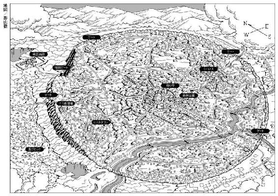
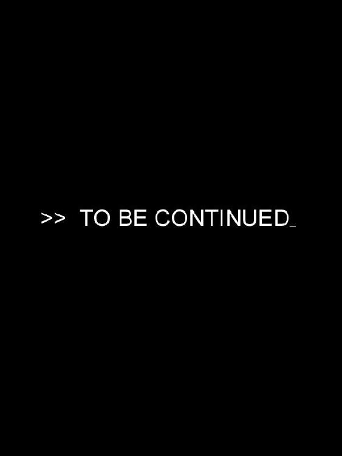

| NO.6 [ナンバーシックス] #05 | |
| あさのあつこ | |
| 講談社 (2009) | |
ebpaj-guide-1.0
ＮＯ．６
〔ナンバーシックス〕
＃５
あさのあつこ

みえ......ない
やめて......こない......で
あとは好運を祈るばかりだ！ こよなきしあわせ者になるか、世にもみじめな者になるか、それで万事が決る。
（ヴェニスの商人 第二幕 第一場 福田恆存 訳 河出書房新社 世界文学全集第二集第二巻）
紫苑。
呼びかけようとした。しかし、声が出ない。舌が動かない。手も脚も枷を嵌められたように重く、自由にはならなかった。紫苑は振り向かなかった。白いシャツをはおった背中が遠ざかる。周りは闇だ。漆黒の闇が広がっている。僅かな明かりもない。
紫苑、待って。行ってはだめ。
振り向いて、帰ってきて、それ以上、遠くに行かないで。
闇が動いた。命あるもののようにぐにゃりと蠢き、白い背中を呑み込んだ。
紫苑！
悲鳴が喉を突き破る。恐怖が激痛にかわって、全身を貫いた。紫苑を追って闇に飛び込もうとしたけれど、やはり身体が動かない。一歩も動けない。
誰か、誰か助けて。あの子を止めて。
「火藍」
「おばちゃん」
声が聞こえた。誰かが手を握っている。軽く身体を揺さぶられる。
「火藍、聞こえるか。聞こえているか」
「おばちゃん、しっかりして」
声には力があった。目の前の闇が払われ、ぼんやりと明るくなる。
あぁ......聞こえている。確かに聞こえているわ。
火藍は、瞼を開けた。紗を一枚被せたみたいに、視界がぼやけている。ぼやけた二つの顔が、浅黒い男と小さな少女の顔が覗き込んでいる。でも朧だ。瞬きすれば、ゆらゆらと揺らいで消えてしまいそうだ。
パンの匂いがする。生地にバターをたっぷりと練り込んだバターロールの匂いだ。夕暮れになれば、一日の仕事に疲れはてた労働者だとか、空腹を抱えた学生だとか、小銭を握り締めた子どもたちだとか、ロストタウンに住む人々が安価で美味な火藍のパンを求めて店にやってくる。そんな貧しいお客のために、午後五時ちょうどには焼きあがるようにと、窯の調整をしておいた。旧式のパン焼き窯は正確に作動し、数十個のバターロールを焼き上げてくれたらしい。
火藍にとって、パンの香りは生活の匂いそのものだった。嗅覚の芯まで沁みこんでいる香ばしい匂いが、火藍を完全に現実の世界へと引き戻してくれた。
紗が取り払われる。二つの顔の輪郭がくっきりと目に映る。
「莉莉......楊眠......」
「気がついたか」
楊眠が大きく息を吐き出した。よかったと唇が動く。
「起き上がれるか？ 無理をしないでいいけど」
「ええ......だいじょうぶ」
楊眠に支えられて上半身を起こす。仕事場の隅にある古いソファに横たえられていた。
「わたし、気を失って......」
「そうだ。ケースの後ろで、急に崩れるみたいに倒れて。驚いた。まだ、心臓がばくばくしてる」
楊眠が微笑む。安堵の笑みだった。火藍も微笑み返そうとしたけれど、頰が強張ってうまく動かない。
「おばちゃん！」
火藍の首に莉莉が飛びついてきた。涙が盛り上がっている。
「おばちゃん、だいじょうぶだよね。もう、だいじょうぶだよね」
首筋に押し付けられた柔らかい頰が濡れていた。首に回った腕も微かに震えている。少女の涙は温かい。熱いと感じるほどだ。いつもなら少女の身体を柔らかく抱きしめるのだけれど、腕がまだ、思うように動かない。まだ夢の中でもがいているかのように、重いのだ。
紫苑。
髪をかきむしりたくなる。気が狂いそうだ。今、こうしている間にも紫苑は、二度と母の手の届かない場所へと向かっているのではないか、奈落の底へと落ちているのではないか。
そうだとしたら、それが事実だとしたら、わたしはどうすればいいの。どうしたら......。
「あっ」
莉莉が小さく声をあげ、火藍から離れた。
「ネズミさんだ」
香辛料を並べた棚の端に茶褐色の小ネズミが座っている。その横に灰色の毛色をした顔がひょっこり覗いた。
「あれ、二匹いるんだ」
莉莉が指を二本立てる。兄弟なのだろうか、二匹ともよく似た葡萄色の目を瞬かせながら、身を寄せ合っている。
一匹は、さっき紫苑の手紙を運んでくれた。だとしたら、もう一匹は？
「莉莉、冷蔵庫の中からチーズを一かけ、持ってきてくれる。一番下のボックスに入ってるから」
「うん」
火藍はそっと、でも力いっぱい棚の上のネズミたちに向かって手を差し出した。指の先が震える。二匹のネズミは顔を見合わせ、ヒゲの先を小刻みに動かした。
チチッ。
一匹が促し、促された一匹が火藍に顔を向ける。とても小さな目なのに、知性を感じさせる。このネズミたちは、知性を持っている。人の心も言葉も解することができるのだ。
火藍はさらに、手を伸ばした。手のひらを上に向ける。
チッチッ。
するりと灰色が動いた。一瞬の躊躇いも見せず、手のひらに飛び降りてくる。首を左右に振り、小さなカプセルを口から吐き出した。今日二通目の手紙だ。
「おばちゃん、チーズ、ネズミさんにやるの？」
莉莉に頷き、カプセルを開ける。紫苑の文字ではなかった。でも、見覚えはある。紫苑が治安局員に連行された後、絶望の底にうずくまっていた火藍に手を差し伸べてくれた文字、書いた者の強靱な意志と知力を感じさせる流麗な筆致だ。忘れるわけがない。
再会を必ず。 ネズミ
あのときの十分の一にも満たない短い一文ではあったけれど、火藍は大きく息がつけた。身体の中を涼やかな風が通り抜ける。胸を、気道を、塞いでいた痞えが僅かだがめくれたのだ。
ああ、息ができる。
絶望するのは早すぎる。まだ、希望を失ってはいけない。
「ネズミ......」
声に出して名を呼んでいた。ふいに肩を抱かれた気がした。目には見えないけれど強くしなやかな腕に、確かに今、支えられている。
再会を必ず。何があっても、紫苑を生きてあなたのもとに帰す。必ず約束する。
耳元で低く囁かれる声を聞いた。もう一度、息をつく。
ネズミがいてくれる。いつも、いつだって紫苑の傍に、ついていてくれる。あの子は独りじゃないんだ。
「火藍、それは？」
楊眠が火藍の手元を見下ろしている。
「手紙よ」
「手紙？ きみの家では、ネズミが手紙を配達するのか？」
「そうよ。しかも、手書きでね。電子メールより、ずっとすてきでしょ」
微笑むことができた。楊眠と莉莉が顔を見合わせ、同時に口元をほころばせる。二匹の小ネズミにチーズを分け与えていた莉莉は、火藍の傍にくると、頰を火藍の胸に埋めた。今度は、ちゃんと抱きしめることができた。
「怖かった」
莉莉が涙声で言う。
「おばちゃんが......パパみたいに......動かなくなったらどうしようかって......怖かった。すごく、怖かった」
「パパ？ 莉莉のパパに何かあったの？」
「前のパパ。莉莉の本当のパパのことだよ」
「え？」
楊眠が僅かに首を振った。
「今の莉莉の父親は、恋香の再婚相手なんだ」
「月薬さんが......そうだったの」
眉の下がった細長い顔を思い浮かべる。そういわれてみれば、莉莉とは顔つきも体型もまるで似ていない。ただ、二人、手を繫いで歩いていたり、一緒にパンを買いにくる姿には何の違和感もなかった。仲の良い親子、幸せな父と娘だ。紫苑がいなくなってから、月薬と莉莉を目にすると、ちくちくと心が痛んだこともある。切なくもあり、羨ましくもあったのだ。
「じゃあ、莉莉のお父さんは......」
「本当の父親は数年前に亡くなっている」
「おばちゃんたちが、お引っ越ししてくるちょっと前だよ。でもね、今のパパも大好き。すごくおもしろくて、よく笑わせてくれるの」
莉莉が顎を上げ、笑顔になった。火藍が、普段より弱々しくではあるけれど、ちゃんと話ができることを確認し、安心したという明るい笑みだった。
「わたし、何も知らなかったわ。恋香は何も言わなかったから」
「言いたくなかったのさ、辛い記憶だからな」
思わず零れたのだろう。楊眠が深いため息をつく。
「パパ、みんなで食事をしてるときに、急に動かなくなったの。苦しいって言って、イスからバタッて倒れて、どうしてか分からないけど、動かなくなったんだよ」
幼い記憶がよみがえってくるのか、莉莉の身体が震える。火藍は楊眠に視線を向けた。視線で問うてみる。
どういうことなの？
「莉莉の父親は、娘の目の前で......死んだんだ」
楊眠が躊躇するように、睫毛を伏せた。
「いや、殺されたんだ」
「殺された！」
おぞましい言葉と紫苑の後ろ姿が重なる。爪が手のひらに食い込むほど強く両手を握り締めていた。
「莉莉の父親、翠風というんだが、翠風は建築現場で働く労働者で、力自慢の大男だった」
「優しくて、強くて、とってもかっこよかったって。ママが言ってた。ママのことをとても愛してたんだよね」
楊眠が苦笑する。
「恋香のやつ、いくら娘に伝えるにしてもちょっと美化しすぎだな。翠風は、大酒飲みだし、金にだらしないところもあって、恋香とはよくケンカしてた。けどまぁ、気のいいやつで、家族のために懸命に働いていたよ。陽気で歌が好きだったな。酔うといつも、大声で歌っていた。うん、いいやつだった。確かに家族をとても愛していた」
「その人が......殺された？」
「間接的にな」
「間接的......楊眠、わたしにも分かるようにちゃんと話してくださる？」
楊眠は粗末なイスを引き寄せ、腰を下ろした。右手でそっと莉莉の髪を撫でる。楊眠がこの姪を愛しみ、大切にしていることが伝わってくる仕草だった。
「分かるように話す......それができるなら、苦労しないんだがな。どうにも、分からないことだらけで、ちゃんと筋道をたてて話すことが難しくて」
楊眠の口調はいつもの明快さを欠いていた。歯切れが悪い。それでも言葉を探しながら、ぼそぼそと語り始めた。
「翠風は、その当時、ある建物の建築工事に関わっていた。建築労働者として働いていたんだな」
「ある建物の......」
「そうだ。それがどの建物なのか、今でも分からない。翠風自身も見当がつかないと言っていたそうだ。まったく窓のない、つまり外の様子の分からない車で現場まで運ばれたみたいだな」
「じゃあ、口を封じるために......」
「火藍、そうじゃない。翠風は自分の受け持ちの仕事に関しては真面目に働いていたけれど、その建物について興味があったわけじゃない。この都市のどこにあって、何をする所かなんてどうでもよかったんだ。たとえ、興味を持ったとしても、一介の労働者が嗅ぎ当てられるような秘密じゃなかった。巧妙に隠蔽されていたんだ。翠風の死の直後、ぼくなりに義弟がどこで働いていたか調べようとしたけれど、まるで歯がたたなかった。この都市には情報開示なんてものは存在しないからな。市当局が隠蔽するつもりなら、ぼくたち市民には手の施しようがない。翠風をわざわざ殺してまで秘密を守る必要はなかったはずだ」
「だったら......その人が亡くなったのは何が原因なの？」
「表向きは心臓麻痺ということになった。しかし、翠風が心臓発作を起こしたなんて、どうにも信じられんことなんだ。アヒルが池で溺れ死んだってニュース以上に信じられない」
「裏があるということね」
「うん......」
楊眠は重たげに口を結び、視線を辺りに巡らせた。
「だいじょうぶよ。盗聴はされていないわ」
「そうか......すまん。びくびくして、みっともないな」
「いいえ。ちっとも」
本当に盗聴されていないのだろうか。正直、自信はなかった。市当局の権力は絶大だ。やろうと思えば何でもやれる。市民の会話を全て盗聴し、その情報を管理することなど、造作もないことだ。
だとしても。
火藍は手の中のメモを握り締める。
怖れていては何もできない。怖れて口をつぐみ耳を塞ぐより、ともかく話し、聞こう。声に出し、耳を傾ける。それしか残っていないのだと思う。
言いよどむ男に向かって、身を乗り出す。
「それで、あなたが考える裏って？」
楊眠が一度だけ瞬きする。それから、火藍の双眸をじっと見つめてきた。
「これは、ぼくの推察にすぎない。だけど話してしまったら、きみに重荷を背負わすことになるかもしれない」
「わたしは自分の意思で聞きたいと願っているのよ」
楊眠を急かしてみる。
「あなたは、あなたなりに真相を調べた。ほとんど何も分からなかったと言ったけど、あなたのことだもの、何かは摑んだんでしょ。たとえ糸のように細い手がかりでも、真相に繫がるものを摑んだんじゃないの？」
「かいかぶりだ。ぼくには、そこまでやれる力も勇気も手立てもなかった......ただ、その現場で働いている間、翠風に与えられた賃金は相当なものだった。通常の倍近くあったらしい。恋香は、翠風から〝特別危険手当〟が付いていると聞かされて驚いたそうだ。ＮＯ．６の中で、危険を伴う工事が行われるなんて、ちょっと考えられないからな」
「危険手当......、何かを壊すとか爆破するとか......」
「あるいは、薬品を扱うとか」
「薬品って、毒薬ってこと？」
「それに準じるものも。未知の、ＮＯ．６の科学者たちさえ、どう扱えばいいか正確に取り扱い方法が分かっていないもの」
「まるで想像がつかないわね」
「そうだな。何と言っても情報が少なすぎる」
「でも、その現場で働いていたのは莉莉のお父さんだけではないんでしょ？ その人たちに聞けば何かが分かるんじゃないの」
「それが、見つからないんだ」
「見つからない？」
「うん、見つからないというか、もしかしたら最初からいなかったのかもしれない。つまり、翠風の他は、工事に携わっていた人間はいなかった」
「人間は......あっ、じゃあロボットが」
「そう。ロボット。作業用のロボットが使われていたんだ」
顔を上げ、見るともなく天井を眺めてみる。紫苑もロボットを使っていた。公園の清掃用のロボットだった。
「可愛いやつらなんだけど、機能が今一歩って感じなんだ。この前なんか、風に飛ばされた婦人用の帽子を拾ったのはいいんだけれど、力の調節がうまくいかなくて、その帽子をぺっしゃんこに潰しちゃって持ち主がかんかんさ。丁寧で細かな作業って、人間のほうがまだまだ優れているって思うな。人間の指って、ほんとにすごいんだ」
そう言って指先を軽く動かしたりして......。
火藍は息子の面影を無理やり搔き消すために、固く目を閉じた。精一杯冷静な声を出す。
「莉莉のお父さんは、ロボットにはできない仕事をしていたのね」
「だろうな。といっても、翠風は技術者じゃなかった。特別な技術を持っていたわけじゃないんだ。根はとても真面目なやつだったから、与えられた仕事は丁寧にするだろうけれど......ロボットに交じって、何をしていたか想像がつかない」
「指先かしら」
「え？」
「人間と作業用ロボットの違いよ」
紫苑の指先が記憶の中でひらひらと揺れる。器用な指先だ。細かな仕事を、とても巧くこなしてくれた。その巧みさに、ときおり、見惚れることもあった。
母さん、人間の指って、ほんとうにすごいんだよ。
「壁を壊したり、重量のある物を運んだりするのなら、ロボットのほうが便利かもしれないけど、もっと細かで丁寧な作業......たとえば......そうね、小さなタイルを使って壁に複雑な文様を描いていくとか、柱に文字を彫り込んでいくとか......そういうの、まだロボットでは無理でしょ。パンでもそうよ。同じ味、同じ単純な形のパンなら、機械で十分。でも、お祝いのケーキみたいに好みの味や美しさが大切なものは、人の手作業でないといいものは作れないの」
「しかし、翠風はきみのようにパンやケーキが作れたわけじゃない。タイルで文様を描くことも、文字を彫り付ける技術もなかった。ほんとうに、特別なことって何もできなかった......はずだ」
「物を運ぶのは？」
「物を運ぶ？」
「ええ、大切な物......壊れやすい物とか、柔らかな物とか、帽子みたいに形を崩してはだめな物とか、それなら、人の手のほうが適しているわ」
「そうだな。そうかもしれない。翠風はロボットには任せられない何か、最高レベルの危険物あたりを運んでいたのかもしれない。だけど......もし、そうだとしても、それが何なのか、突然死とどう関係するのか、さっぱりだ。いくら頭を捻っても、推量の域を出ない。ぼくたちは結局、なす術もなく、答えの出ない問いかけを繰り返しているだけなんだ。何も分からない......分かっていることは、翠風が市の工事に携わり、亡くなった、それだけだ。なぁ、火藍」
楊眠の口調はますます重く、聞き取りにくいほど低くなる。
「この都市は無慈悲に人を食らう......そう思えてならないときがあるよ。自分たちの価値観から外れた者、自分たちの価値観で劣っているとみなした者、自分たちの価値観に異を唱える者を食らうんだ。頭からばりばりと食い荒らし、捨ててしまう」
「ええ......」
「さしずめ、このロストタウンなんかは、市内の吹き溜まり、当局の価値観からすれば、外れ者や劣等な人間たちの集まった場所、いや、そんな人間を意図的に集めた場所なんだろうな。使い捨てても惜しくない人間たちの集積場だ」
重く低い声音にも、楊眠が口にしていることにも、震えがくる。火藍はちらりと莉莉に目をやった。大人たちの会話に飽きたのか、少女は二匹のネズミを相手にして遊んでいた。茶褐色と灰色の小ネズミたちは莉莉の膝の上でチーズの欠片を頰張っている。人でも他の動物でも、小さいものは愛しい。小さく脆い肉体を精神を、大人は必死で守り通してやらねばならない。
火藍はそう思う。幼い莉莉に現実のおぞましさを突きつけたくなかった。目を眩まされてはいけない。ごまかされていてはだめだ。真実を見通さなければならない。でも、それは、知ることに耐えられるほど大人になった者が背負う覚悟だろう。莉莉はまだ、幼すぎる。
「莉莉」
火藍の呼びかけに、少女は黒目がちの大きな瞳を向けてきた。
「ネズミさんたち、チーズだけではお腹いっぱいにならないみたいね。ケースの隅に昨日焼いたバターロールが一つ、残っているの。それを半分ずつやってくれない」
「ネズミさんに、パンをあげてもいいの？」
「ええ、ご褒美にあげてちょうだい。それと、お店番もお願い。お客さんが来たら、教えてほしいの。『いらっしゃいませ』ってご挨拶してね。後で、焼きたてのバターロールをご馳走するから」
「やったあ。あたしね、一度、パン屋さんのお仕事、やってみたかったんだ」
莉莉の肩にネズミが乗っている。すっかり仲良しになったらしい。利口なネズミたちだ。危険な相手か、馴れてもだいじょうぶか、人間をちゃんと見極めている。
「おばちゃん、あのね」
莉莉が背伸びするようにして、火藍の耳元に口を寄せた。
「これ、ナイショだけどね」
「ええ、なあに？」
「ママね、赤ちゃんを産むの。あたし、お姉ちゃんになるんだよ」
「まあ。恋香が。すてきだわ。いつのこと？」
「暖かくなって、お花がいっぱい咲くころ」
楊眠が苦笑する。
「おいおい、莉莉。ママの秘密をばらしちゃっていいのか」
「おばちゃんなら、いいよ」
「嬉しいわ。教えてくれてありがとう。赤ちゃんが生まれたら、特大のケーキでお祝いしなくちゃね。莉莉、じゃあお店のこと、お願いね」
「うん。『いらっしゃいませ』だね。『いらっしゃいませ』」
小ネズミを肩に乗せて、莉莉が店へと出て行く。楊眠が、何度目かのため息をもらした。
「そうか、莉莉にはあまり聞かせたくない話だな」
「ええ、自分の父親が物のように扱われ、結果的に命を落としたなんて......いずれ知ることになっても、まだ、今はまだ早すぎるでしょう」
莉莉の消えた出入り口に向けられていた視線を楊眠は、ゆっくりと火藍の上に戻した。
「物のように扱われる。そうだ、翠風はロボットと同じ扱いをされたんだ。その仕事がどのくらい危険なのか十分な説明など受けていなかったはずだ。曖昧にされて、高額な賃金だけ鼻先につきつけられた。翠風は金が欲しかったんだ。同僚といざこざを起こして前の職場を解雇されたばかりだったからな。家族を養うためなら、多少の危険は覚悟しても仕事をしただろう。市当局は、むろんそのあたりのことを調べて、翠風を選んだんだ。市民の情報なら全て、把握しているんだからな。適任者を選ぶなんて、何の苦労もなかっただろう。未知の危険のある仕事の担い手、力仕事に慣れていて、生真面目で黙々と働く男。好奇心や探求心、猜疑心のない男、金のためなら危険も厭わない男......翠風はぴったりだったんだろうな」
「その仕事と突然の死とは、無関係じゃない。あなたは、確信しているのね」
「ああ。どう関係しているかはまるで分からないけれど、関係あることだけは確かだと信じている。なぜなら......」
「なぜなら？」
「翠風が倒れて、恋香は当然、救急車を呼んだ。そしたらな、ものすごく早くやってきたって言うんだ。連絡してから三分もたっていなかったと」
三分以内の救急車の到着。それはロストタウンでは稀な、いや、ほとんど皆無のことだろう。
聖都市と呼ばれるＮＯ．６は、強固な階層制の上に成り立っている都市社会だ。市政を司る市長を頂点に一握りの「選ばれた者」たちが君臨する。彼らはエリートと称され、『クロノス』と呼ばれる特別地区の高級住宅街に住み、安穏で贅沢で快適な生活を享受していた。その下に位置する一般市民も『クロノス』の住人には遠く及ばないが、高度に発達した医療や科学技術に支えられたそれなりに幸福な日々を、あるいはそれなりに幸福だと思い込まされている日々を送っている。火藍たちロストタウンに住む者は、エリートは言うに及ばず、一般市民が当然のように受けている市からのサービスも保護もほとんど保障されていない。準市民としての扱いだった。楊眠の言葉を借りれば、使い捨てても惜しくない人間たちの集積場だった。
救急医療などロストタウンでは、ほとんど望めない。救急車も医療機関の数も『クロノス』の十分の一以下だと聞いたことがある。けが人も病人も、『クロノス』よりずっと多いにもかかわらず、だ。
三分以内の救急車の到着。奇跡に近いその出来事は、何を意味するのか。
「莉莉のお父さんに異変があったら、すぐに対応できるように、監視下におかれていたってこと？」
「レベル３、中程度の監視態勢だったんだろう。救急車が到着したとき、夕食の席で突然、痙攣をおこした翠風はすでに動かなくなっていた。その時点でまだ生きていたのか、すでに遺体になっていたのかは分からない。保健衛生局員によって運ばれていってしまったからだ。救急車に同行しようとして恋香は拒否された。家で待っているように命令されたんだ」
「そのまま、莉莉のお父さんは......」
「二時間後に完全な遺体となって戻ってきた。保健衛生局から派遣された医師が心臓麻痺だと説明したけれど納得できるわけがない。そのときは、ぼくも恋香からの連絡で駆けつけていたから、もっと詳しく説明してくれと食い下がった。でも、無駄だった。翠風のＩＤカードが葬儀を許可するための死亡確認カードに替わっただけさ」
「そう......そうだったの」
自分がずいぶん間の抜けた返事をしていると感じている。しかし、今、楊眠の言葉に対してどんな受け答えをすればいいのか、するべきなのか、見当がつかないのだ。軽く聞き流せることではない。安易な慰めや悼みなど、むろん的外れだ。だとしたら、何をどう言えばいいのか、戸惑ってしまう。戸惑いは不安に変化し、微かな恐怖の色合いを帯びる。楊眠の言葉が、さらにその恐怖を色濃くしていく。
「その医師が去るときに、恋香に向かって何て言ったと思う？ 『この患者はほとんど苦痛なく亡くなりましたよ』だとよ。確かにな、翠風の死に顔は穏やかだったよ。いい夢でも見ているみたいに微笑んでいた。しかし、恋香も莉莉も、倒れる直前の苦痛に歪んだ顔を見ているんだ。穏やかに亡くなったなんて信じられるわけがない」
「莉莉のお父さんは、特殊な方法で穏やかな死に顔を作られたって......」
火藍は息を呑んだ。両親も含め、火藍の知っている遺体はどれも、穏やかに微笑んでいたのだ。苦痛など、生前に一度も経験したことがないと言わんばかりの笑みをたたえていた。どの死に顔も美しかった。そんなものだと思っていた。末期医療技術の進んだＮＯ．６では、誰もが無痛の安楽な死を約束されていると。
噓だ。全て虚構だ。ここでは、人の死さえもごまかされ、加工されるのだ。人の死の一つ一つに張り付いている事情も真実も全てきれいになめし、均し、整え、「幸福な死」として片付けてしまう。
わたしたちは、底知れないほど不気味な世界にいる。それは、わたしの貧弱な想像をはるかに超えた不気味さではないのかしら......。
「ともかく翠風の死はいまだ、謎のままだ。恋香は再婚し、それなりに暮らしている。ぼくは、この通り、その日暮らしの情報屋だ。雑用に追われて、翠風のことを忘れていることが多くなった。ちくしょうと思うがな。翠風のことも、ましてや妻や息子のことは、絶対に忘れないって歯嚙みしている毎日さ」
「莉莉のお父さんも、あなたの奥さんや息子さんも、この都市に殺されたのだとしたら、忘れられるわけがないわ。絶対に忘れたりできないでしょ」
「そうだ、今、ぼくにできることは記憶することだけだ。記憶し続ける。奪われた者たちのことを決して忘れない。だけど、時々、ぞっとするんだ。もし、当局に拘束されたら、そして、記憶を消されたらって考えて......」
火藍の顔を楊眠が覗き込む。暗い目をしていた。絶望をそのまま流し込んだような眼差しだ。
「記憶を消すって？」
「ロボトミー手術さ。脳にメスを入れて、人間の記憶や思考力を奪ってしまう」
「楊眠、それは」
考えすぎよ。妄想よ。
そう続けることができなかった。ありうることかもしれない。紫苑が消えてから、火藍の目の前で次々と聖都市の仮面がはがれていった。まだ、ほんの一部分でしかないけれど、火藍が目の当たりにしたＮＯ．６は、聖都市どころか非情極まりない管理都市国家だった。
この都市は、人間を支配しようとしている。
都市内に住む全ての市民の精神と肉体を余すところなく支配する。思考も、生命も、運命も徹底した管理下におき、支配する。
そう、楊眠の言うとおりだ。ＮＯ．６は人を食らう。人間であろうとする試みも、心も、抗う意思も、願いも、ばりばりと食らってしまう。聖都市ではない。支配欲に猛り狂った怪物だ。
誰も気がついていないのだろうか。表面的には、それなりに快適な生活に晦まされて、怪物の姿に微かにも気がついていないのだろうか。何と愚かな......。
火藍はかぶりを強く振った。他人事ではない。決して他人の問題ではなかった。
「火藍、気分が悪くなったのか？ 目眩をおこしたばかりなんだ、少し休んだほうがいい。悪かったな、こんな話をしてしまって」
楊眠が、心底申し訳ないという表情になる。もう一度、かぶりを振った。
「違うの。ただ......思い出してしまって」
「え、なにを？」
「莉莉に尋ねられたことがあったわ。わたしたちは幸せなのかって」
莉莉が問うてきた。
「あたしたちって幸せなんだよね？」
もうずいぶん前のことだ。苦労して開いたパンの店が何とか軌道にのりかけた頃だった。火藍は、そうねえと曖昧に首を傾げた。好きなパンやケーキ作りを生業にできる。僅かな糧ではあったけれど息子と二人、細々と暮らしていく目処はついた。全ての特権を剝奪され、『クロノス』を追放されながら何とか自分たちの力で安定した生活を手に入れた。そんな時期だった。この数年後に紫苑との残酷な別離が待っているなんて、むろん知る由もなかったから、幸福かと尋ねられれば、そうねえ、幸せかもしれないわねと、しっかり頷いてもよかった。実際、そのとき火藍は、自分を不幸だなどと僅かも思ってはいなかったのだ。
『クロノス』からロストタウンへの転落は、火藍をさほど嘆かせることも苦しませることもなかった。むしろ、衣食住、全てを保障された生活を脱ぎ捨てた軽さを味わっていた。それに、準市民扱いをされる境遇とはいえ、ロストタウンの住人としてＮＯ．６の壁の内にいることに変わりはない。贅沢さえ望まなければ生活に支障はない。清潔な水と食べ物も容易に手に入る。不十分だけれどロストタウンの住人用の医療機関が作られ、受診も可能だ。風雨を凌げる住居もある。栄養不良、餓死、凍死、殺戮、そんなものとは無縁の日々が存在していた。傍らには紫苑がいて、店にはパンを求めて客が来てくれる。
不幸だなんて、思ってもいなかった。
幸せだよねと言う莉莉の問いに、火藍を素直に頷かせなかったのは、自身の境遇や心境ではなく莉莉の瞳を過った影だった。戸惑いと言っていいかもしれない。莉莉は戸惑い、気持ちが落ち着かず、大好きなパン屋のおばちゃんに縋ってきたのではないか。
「幸せって一言で言ってしまうの、難しいわね。幸せなときも、不幸なときも、嬉しいときも、辛いときも、いろいろあるものね」
「そうだよね」
莉莉が指を握り込んだ。
「そうだよね。いろいろあるよね」
「そうよ。莉莉だって、そうでしょ。一日のうちだって、幸せなときと不幸せなときが、あるんじゃない？」
「うん、あるある。お腹が空いたときに、おばちゃんのマフィンを食べるときはすごーっく幸せだけど、ママに怒られたり、お友だちとケンカしてなかなか仲直りできないときは、不幸だなあって思う。だけど......」
「うん？」
「学校でね、先生がＮＯ．６に住んでいる人はみんな幸せなんだって言うの。ＮＯ．６に不幸な人は誰もいないって」
「授業でそう教わったの？」
「うん。校長先生のお話の時間。ＮＯ．６の外側は、とてもたいへんで不幸な世界があるんだって。そこではね、毎日、人が死んでるの。食べる物がなくて死んだり、争ったり傷つけあったりしていて、獣みたいな人たちが、獣みたいな暮らしをしているんだって。そんな人たちに比べたら、ＮＯ．６は天国で、みんな幸せなんだよって」
獣のような人たちとは、西ブロックの住人を指すのだろう。ずいぶん侮蔑的な言い方だ。子どもの教育に携わる者が、同じ人間を獣呼ばわりするなんて。
火藍は眉をひそめた。屈み込み、莉莉の目を見つめてみる。
「でも、莉莉はそう思わなかったのね？」
「うーん、何か変な気持ちがした。お腹の辺りがむずむずするみたいな、変な気持ち。だってね、だって......ママはね、時々、お金がなくて困ったって言うし、仕事でくたくたになって悲しそうな顔するんだよ。隣の最頓のおじちゃんだって、腰が痛い痛いって苦しそうだもの。みんな、幸せだなんて、おかしいなあって思ったけど......」
「校長先生にそう言わなかったの？」
莉莉は目を見張り、かぶりを強く横に振った。
「そんなこと言ったら、校長先生にすごく怒られる。校長室に呼ばれてムチで打たれることもあるの」
「まあ、ムチで。そんな酷いことを......」
「ＮＯ．６に住んでいるのに、幸せだと思わない子は悪い子なんだって。だから、ムチで打たれてもしかたないって」
「そんなこと、ないわ！」
思わず叫んでいた。莉莉の肩に手を置く。
「そんなことないのよ、莉莉。絶対にないの」
「おばちゃん......」
心が騒いだ。ざわざわと音がする。目の前の少女に伝えなければならないことが確かにあるのに、それが上手く言葉にならない。自分自身がもどかしかった。
「莉莉は子どもなんだし......いえ、大人だって、いろんな考え方をしてもいいのよ。みんなが、同じように考えたり、感じたりするの、おかしいでしょ。それに、それにね......」
ＮＯ．６の中にだって、不幸な人間はいる。たぶん、わたしが思っている以上にたくさんいるはずだ。
それは火藍の実感だった。選民の住む場所『クロノス』から、準市民の居住区ロストタウンに移ってきた。そのことを悲運とはあまり感じないけれど、ＮＯ．６という都市国家の頂点と底辺をこの目で見、この身体で生きてきたことは確かだ。
ロストタウンだけではなく、この世で最も理想的な街と称される『クロノス』でさえ、不幸な者はいた。大勢、いた。ただ、あの街では誰も「わたしは不幸だ」と口にしない。恋香のように家計の困窮を訴える者も、最頓のように肉体の不調を嘆く者も、『クロノス』には一人としていなかった。住人は誰も安定した高収入を約束されていたし、二十四時間、昼夜を問わず、最新最高の治療を受けられる立場でもあったのだ。でも不幸な人は存在していた。
「明日、わたしは何をすればいいのかしらねぇ」
そう呟いた人がいた。隣家の老女だった。隣家といっても『クロノス』の住宅の場合、かなりの広さの庭がついていて、市から定期的に庭師が派遣される仕組みになっていたから（この庭師が庭に設置された警報システムの管理、点検も請け負っていたことを火藍は長い間、知らずにいた）、壁一枚で隣接しているロストタウンのように隣人と日々、顔を合わせ、声を掛け合うことはなかった。
火藍は、七十歳を越えた老女と不思議に気が合って、たまにお茶に呼ばれたりしていた。老女は夫も娘も孫も、紫苑と同じ最高レベルのエリートと認定され、『クロノス』の中でもさらに恵まれた、何一つ不自由のない境遇を保障されていたけれど、驕ったところもなく、横柄な態度も見せず、一人で息子を育てている火藍になにくれとなく優しい心遣いを示してくれたのだ。
その日もそうだった。晴れ渡った穏やかな晩秋の午後、アフタヌーンティーに招待してくれた。
ティーポットから注がれた紅茶の芳醇さに感嘆の声をあげようとしたとき、老女がぼそりと呟いた。路上に舞う枯れ葉に似た乾いた声だった。乾いてはいるけれど重くて、暗い。
「明日、わたしは何をすればいいのかしらねぇ」
火藍は、薔薇の絵柄のカップから視線を起こし、呟いた人の、上品で穏やかな横顔を見つめてしまった。老女の言葉はちゃんと耳に届いている。でも、その声音が、この美しい風景にも贅を尽くした屋敷にも紅茶の芳香にも不釣り合いで、思わず聞き返してしまった。
「なんて、おっしゃいました？」
老女がゆっくりと視線を巡らす。小粒のルビーがはめ込まれたほとんど装飾品に近い眼鏡の奥で、皺に囲まれた両眼が瞬く。
「明日......何をすればいいのか、分からないの」
「それは、何もやることがないって意味ですか？」
「やりたいことが......分からないのよ、火藍さん」
老女の目の縁に涙が滲んだ。
「分からないって......」
「何もないの、空っぽなの。そう思うと、とても怖くなるの。特に、朝が嫌、とても嫌。また空っぽな一日が始まるって思うと、怖くてたまらなくなって......」
老女の涙ぐんだ目と呟きの意味を若い火藍は理解できず、狼狽してしまった。噓でも芝居でもない証に、ショールをはおった老女の肩が小刻みに揺れている。
「あの、でも......やろうと思えば、何でもおやりになれると思いますわ。いろんなことが......」
「そうかしら、このまま、空っぽな日々が死ぬまで続くような気がして......わたし、できることが何にもないまま、死んでいくんだと思うと、辛いより怖くなるの」
火藍は腰を浮かし、思わずかぶりを振った。
「そんなこと、ありませんわ。だって、ほら......このお部屋の飾りつけだって、紅茶の淹れ方だって、とてもすてきでお上手だし」
火藍のたどたどしい励ましに、老女は穏やかに微笑んで応えた。
「火藍さん、あなたは優しい人ね。でも......そうね、いつか、あなたもわたしと同じ恐怖を味わう日がくるかもしれませんね」
眼鏡の奥の老女の眼は少しも笑ってはいなかった。暗い空洞のようだった。そのとき、火藍は身震いしたのを覚えている。一年中、快適な室温に保たれている豪華な調度の並ぶ一室にいながら、寒気を覚えたのだ。老女の眼差しは若い火藍を震えさせるほど、暗く、虚ろだった。老女は豊富な時間と財力を持っている。望みのほとんどが叶う立場ではないのか。それなのに嘆くなんて、贅沢で傲慢で......火藍は心の内で呟こうとした。でも、この暗さ、この虚ろさの前では身も心も竦んでしまう。他人を竦ませる絶望が、眼鏡の奥に宿って鈍い光を放っていた。紅茶を飲み干し、早々に立ち去った。カップを受け皿に戻すとき指先が震え、かちゃかちゃと音をたてたことをはっきりと覚えている。
それから間もなく、季節が変わろうとする端境の頃、老女は突然に逝った。棺の中で、大好きだったという白百合に囲まれて目を閉じている老女は、生前と同じ艶やかな肌をして、穏やかな笑みを浮かべていた。呼べば返事をしそうなほどだ。
「とても、幸せな生涯でした。ＮＯ．６の全てに感謝します」
それが息を引き取る間際の言葉だったと、中央管理局に勤める娘が教えてくれた。
トテモ シアワセナ ショウガイ デシタ ナンバーシックスノ スベテニ カンシャ シマス
「お母さまが、ほんとうに？」
「そうですよ。当たり前じゃないですか。母は申し分のない一生を送りました。誰が考えてもそうでしょ」
「いえ、誰というより、あなたご自身がそう考えていらっしゃるのかなと、思いまして......」
「わたしが？」
「そうです。お母さまが不幸だったとお考えになったことは、ありませんか？」
娘の眉間にシワが寄り、露骨な嫌悪が眼差しに滲んだ。醜悪な生き物を見るように火藍を眺め、半歩後ずさりする。
「母が不幸だったなんて、ありえないことです。母は一日だって不幸な日を過ごしたことはないですよ。常識で考えたって分かることでしょう。あまり、失礼な発言をなさらないでください」
娘が背を向ける。それから、葬儀の間中、火藍に近寄ろうとはしなかった。
そのとき、火藍は老女が本当に不幸だったのだと感じたのだ。幸せでなければならない日々を生きることの不幸に、不幸であってはならない人生に、あの老いた人はもがいていたのだ。
もしかしたら。
動悸が速くなる。白百合に囲まれた人形じみた顔が浮かぶ。
もしかしたら、自殺を......。
口には出せなかった。『クロノス』の住人が自ら命を絶つことなど、それこそありえない。ありえないこととされてきた。
でも、でも......存在するわけのない不幸があるのなら、絶望の果てに命を絶つ人もまた存在するのでは......。
棺が運び出され、墓地へと運ばれるまで火藍は、喪服用の黒い手袋を強く握り込んでいた。
莉莉に老女のことを話してやればよかった。『クロノス』であろうとロストタウンであろうと、不幸は必ず存在する。なぜ不幸なのか、どうしたら幸福になれるのか、どんな幸福が本当の幸福と言えるのか、莉莉と一緒に考えればよかったのだ。幸せを強要する校長のことを、暗い眼をした老女のことを、家畜のようにムチ打たれる痛みのことを、少女と一緒にもっと語り合えばよかったのだ。自分の心のざわめきに、少女の戸惑いに、もっと思いを馳せればよかったのだ。しかし、火藍は何も言わなかったし、何もしなかった。
「どこにだって、不幸な人はいるものよ。幸せでなければならないなんて、いくら校長先生でも言い過ぎよね」
と、当たり障りのない言葉でごまかしてしまった。ちょうど裏口で、小麦とライ麦の粉を運びこんできた商人のおとなう声がしたのだ。お客も数人、入ってきた。
「おばちゃん、ありがとう。また、来るね」
莉莉が出て行く。仕事にかまけるふりをして火藍は、老女のことも、莉莉のことも、葬儀の日に感じたおののきも、人の幸と不幸についても、思考から追い出してしまった。考えようとしなかった。忘れてさえいた。楊眠は、歯を食いしばるようにして記憶してきたではないか。なのに、忘れていたのだ。思い出そうとしなかった。
愚かなのは他者ではない、自分自身だ。
もう少し、わたしが賢明であったなら、もう少し深く思考していたのなら、紫苑をあんな目に遭わせずにすんだかもしれない。
紫苑だけではない。沙布にもまた、理不尽で過酷な運命を背負わせてしまったのではないか。火藍は唇を強く嚙み締めた。
紫苑、沙布、生きていて。お願い、生き延びて。生きて帰ってきて、わたしに自分の愚かさを詫びさせて。この手にあなたたちを抱きしめさせて。許しを請わせて。
手の中の小さな紙切れを胸に押し付け、祈る。
再会を必ず。 ネズミ
ネズミ、あなたに祈ります。どうか、どうか、あの子たちに会わせて。もう一度、会わせて。
莉莉の笑い声が聞こえてくる。屈託のない明るい笑い声だ。小ネズミたちの柔らかな鳴き声も混ざっていた。
再会を必ず。
メモの言葉を呟いてみる。溢れそうになる涙を堪える。泣いても何一つ解決しない。
今はただ、まだ見ぬあなたに祈ります。
再会を必ず。
事態がのみこめたときには、私は身動きがとれなくなっていた。私に何ができただろう。（中略）逆らえば殺されていただろうし、さもなければ自殺していたかもしれない。三度にわたって辞任を考えたが、実行には移せなかった。
（ニュルンベルク・インタビュー レオン・ゴールデンソーン 河出書房新社）
闇が突き刺さる。網膜にも鼓膜にも皮膚にも、鋭利な針と化して突き刺さる。
紫苑は深く胸の奥底まで空気を、いや闇を吸い込んでみた。その行為で、痛覚と身体の震えを抑え込む。怯えたくなかった。怯えゆえの叫びをあげたくない。傍らにいるネズミにだけは聞かせたくないのだ。
悲鳴なんて聞かれてたまるか。
無様な姿をさらしたくない。こんなときでさえ、自分の内で激しく疼こうとする自尊心に、紫苑はもう一度息を呑み込んだ。
くすっ。
耳朶のすぐ近くでネズミが笑う。同時に、腰に回った手がさらに強く胴を締め付けてきた。
あんたの強がりなんて、ちゃちなもんさ。
そう囁かれた気がした。しかし、実際に耳に響いたのは、
「落ちるぞ」
全ての感情を排した平坦な声だった。感情のこもらない声は凍てついた風となり、紫苑の全身を包んだ。痛覚も、怯えも、自尊の思いも吹き払われ、紫苑は一瞬、空っぽになる。空蟬のように、外殻だけを残して空洞になるのだ。ネズミの声を耳にすると、ときおり、そんな感覚を味わった。嫌ではない。清涼ささえ覚えた。空になることのすがすがしさ。
三度、息を吸おうとしたとき、足元の床が消えた。ガタリと重たげな音をたて、二つに開いたのだ。まるで、絞首台だ。首に縄が食い込んでこなかったことが、頸骨の折れる音を聞かなかったことが、身体が宙吊りにならなかったことが不思議だった。
落ちていく。まっすぐに落下する。そのはずなのに、今、このときの状況がつかめない。落ちているのか、浮いているのか、昇っているのかつかめないのだ。落下も浮遊も上昇も区別がつかない。感覚が四方の闇に呑み込まれてしまう。
衝撃がきた。身体をしたたかに打ち付ける。息が詰まった。落ちた場所は僅かな弾力があった。肉を挫き、骨を砕く硬さではなく、衝撃を緩和する柔らかさがあった。
何の上に......。
確かめるヒマなどない。身体が強く、引っ張られる。
「転がれ」
ネズミに突き飛ばされる格好で、紫苑は転がった。何も考えず、恐怖すら感じないまま、回転する。肩が硬いものに当たり、痺れるような痛みがきた。壁らしい。床についた手のひらに揺れを感じた。異様な唸りに似た震動だ。
「立て。壁に張り付くんだ」
立ち上がり、コンクリート製らしいざらついた壁に身体をくっつけた。意思も思考も感覚も半分麻痺している。ネズミの指示に従って、動くのが精一杯だった。ネズミの身体がかぶさってくる。いつもより、熱い。しかし、背中に伝わる鼓動は僅かも乱れていなかった。強く圧せられ、紫苑は思わず声を出してしまった。
「苦しい」
しかし、呟きに近いその声は、背後の凄絶な音に搔き消されて、自分の耳にさえ定かには届かなかった。
「ネズミ」
僅かに身じろぎしてみる。
「これは......」
こんな音を、声を、生まれて一度も聞いたことはない。
何なんだ、これは、何なんだ。
呻き？ 唸り？ 叫び？
地下から湧いてくるのか、頭上から降り注ぐのか、捩れ、絡まりあう重低音が四方から紫苑を締め付けた。甲高い悲鳴が混ざる。それが掠れ、途切れ、束の間、不気味なほどの静寂が訪れた。そして、また、湧き上がり、降り注ぐものは......。
人の世の音声ではない。物音ではない。
「ネズミ！」
耐えられなくて身をよじる。押さえつけていた力が弱まる。ネズミの身体の熱がふっと遠のいた。髪の毛を摑まれ、向きを変えられる。背中を壁に押し付けられ、髪を手荒く引っ張られた。
顎が上がる。露になった耳に、ネズミは言葉をねじ込むように低く、囁いた。
「見たければ見ろ。聞きたければ聞け。ただし」
髪を離した指先が、紫苑の首筋をすっと撫でた。紅い帯状痕の上だ。
「一生、悪夢に付き纏われることになる。覚悟しとけ」
ふふっ。吐息に似た笑いが紫苑の体内に流れ込んでくる。冷笑だった。嘲笑かもしれない。ネズミは幾通りもの笑いを自在に操ることができた。いつもなら、本気で腹をたてたろう。そんな笑いを浮かべるなと、詰め寄っただろう。
自分自身を嘲り、見下し、蔑ろにする者に対し、心底から怒れ。誰でもないネズミに教わったことだ。怒りだけでなく、泣くこと、笑うこと、畏れること、拒むこと、求めること、愛すること、具わった全ての感性を研ぎ澄ませと教わった。
鈍らせるな。萎えさせるな。あんたという人間を冒瀆する万千に牙をむけ。
教えてもらったのだ、確かに。しかし、今、紫苑に怒るだけの余裕はなかった。感情が抜け落ちていく。
「ネズミ、これは......何だ」
「現実さ」
ネズミの声には、もう、笑いは僅かも含まれていなかった。
「見るなら、最後まで見届けろよ。聞くなら、決して耳を塞ぐな」
最後まで見届ける......これをか。
紫苑は口を開け、喘いだ。
目の前は闇だ。その闇の底で人が蠢く。蠢いているのだと思う。闇にも濃淡があり、暗みに慣れた目がその濃の部分を捉えた。折り重なった人間の塊だ。エレベーターに詰め込まれた人々が床に叩きつけられ、重なり、蠢いている。
絶叫がおこった。影が一つ、落ちてくる。エレベーターのどこかに必死で摑まっていた者が力尽きたのだ。男か女か分からない。獣の咆哮に似た叫びが黒く塗り込められた空間にこだまする。
ズンッ。
人間の肉体と肉体がぶつかり合う。その音は鼓膜ではなく、身体中の皮膚を震わせた。
紫苑は思い出そうとした。自分と一緒にエレベーターに詰め込まれた人々の姿を一人一人、思い出そうとした。
男がいた。女がいた。半白の髪を乱した老婆がいた。褐色の肌をした若い娘がいた。瘦せて目の窪んだ商人がいた。蒼白な顔をした『片付け屋』の生き残りがいた。
乳飲み子を抱いた母親がいなかったか。母親に抱かれた赤ん坊がいなかったか。いた、確かに、いた。
汚れた白い布に包まれ、母親の胸でむずかっていた小さな赤ん坊は、この塊のどこかに......臭いがなだれ込んできた。今までほとんど麻痺し、閉じていた感覚が一気に外界に向けて開け放たれたようだ。
汗がふきだす。歯の根が合わず、ガチガチと小刻みな音をたてる。血の、汚物の臭いが、体臭が、コンテナの中の何倍もの濃度で鼻腔を襲う。人の潰れる音がした。人が人の重みで潰れていく。今、初めて耳にしたのに、人の崩潰の音だとわかる。
「地獄だ」
呟いていた。
「現実さ」
呟きが返ってくる。
「地獄じゃない。これが、あんたの生きている世界の現実だ。紫苑」
吐き気がこみあげる。壁に寄りかかり、紫苑は手で口を覆った。嚙み締めた歯の間から胃液が漏れる。汗が目に沁みた。閉じた瞼の裏に、ＮＯ．６での日々が浮かび、巡った。
『クロノス』の住宅地に咲いていた色とりどりの薔薇の花、夕焼け空、薄青の教室の壁、手を振る沙布、ロストタウンの早朝、家中に漂うパンの香り、火藍の後ろ姿、少女の足音、「おはよう、お兄ちゃん」「おはよう、莉莉」、サンポのぶかっこうな丸い体、イッポが摑み損なってくしゃくしゃにしてしまった婦人帽、桃色の花飾りがついていた。「あーっ、やばいぞ、イッポ」山勢の大声、沙布と立ち寄ったカフェのコーヒーの匂い、風にざわめく木々の枝、ああ、緑が、こんなにも鮮やかだ。
帰りたい。
激しく望んだ。
ＮＯ．６に帰りたい。
壁の内側の世界に帰りたい。穏やかな、満ち足りた、静かな世界に戻りたい。たとえ、それが虚に彩られた地であったとしても、美しい虚構に埋もれていたい。
歯をさらに食いしばる。口の中の胃液を飲み下す。壁に手をつき、紫苑はのろのろと顔を上げた。汗でしとどに濡れた顔だ。
「ネズミ......」
脚に力を込め、くずおれそうな身体の平衡を辛うじて保つ。膝をついてしまえば二度と立ち上がれなくなる。喘ぎながらでも、踏ん張るしかない。ネズミは決して手を差し伸べてはくれない。支えてはくれない。ここでしゃがみこむのなら、狂うのなら、自分の脚で立てないのなら、先はないのだ。
「これから、どうすればいい」
掠れてはいたけれど、まともな声を出すことができた。短く息を吸い込む気配がする。
「動けるか」
「動く」
動かなければ死ぬ。死ぬわけにはいかない。死ぬために、ここに来たのではない。救うために、生きるために、ぼくはここにいる。忘れるな。この現実を生き延びるんだ。眼裏に浮かんだＮＯ．６の断面に亀裂が走る。粉々になり散っていく。逃げ帰りたいという思いも共に、砕けて消えた。
振り払われるのを覚悟で、紫苑は手を伸ばす。指先が硬い腕に触れた。握り締める。
ネズミ。
きみに縋りたいのではない。伝えたいのだ。
だいじょうぶだ、動ける。このまま、蹲りはしない、と。
摑んだ指先は振り払われなかった。冷たく乾いた腕が僅かに捩られただけだ。言葉にしなかった思いに答えが返る。
「わかった」
ほぼ同時に、ネズミの背後で、オレンジ色の明かりが瞬いた。紫苑は目を見開く。小さな、豆粒のような明かりに心が震える。泣きそうになった。腕が引かれ、指が空を摑んだ。
「あの明かりに沿って走る。点灯時間は約一分半」
等間隔に豆電球が並んでいた。壁に取り付けられているのだ。微かな、本当に微かな明かりだ。闇を薄めることに効果はほとんどないだろう。しかし明かりだった。闇ではないものが、ここにあった。
「行くぞ」
背を向け、ネズミが走り出す。追おうとした足先がぬるりと滑った。足元に血溜まりができている。
「くそっ」
思わず唸っていた。胸いっぱいに、恐怖とも驚愕ともつかぬ感情が音をたてて荒れ狂ってはいるけれど、その奥底にもう一つ、火が点る。憤怒だ。憤怒の火は螺旋状に渦巻き、駆けのぼってくる。
これが、現実だ。現実だ。現実だ。
「ちくしょう」
許さない。こんな現実を、絶対に許さない。
前に進む。血溜まりを蹴散らすように、前に進む。闇に紛れようとする背中を必死で追いかける。
生き延びてやる。生き延びて、この現実をぶち壊してやる。
怒りは熱となり、紫苑の体内を巡った。つま先まで力が漲る。ネズミが振り向く。暗すぎて表情は窺えない。すっと身体を回し、やや歩調を緩めた。こんなときでさえ、優美な動きだった。
豆電球が瞬く。そこは人一人がやっと通れるほどの狭い通路になっていた。剝き出しのコンクリート壁だ。
「壁に沿って進め」
「ネズミ、これはどこに通じているんだ」
「死刑場さ」
「え？」
「あんたの後ろも前も、死刑場には変わりない。執行されるのが早いか遅いかの違いだけだ」
背後でモーター音がした。ギィギィと軋む旧式なモーターだ。
「ネズミ、待ってくれ。エレベーターがまた動いている」
「足を止めるな」
ネズミが舌打ちする。
「前に進むんだ。立ち止まるな」
「だけど、エレベーターが......」
唇が震えた。背骨に沿って冷たい汗が流れる。ネズミが抑揚のない口調で、言った。
「当然だろう。やつらは、狩ってきた人間たちを全部、地下に押し込めるつもりなんだ」
「また、人が落ちてくるのか」
「落とされるんだ。絞首台と同じ原理さ。足元が開く。奈落の底に落ちる。その場で頸骨が折れたほうが楽に逝けるだろうがな」
「この通路のことを教えなくっちゃ」
「誰に？」
「みんなにだ。まだ、動ける人がいる。その人たちに、ここに逃げ込むように知らせなくちゃ」
「それで、どうなる？ 想像してみろ」
「え......」
「動けるやつはいるさ。かなりな。そいつらが、この狭い通路に殺到してきたら、どうなる？」
「それは......」
必死の人間がなだれ込んでくる。われさきに、人一人がやっと通れるほどの通路に押し寄せる。
どうなる？
一人が倒れ、倒れた者の上に幾人もが倒れ込み、通路に新たな悲鳴と呻き声が満ちるだけだ。
「そう、やっと分かったか。後ろを見てみろ」
壁に手をついたまま、紫苑は振り返ってみた。幾つかの影が這うように、こちらへ近づいてくる。
「この通路に気がつき、逃れることのできた者だけが、助かる。次のステージに進めるってわけさ」
「この明かりは、そのために」
言い終わらないうちに、豆電球が消えた。再び、漆黒の闇に閉ざされる。そして、音がした。空気が震えた。闇が揺れた。
あのエレベーターに、どのくらいの人が詰め込まれていただろうか？ 十人、十五人、二十人......もっと、たくさんだったか？ それにしても、あんな旧型の運搬用エレベーター、博物館でしかお目にかかれないかも......耳障りな雑音がして、きっと駆動用のベルトも、かなり磨耗しているんだろうな......あっ、ロストタウンでも一基だけ、あんなエレベーターがあった気がする。どこだったかな。耳障りな雑音のする......。
頰を叩かれる。口の中まで痛みが沁みた。空回りしていた思考と知覚が正常に戻る。それは、地獄に等しい現実に意識を引き戻されることでもあった。
「紫苑」
「あ......うん」
「次はないぜ」
次は、置いていく。呆けているあんたを引きずっていくほど、おれはお人よしじゃない。あんたは、動けると言った。それなら、自分の脚で逃れろ。
紫苑は顎からしたたる汗を手の甲でぬぐった。
「ついてこい。おれから離れるな」
ネズミが再び背を向ける。これほどの暗さなのに、その後ろ姿がくっきりと紫苑の目には映った。
離れるもんか。
熱く疼く頰を押さえる。
離れるもんか。どこまでも、食らいついていってやる。
この背中を見失わない。這ってでもついていく。今、頭の中にあるのはそれだけだ。ＮＯ．６のことも、母のことも、沙布のことも、寄生バチのことも考える余裕はない。頰を今度は自分の手で叩いてみる。痛みが生きている証になることを改めて思い知った。おまえは、生きて歩けるのだと、頰の疼きが伝えてくれた。
明かりがついていたのは、路の入り口付近だけらしい。比較的まっすぐで、路幅も一定している。ただひたすら歩くという行為が、徐々に思考回路を作動させてくれるようだ。
この路......人工的に作られたものなんだ。
そう思い、紫苑は少し笑ってしまった。笑えるなんて思いもしなかったけれど、唇の端が歪んだのだ。自分に対する苦笑だった。
当たり前じゃないかと、笑ってみる。ここは矯正施設だ。ＮＯ．６が罪人と決め付けた者を収監する建物、建造物だ。路であろうと、壁であろうと、全てが人工物に決まっている。紫苑が今しがた闇の中に見た光景も、そうだ。自然災害が引き起こした地獄絵図ではない、人間の意思が生み出した現実ではないか。ここでは、全てが人の手によるものなのだ。
これが、あんたの生きている世界の現実だ。
ネズミの一言を頭の隅で繰り返す。
これが、ぼくの生きている世界の現実だ。だとしたら、誰が何のために、現出させた？
市長の顔を思い浮かべようとした。温厚な笑顔の写真を街のあちこちで、よく見かけた。テレビ画面でも目にした。「耳が嫌なのよ。下品だわ」母の火藍はそう言い捨てたけれど、ＮＯ．６内で現市長を非難する者は皆無だった。支持率は百パーセントに近い。
あの人が......あの人なのだろうか。いや、でも......たった一人の人間によって、こんな惨状が引き起こされるものなのか。この惨い現実をＮＯ．６の住人は、誰も知らない。何故、知らないんだ。何故......旧型のエレベーターのように思考が軋む。不快な音をたてる。それでも、考え続けねばならない。
何故、誰も知らないのだと。
「知ろうとしないからさ」
ネズミが背を向けたまま、言った。その足が止まり、身体を半分だけ紫苑に向ける。闇に目が慣れたのか、ネズミ自身が闇を弾くのか、その表情をはっきりと見て取ることができた。
「ネズミ、なんで、ぼくの考えていることが分かった？」
素直に驚く。驚きすぎて、考えていたことを一瞬、見失ったほどだ。ネズミが肩をすくめた。
「前にも言ったろう。あんたは、とても分かりやすい......部分があるのさ。まるで分からないところも多いけどな」
口調が変わる。仄かに柔らかみを帯びて響く。とても美しい声だった。どう美しいのか、紫苑には言い表せない。言葉にはできないけれど、静かに沁みてくる心地よさは感じとれる。和草の上に寝転んだような心地よさだ。澄んだ青空を垣間見た気さえした。
「疲れたか？」
「いや、まだ、歩ける」
「腹は？」
「え？」
「腹が減ったかと聞いたんだ」
「え......あ、いや」
まともな食事をしたのがいつだったか、思い出そうとした。思い出せない。しかし、空腹ではなかった。食べ物を口にしたいという欲求は微塵もない。あれほどの経験を搔い潜ったうえでなお、空腹を訴えられるほど、図太くはなかった。
「まるで、空いてない」
「けど、エネルギーは切れかけているだろう」
「いや......」
腕が伸びてくる。ネズミの指先が、軽く紫苑の胸に触れた。静かで緩やかな動きだった。それなのに、身体が傾く。
え？
よろめき、しりもちをついていた。膝に力が入らない。
「ほら、立っているのがやっとじゃないか。自分の状態ぐらい、ちゃんと把握していろ」
腕を摑まれ、引き起こされる。胸に痛みがはしった。動悸が激しく、息が苦しい。汗がまた、吹き出る。
「相当なストレスだろう。心臓がいかれちまわないように用心するんだな。ここまで往診に来てくれるような律儀な医者は、たぶんいないはずだ」
『医者なんか犬に食わせろ。なんの役にも立ちゃしない』
「は、何だって？」
『おまえには、心の病の手当てをして、その記憶の中から悲しみの深い根を引き抜き、頭脳にきざみこまれた苦しみをきれいに消しさる手だてが見つからぬのか？』
ネズミが身じろぎする。深い吐息が聞こえた。
「やめてくれ。そんな棒読みじゃ、マクベスの台詞がだいなしだ」
「ぼくは、役者には向かないってことか」
「まるで、才能はないね。シェイクスピア劇なんて、端役でも無理だ。諦めるんだな、紫苑」
「残念だけど、そうする」
「いい子だ」
笑っていた。唇が醜く歪んだのではない。自分の顔に仄かな笑みが浮かんだと、感じた。同時に頭上に広がる空をも感じる。
ネズミの声に誘われて紫苑は笑い、空を見たのだ。
草原に寝転がり、見上げた至上の青だ。天頂の空の色が闇に広がる。この世は、残虐と虚構にまみれている。確かに、まみれている。だけど、それだけじゃない。この世にも人の心にも、天空の青のように美しいものが、ちゃんと存在しているんじゃないか。
ネズミの声は体内に沁み込み、湧き水となって紫苑を満たした。不思議な声だ。心を蕩かし、人を蘇生させる。
「もう少しで、一息つける」
ネズミが身をよじった。その肩越しに淡い光が見えた。豆電球のように瞬いてはいない。淡いけれど、搔き消えるような危うさはなかった。
「あそこは？」
「休息地さ。かりそめのな」
「休息......休めるのか」
永遠に歩き続ける気がしていた。そうしなければ、逃げ切れないと思っていた。
そうか、休めるのか。
息を吐く。駆け出したいけれど、脚は力を失い、歩くのがやっとだった。
通路を抜ける。紫苑は息を呑んだ。様相が一変したのだ。
そこは、白い壁と床に囲まれた、かなりの広さの部屋になっていた。天井に取り付けられた人工の明かりによって、塗り込めたような暗闇は、黄昏どきの薄闇ほどに変わっていた。ぼんやりとだが、視力が物を捉えることができる。
通路の正面に灰色を帯びたドアが見えた。家具も窓も、何一つない。血の臭いも呻き声もない。何もない白い部屋。その部屋の隅に、幾つかの人影が蹲っていた。最初にエレベーターに詰め込まれたグループの中で、生き残り、ここまで逃れてきた人々らしい。
紫苑は入り口付近にくずおれた。身体中の力が抜けていく。
「眠るなよ」
ネズミが傍らに膝をつく。
「眠るほどの余裕はないぞ」
「まだ、これから、どこかに向かうのか？」
「ここが目的地じゃ、あんまり味気ないだろう。あんた、可愛い女の子に会いに来たんじゃなかったのか」
沙布。
こぶしを握る。視線を巡らしてみる。むろん、治安局に拉致され、矯正施設内に身柄を拘束されているはずの少女の眼差しに出会えるはずはなかった。
「沙布は、無事でいるだろうか」
「どうだかな。まっ、生きているなら、ここよりはマシな環境にいることだけは、確かだろうな。案外今頃、優雅にお茶の時間なんて、楽しんでいるかもしれない。生きているならな」
「沙布は、生きている」
「生きていると、信じ込もうとしているだけさ。あんたの自分勝手な願望だ」
「きみだって、そう信じているはずだ。そうでなければ、一緒には来てくれなかっただろう」
「まさか」
「違うのか？」
「紫苑、そのおめでたい思考回路をたまには切り替えてみろ」
「ネズミ、だけど......あ......」
口を閉じる。目の前を蹌踉たる足取りの男が歩き過ぎていく。そのまま、前のめりに床に倒れ込んだ。後ろから来た男が、その身体に躓き、倒れる。二人とも、動かなかった。息をしていることだけは分かる。背中が僅かに上下しているのだ。しかし、最初に倒れた男の背は、すぐに動かなくなった。
「助けないのか？」
ネズミの問いに、今度は紫苑が沈黙した。
「どうした？ いつものあんたなら、飛んでいって助け起こすはずだけどな」
「できない」
手も足も、鉛の錘をつけたようだ。指一本、動かすのさえ努力がいった。自分の身体を支えることで精一杯だ。他者に手を差し伸べることなどできない。それに......。
手を差し伸べ、助け起こし、それからどうするのだ。あの人たちの傷の手当てをすることも、慰めることも、水を含ませることすらできない。
ふいに男が呻いた。激しく咳き込む。そして、また呻く。酷い怪我をしているのだろう。臓腑を抉るような苦しげな呻きだった。
「......誰か......助けて......」
男が呻く。手負いの獣のように、喘ぐ。
「誰か......頼む......」
紫苑は耳を塞いだ。目を閉じた。卑怯だとは分かっている。見ようとしないことが、聞こうとしないことが、どれほど卑怯で恥ずべき行いであるか、繰り返し繰り返し教わったではないか。
見ろ。聞け。ごまかすな。ごまかそうとするものと闘え。敵は外にだけいるんじゃない。あんたの内にもいるんだ。見たくないものから目を逸らそうとするあんたと、聞きたくないものから耳を蓋するあんたと、あんたは闘わなきゃいけない。
分かっている、よく分かっているんだ、ネズミ。だけど、今はだめだ。今、ぼくはこんなにも無力で脆い。見ることにも、聞くことにも、これ以上、耐えられない。
男が顔を上げた。目が合う。目が合ってしまった。紫苑は身を竦ませた。男は死にかけている。死にかけて死にきれず、苦痛の中でのたうっていた。
「助けて......くれ」
骨が折れているのか、内臓が潰れているのか、男の口元から血が泡状になって零れている。身体全部が細かく痙攣していた。男にとって、死だけが苦痛から解放される唯一の道だった。それなのに、死さえ男を嘲笑っている。容易に訪れてはくれない。生命の残滓が男を苛み続けるのだ。
男が這い寄ってくる。視線が紫苑を離さない。淀んだ沼のような目だ。底なしの空洞のようでもある。
「助けて......」
頼む。おれを救ってくれ。この永劫に続く苦しみから、どうか救い出してくれ。楽に、早く、楽にしてくれ。
口の中の唾を飲み下す。ふと気がつくと、仰向けになった男の傍らに跪いていた。ぼろきれに等しいシャツから長い頸が覗いている。瘦せさらばえた哀れな頸だ。地上にいたときでさえ、ろくな暮らしはしていなかったのだろう。よく、ここまで生き延びたものだ。
男は紫苑だけを見ている。淀んだ沼、底なしの空洞。何も映さず、何も宿さない濁った目だ。瞬きさえしない。血に汚れた唇だけが動いている。
「なぜ......こんな......」
そうだ、この人が何をした。なぜ、こんな目にあわねばならない。西ブロックの住人だった。ただそれだけのことで、なぜ虫けらのように潰されねばならない。これほどの苦しみを受けねばならない。
「なぜ......なぜ......」
男の唇は動きを止めない。最後の力を振り絞って、繰り返し、繰り返し、問うてくる。
なあ、なぜなんだ。なぜなんだ。なぜなんだ。なぜなんだ。
紫苑は男の顔の上で、ゆっくりとかぶりを振った。
ぼくには答えられない。何一つ、あなたに答えてあげられない。
「ごめんよ」
ぼくにできることがあるとしたら、それは......。
男の頸に指をかける。湿っているのに、冷えていた。この指にほんの少し力を加えるだけでいい。すでに絶え絶えになっている息は、苦もなく止まるだろう。それで楽になれる。ぼくにできることがあるとしたら、この指に力を加え絞めることだけだ。
手のひらに、指に、生身の肉と骨の感触が伝わってくる。微かな痙攣と脈動も。男の口がぽかりと開き、血の泡と唸りが溢れ出る。舌の先がくねくねと動いていた。腕が震える。力が入らない。
「もう、よせ」
後ろから肩を引かれる。頸が粘液でおおわれた生き物のように、紫苑の指から滑りおちた。
「それじゃ、楽に逝けない」
振り向き、ネズミを見つめる。光沢のある濃灰色の瞳に一瞬、翳りが過った。紫苑を哀れむような翳りだった。
「ネズミ、ぼくは......」
「あんたには無理だ」
密やかな吐息が一つ、形の良い唇からもれる。
「死刑執行人なんて、役者よりもずっと、あんたには向いてないな」
紫苑を押しのけ、ネズミが前に出る。男は、仰向けになったまま荒い息をしていた。息をするたびに、喉の奥でごぼごぼと音がする。指が曲がり、空を搔く。苦痛は僅かも軽減されていない。苦痛に身を反らす力さえ尽きたかのように、男は喉を鳴らす。片膝をつき、身を屈め、ネズミはその耳に囁いた。
「苦しいか？」
息の音だけが返ってくる。
「もうだいじょうぶだ。すぐに、楽になる」
「らく......に......」
「そうだ。よく、がんばったな。これ以上、苦しむことはない。安心して目を閉じろ」
「おれは......つみを......」
「罪を？」
「ちいさなこどもを......なぐった......ことが......ある」
「ああ」
「としよりを......だまして......かっ、かねを......ぬすんだ」
「ああ」
「たくさんの......たくさんのうそを......ついた」
「ああ」
「た......たくさんの......うらぎりを......して......」
ネズミが革手袋をはめる。それから、男の頰をそっと撫でた。
「分かった、全てを聞き届けた。もういい、全ては許された」
「ゆるさ......れた」
「そうだ、罪は全て許された。怖がることはない」
ネズミの手が男の口と鼻にあてがわれる。
「よく、耐えた。よく、生きた。あなたに、心からの敬意と歌を捧げよう」
「うた......を......おれの......ために......」
「あなたのために」
顔の下半分を覆われたまま、男は目を細めた。微笑んだのだ。紫苑は、目を見張り、男の笑んだ目元を凝視していた。
微笑んでいる。
「ゆっくりと目を閉じて。ほら、もう苦しみが、遠のいていく」
静かな旋律が流れる。静かに、緩やかに、音が連なる。紫苑は、自分の身体が浮き上がるように思えた。綿毛のように重量を失い、風に浮遊する。鳥のように気流を捉え、飛翔する。あらゆるものから解き放たれ、自由になる。
あいつの歌は死にきれずもがいている魂をさらっていくんだ。風が花を散らすみたいに、肉体から魂を切り離してくれる。
イヌカシが言っていた。噓じゃなかった。確かに魂を連れていかれる。ここではないどこかに、易々と運ばれる。奪われてしまう。
歌が止んだ。静寂が辺りを包み込む。いつの間にか、目を閉じていた。静寂に促されるように、瞼を上げる。片膝をついた姿勢のまま、ネズミが男の顔から手を離すところだった。
男は目を閉じたままだった。口元は血で汚れてはいたけれど、歪んではいなかった。
「亡くなったのか」
「たった今な」
ネズミは大きく息を吐き出し、壁にもたれかかった。手袋を外し、固く握り締める。
「くそったれ」
低い罵声が聞こえた。
「ネズミ......」
「くそったれの大馬鹿やろうだ」
「誰のことだ？」
「あんただよ」
手袋が飛んでくる。自ら意思を持つかのように紫苑の顔面を襲い、したたかに打ち、床に落ちた。
「あんたは、どうしようもない。どうしようもないぐらい、愚かで間抜けで役立たずだ」
「うん」
手袋を拾い上げる。その通りだ。愚かで間抜けで役立たずだ。無力で無能だ。どれほど罵倒されても、その通りだと頷くしかない。
「あんただけじゃない」
ネズミが前髪をかきあげ、俯く。
「おれも、死んじまった男もみんな、くそったれさ」
「きみは違う！」
ネズミの前に身を乗り出す。ネズミは顔をあげ、眉をひそめた。
「同じさ。あんたもおれも」
「違う。まるで、違う」
「どう、違う？」
顎を引き、紫苑は灰色の瞳を覗き込んだ。
「きみは、あの人を救った」
「おれが？ おれは、あいつの息が止まるのを手助けしてやっただけさ。ほんの少しだけな」
「それは、救いを与えたってことじゃないのか」
ネズミの目の縁が微かに歪んだ。
「殺人さ」
思わぬ言葉を聞かされる。紫苑の眼前でゆっくりと一度だけ、ネズミは瞬きし、手を差し出した。
「手袋を返してくれ」
「え？」
「おれの手袋だよ。返してくれ」
「あ......、うん」
革手袋を受け取り、汚れちまったなとネズミが舌打ちをする。
「あの男の唾液と血がついた。お気に入りだったのに」
「ネズミ、殺人って......どういう意味だ」
「まんまだよ。おれのやったことは、人殺しさ。まだ生きている人間の口を塞いで、息の根を止めた。紫苑、知らないなら教えてやるけどな、そういう行為を殺人って呼ぶんだ」
「だけど、それであの人は救われた。苦しみから解放されたじゃないか」
「だから？」
「だから......だから、きみはあの人を救ったんだ。あの人は楽になった。苦痛から解放されて、罪を悔いて、穏やかに逝けたじゃないか。きみのやったことは、殺人なんかじゃない。救済だ」
壁によりかかり、ネズミはもう一度、瞬きをした。
「傲慢なことだ」
「傲慢？」
「そうさ、あんたは傲慢だ。人を殺したことを救済と言い換えちまうほどに、傲慢だ。紫苑、あんたは神か？ 人の死を司れるほど偉いのか？」
「ネズミ、ぼくは......」
「あの男は、楽になっちゃいけなかった」
「は？」
「死に至るまで、苦しみ続けなきゃいけなかったんだ。罪を悔いて穏やかに逝くんじゃなくて、自分に降りかかった不条理な死を怨み、呪い、悶えながら息絶えなくてはならなかったんだ。見ろよ」
ネズミが顎をしゃくる。
「この部屋の様子を見ろ。さっきの死刑部屋の有り様を思い出せ。虫けら同然に潰され、殺され、苦しめられ、なぜ安らかに逝くことなどできる？ できるわけが、ないだろう。人狩りに捕まれば、ほとんどの人間が助からない。無残な死を強いられる。だとしたら、死んでいく者は、苦痛や怨みの言葉を撒き散らして息絶えるべきなんだ。せめて本物の思いだけは......それが、怨嗟と呪詛だけであろうと、本物の思いだけは奪われちゃならない。安らかな死なんて、紛い物じゃないか。虫けらみたいに扱われて、虐げられて、笑って死んでいくだって？ 何が救済だ。そんなもの、ごまかしにすぎない。厭らしいごまかしだ。そうだろう？ ここには無残な死しかない。あんただって、もうそろそろ、理解できているよな」
「ああ......」
「分かっているのか？ それなら......」
ネズミは紫苑から目をそむけた。灰色の瞳がすっと横にそれただけで、自分を仄かに照らしていた光が翳った。ありえないことだけれど、確かに感じてしまう。
「傲慢になるな。もう少し、ありのままの死を敬え。他人に安らかな死を与えられるなどと思い上がるな。もう二度と、他人の頸に指をかけたりするんじゃない」
紫苑は自分の両手を広げてみた。男の頸の感触がまだ残っている。指先が震えていた。
この手に力があったのなら、安らかな死を誘う力が、ネズミのように魂を奪う力があったのなら、ぼくはどうしていただろう。
自問する。震える指先が答えた気がした。
あのまま力を緩めなかったろう......それを殺人と呼ぶとしたら、殺人者になっていたのはぼくのほうだ。だけど、だけど、それは悪か？
「ネズミ」
「なんだ」
「ごまかしては、いけないか？」
「なんだって？」
「臨終の最後の一瞬、苦しみから解放されてはいけないのか。微笑んで死んでいっては、だめなのか？」
ごまかしであろうと、紛い物であろうと、安らかな死をと望むこと、それを叶えようとすることを、紫苑はネズミのように否定できなかった。ネズミがため息をつく。
「紫苑、まだ分からないのか。ここで死んでいく幾十の......いや、すでに虐殺された者を加えれば、何百という人間の怨みや憎しみはどうする。ごまかして、なかったことにしてしまうのか」
「違う。なかったことなんかにならない。そんなこと、許されるわけがない。だけど、それは生き残った者のやることだろう。生きて、記憶して、伝える。この場で何がおこったか、真実を伝える。生き残ったぼくたちの役目だ。記憶に刻み付け、忘れない。だけど、だけど......死んでいく人たちには憎悪ではなく、せめて、せめて......」
「永久の安息を授けよ、か」
「そうだ」
「甘ったるい話だな」
「間違ってはいないはずだ。少なくとも、きみのやったことが殺人だと、ぼくは思わない。どうしても思えないんだ」
ネズミの気息が僅かに乱れた。瞳の中に影が過る。紫苑に向けられた眼差しは暗みを帯び、気息とともに揺れた。
「記憶するのは生き残った者の役目......おめでたいことだ。生き残れる者がいると言い切れるのか。いや、あんたは、自分が生き残ることを前提に話をしているんだよな。信じられないほどの楽天家のおぼっちゃんだ」
「生きて戻ると、きみと誓った」
「何があっても死なないと？」
「そうだ。生きて、きみとあの部屋に戻る」
あの部屋に戻る。紫苑の脳裏にネズミと暮らした地下の部屋が浮かんだ。今、目の前にあるもののように鮮やかだった。一週間かけて、整理した本の数々、天井まで届き、壁となっている本棚、美しく豪華な装丁の本、遥か外つ国の物語だとネズミが言っていた。古ぼけ、色褪せてはいたけれどがっしりとした造りのイス、硬い粗末なベッド、ストーブの上で湯気をたてる鍋、部屋を走り回る小ネズミたち。クラバット、ハムレット、ツキヨ。
紫苑は胸を押さえた。目眩がするほどに懐かしい。
戻りたい、あの場所に。あの日々をもう一度、手に入れたい。それは、ＮＯ．６の残影のように砕けはしなかった。揺らいであっけなく消えはしなかった。生々しく、鮮明に立ち上がり、本の匂いや小ネズミの鳴き声まで伝えてくる。爪を立て皮膚を搔き毟るほどの衝動が心を締め付ける。これほどまでに希求する。戻りたい。
あの部屋だけが、生きて戻るべき場所なのだ。
ネズミが小さく指を鳴らした。
「生き延びて、矯正施設潜入ルポでも書くといい。けっこう、売れるかもな」
「物書きには向いていないって、以前、きみに言われた」
「そうだったっけな。あんたに適する職を探すのは、なかなかに難しい。犬の扱いと、本の整理が上手いのは認めるけど」
「そういえば、読みかけの本をベッドの上に置いてきた」
「なにを？」
「外つ国の物語だ。悪魔に魂を売った男の物語」
「ああ......」
ネズミは束の間、目を閉じて何かを口の中で呟いた。
「紫苑」
「うん？」
「まだ、とば口だ」
「わかってる。これからだ......な」
「楽しみなことだ」
「え？ 何が？」
「あんたを見ていることがだよ。記憶するのは生き残った者の役目。自分で口にしたその言葉をあんたが、どこまで守り通せるか。これから経験することを本気で記憶しようとするのか、無理やり忘れ去ろうとしないのか、ずっと見ていよう。その奇麗事ばかりを垂れ流す口が、どんなふうに歪むのか、見届けさせてもらう」
淡々とした言い方だった。皮肉も怒りも苛立ちも含まれては、いない。感情を排した口調は、なぜか重い。紫苑は指を握り込み、問うてみた。
「ぼくを信用していないってことか」
「あんたの記憶能力については、絶対的に信頼している」
「人間性については、疑っているわけだ」
「かなりな」
ネズミの指が伸びて、紫苑の顎をつまんだ。眼が細められ、灰色の光が濃縮する。
「あんたとは相容れない。ずっとそう思ってきた。どれほど共に生きようと、どれだけの経験を分かち合おうと、あんたとは一生、理解できないまま終わるんだって、な。紫苑、正直に言う。おれは、時々......あんたのことを殺したいほど憎いと感じてしまう......そういうときが、ある」
「気がついていた」
「気がついていたって？」
「気がついていた。きみは、ぼくを憎んでいるって」
指の先が顎に食い込む。
「あんたはＮＯ．６そのものだ。小奇麗な言葉や理念を撒き散らすけれど、本当の姿は醜悪だ。美しいベールを纏った残酷な悪魔みたいにな」
「それが、ぼくだと？」
紫苑はネズミの手首を摑んだ。顎から指を引き剝がす。
「それが、きみの目に映ったぼくの正体か？」
返答はなかった。手首を強く握り締める。
「ぼくは、ＮＯ．６とは違う。絶対に違う。きみには、それが分かっていない」
指の先にネズミの鼓動が伝わってくる。さらに力を加える。
「どう、違う？」
「ぼくは、きみを欺かない。ベールなど被らない。ありのままの姿をきみの前に曝している」
「紫苑、手を離せ。痛い」
「ぼくは曝している。曇っているのは、きみの眼だ。ＮＯ．６に拘り続け、ＮＯ．６の存在を抜きにして、ぼくを見ようともしない。正体？ ふざけるな。ぼくの本当の姿を、一度でも本気で見極めようとしたことがあるのか」
感情が滾り立つ。熱を持ち、身体を火照らせる。
踏み込んでこないのは、きみじゃないか。殺したいほど憎いなら、なぜ、殺そうとしない。きみは、ＮＯ．６を通してしか、ぼくを断罪することも、憎むこともなかった。ぼくという人間に対して、きみが真剣にぶつけてくるものなら、それが殺意を抱くほどの憎悪であったとしても、ぼくは受け止める。受け止める覚悟をしているのだ。
なぜ、それが分からない。
沸点を超えた感情がしゅうしゅうと沸きかえる。ネズミが拒むように、首を振った。
「離せ」
紫苑の指から、手首を引き抜く。
「ったく。力任せに握ったりするな。骨が折れたらどうするんだよ」
「そんな華奢な骨じゃないだろう」
「あんたの力がすごいんだ。おれとしては、この力をもっと肝心なときに使ってほしいけどな。ほら、見ろ。赤くなってる」
差し出された手首には、うっすらと赤い筋ができていた。かなりの力で握り込んでいたらしい。
「自分にこれほど力があるなんて、知らなかったろう？」
「うん、知らなかった」
「あんたは、自分のことさえ知らないのさ」
ネズミは手袋をはめ、赤く変色した部分を隠した。
「自分がどんな人間なのか、知らない。おそらく、パン作りの上手なあんたのママだって、知らないだろう。優しくて可愛い、おりこうなぼうやだって思っているはずさ」
「きみだって、知らないだろう？」
「おれ？ さあ、どうかな。少なくとも、あんたやあんたのママよりは、知っているかもな。紫苑、あんたの言うとおりだ。おれは、ＮＯ．６に拘りすぎて、あんたを捉えきれていない。だけどな、いつも、そうじゃない。ときたま......本当に、ときたまだけど......あんたという人間の尻尾を摑んだ気がすることも、あるんだ」
「そんなときに、殺したいと思うわけだ」
「いや、そうじゃない。殺意よりむしろ......」
「むしろ？」
「怖じている......のかも」
「怖じる？ どういう意味だ？」
ネズミが黙り込む。唇が僅かに動いた。
怪物。
薄く形の良い唇が、そう動きはしなかったか。
怪物？
紫苑は戸惑い、問い直そうと口を開けた。
足音がした。複数だ。どれも、さっきの男のものより、少ししっかりしている。数人の男と一人の女が、よろめきながら背後を通り過ぎ、部屋の中央辺りに座り込んだ。誰もが荒い息をしているが、瀕死の状態ではないらしい。
「全て、終わったな」
それは、西ブロックで人狩りに遭った不運な人たちをエレベーターに行き着くまでに息絶えた者を除き、全員を地下の闇へと放り出す。年寄りも赤ん坊も男も女も、区別なく、投げ捨てる。その作業が完了したという意味だ。
「それでは、行こう」
「え？」
「え？ じゃない。次に駒を進めようというんだ。ここで、いつまでも、あんたとおしゃべりしていても、しかたない。お互いにうんざりしてきた頃だろうしな」
「ネズミ、待ってくれ。今の続きを」
「もういい」
言葉が言葉を断つ。
「おれたちは、こんな悠長な会話をいつまでも交わしていられるほど、暢気な立場じゃないんだ。くそっ、あんたといると、どうも調子が狂っちまう。だから、くそったれなんだ。ほら、いくら待っても、アフタヌーンティーは出てこないぜ。休息時間は終わりだ。さっさと動け」
「どこに行くんだ」
「戻るんだよ。この通路をさっきと逆に歩くのさ。簡単だろう？ あんたにだって、何とかやれるさ」
「戻る！ 何のために？」
「前に進むために」
ネズミが歩き出す。紫苑は、再びその背中を追いかけた。通路は血の臭いがした。臭いにも軽重があるのだろうか。人体から流れ出た血の臭いは重く、地表を伝い、足元から這い上ってくる。
その臭いに少し慣れてきたことに気がついた。胸のむかつきも、鼻を覆いたい衝動も、さっきこの道を逆方向に歩いたときほど強く湧きあがってこない。血の臭いに慣れてしまう。それは強くなったことなのか、鈍くなったことなのか。
紫苑は纏いつく臭いを引きちぎるように、歩幅を広げた。
怪物。
ネズミの唇からもれた無声の呟きは、何を意味するのだろう。問うても答えてはくれまい。
顔を上げる。伸ばせば摑める距離にネズミの肩があった。血の臭いが濃くなる。死にきれぬ人々の呻きと叫びが押し寄せてくる。生と死の瀬戸際にいることを、改めて実感する。
「ネズミ」
返事はなかった。右肩が軽く持ち上がっただけだ。
「矯正施設の図面では、新設された場所とは別に、地下にかなりの空白部分があったな」
「ああ......」
「あの空白が、ここなのか？」
「そうだ」
明確な答えが返ってきた。
「きみは、この場所の存在を知っていたんだな」
「だとしたら？」
「空白部分からさらに下方に伸びていた線、あれは何だ？」
ネズミは振り向きもしなかった。しかし、歩調は緩やかになった。
「気がついていたか？」
「奇妙だったから......」
奇妙な線だった。幾重にも張り巡らされた電気系統の配線、等間隔に設置された遮断壁、無数の部屋、矯正施設の複雑な内部構造を表す図面にあって、二つの空白部分は目を引いた。一つは、最上部の新設された箇所、もう一つが、この地下部分。そこから、さらに地下へと続く白い線が引いてあった。直線だ。配線や管状の表記ではなく、それこそ通路のように見えた。そのくせ先には何もない。空白さえなかった。中途でプツリと途切れている。侵入することも、脱出することも完璧に封じるよう計算され尽くし、全ての機能が最も効率的に作動するよう設定された矯正施設の内にあって、あの線だけは不自然で奇妙だった。
ネズミが止まる。半身になって、紫苑に一瞥を投げる。
「何だと思う？」
「考えて、分かることか？」
「いや。あんたの貧弱な想像力をいくら駆使しても無理だろうな。ここだって、想像の枠から、かなり外れていただろうからな」
想像の枠など、とっくに粉々にされていた。こんな世界があるなんて、思いもしなかった。
何も知らなかった。だけど、今は知っている。
二つの空白部分。最上階の箇所に何があるのか、貧弱な想像力では思い及ばない。しかし、地下部分にあるものは分かった。骨の髄まで分かった。図面上にぽかりと白く浮き出ていたここは、聖都市が、この世に現出させた地獄だった。ＮＯ．６は都市国家だ。だとしたら、動かしているのは人間だ。だとしたら、人間はここまで残虐になれるものなのか。だとしたら、人間はどこまで非情になれるのか。だとしたら、どうやって踏み止まればいいのか。だとしたら......。
紫苑は唇を嚙み締めた。嚙み締めたまま、かぶりを振る。
今はだめだ。考える時間も気力もない。だけどいつか、いつか必ず答えを探し出す。
人間はどこまで非情になれるのか。
どうやって踏み止まればいいのか。
いつか、必ず探し出す。
紫苑は息を吸い、血の臭いを嗅いだ。自信があった。いつか必ず自分の力で答えを摑み取れるという自信が胸の奥底に座していた。巌のようにいささかも揺るがず存在している。それは、どんな状況に陥っても人間としての範疇に留まれるという確信でもあった。
半身になったままネズミは、紫苑を見ていた。その眼差しを真正面から捉える。
そうだ、ネズミ。ぼくは自信がある。きみの傍らにいる限り、ぼくは、人間であり続けられると確信できる。
「なんだよ？」
ネズミが瞬きをした。
「なに、笑ってんだ？」
「笑ってる？」
頰に手をやる。汗と血が混じりあい、乾き、皮膚の上で固まっていた。
「笑っていたか？」
「笑っていたさ。この状況でフツー笑うか？ とうとう頭がいかれちまったのかと思った」
「まだ正常だ。たぶん」
「だといいけどな。ここでは正常と狂気の境目なんて、一跨ぎで越えられる」
「ぼくが狂ったら、捨てていくか？」
「当たり前だ。これ以上、お荷物になられてたまるかよ」
「だよな」
ふふっ。
ネズミの唇がめくれた。ネズミもまた、この状況で笑ったのだ。苦笑でも冷笑でもない。どこか楽しげな笑みだった。
「捨ててなんかいかないさ、紫苑」
紫苑は少し顎を引いた。「背負ってでも連れていく」などという甘ったるい台詞が、続くわけはない。
「ひと思いに、喉を搔き切ってやる」
笑んだまま、ネズミは指を一本、立ててみせた。灰色の瞳は少しも笑ってはいない。凍りついた湖面のように静かだった。
思わず喉元を押さえる。数日前、ネズミにつけられた傷がある。ナイフの先端で浅く皮膚を裂かれた。血が薄く滲んだだけで、とっくに塞がったはずの傷痕がどくりと疼く。
「安心しろ。おれにだって情けはある。ほんの一瞬で終わらせてやるから。あんたに苦痛など、決して与えない」
「ありがとう」
喉を押さえたまま、礼を言ってみる。
「優しいな」
「おれはいつだって、あんたには優しいだろう。甘やかしすぎたと、反省してるんだ」
「一時的錯乱ってこともある」
「は？」
「本当に狂ったのか、ショックで一時的に錯乱しているだけなのか、ちゃんと見極めてくれ。喉を切り裂くのは、それからでも遅くないだろう」
「余裕があればな」
「そんな。ちょっと、待ってくれよ」
指の下で、傷痕はまだ疼いている。
ネズミに殺されるのなら、文句は言わない。約束の言葉に背くことなく、何の苦痛も与えずこの喉を裂いてくれるだろう。安楽な死がどれほどありがたいものか、目の当たりにしたばかりだ。文句は言わない。だけど、無駄死にはしたくなかった。どうしても、生きてあの部屋に戻りたいのだ。
「大変かもしれないけど、一応、確かめてもらいたいんだ。頼む」
「どうやって？」
「水をぶっかけてくれたらいい。水がなければ......しかたないから、さっきみたいに横っ面を叩いてくれ。ヒステリー性の発作なら、その程度のショックで我に返るってこともあって」
「キスしてやるよ」
「え？」
「喉を搔き切る前にキスしてやる。おれが、あんたよりずっと上手に別れのキスができるって思い知ってから、天国に行くといい」
「ネズミ......」
頰から耳朶まで赤く染まっただろう。熱い。額には、汗さえ浮かんできた。冗談めかした口調だったけれど、冗談ではないだろう。
狂うにせよ、負傷するにせよ、動けなくなれば、そこで終わりさ。だから喉を搔き切る前に別れのキスを。
死の接吻。身体の最も深い部分が感応し脈打つ。紫苑はかぶりを振った。どんな蠱惑的なものであろうと、死を誘うものは、拒まねばならない。
「それは、だめだ。もっと別の方法じゃないと困る」
「なんで？」
「よけい錯乱する」
ネズミが一瞬目を見開き、それから顔を横に向け吹き出した。笑いを抑えようとして、抑えきれず身体が震える。
「あんたって......ほんとうに......ほんとうに天然なんだ......真面目に答えるなんて......思わなくて......すげえほどの天然だ」
「そんなに、おかしいか？」
「最高だね」
手袋を取り、ネズミは指で目の縁を拭いた。
「まさか、この場所で本気で笑えるなんて......思いもしなかった。ほんとうに、おかしい」
「ぼくは......冗談を言ったつもりはないけど」
「もういい......紫苑、勘弁してくれ......よく、分かった。あんたが狂うなんて、ありえないってな」
もう一度、目元を拭い、ネズミは軽く息を吸い込んだ。
「人間って、けっこう笑えるもんなんだな。新しい発見だ」
ネズミの顔から笑みが消えた。仮面を思わせる無表情のまま、ゆっくりと顎をしゃくった。
「行くぞ」
通路は終わった。あの場所に再び立っている。逃げ出したときより、闇は深くなっているようだ。
犠牲者の山が高くなっている。三番目のグループが加わったのだから当然といえば当然だが、紫苑は無意識に後ずさりしてしまった。
落下し、押し潰された人々の塊がさらに増大するなんて......。
「ふーん、これなら何とかなるな」
闇と悪臭と死にきれぬ人々の呻きの渦中に立ち、ネズミが呟いた。背中の辺りが寒くなる。
「ネズミ、これから何を......」
「登るのさ」
「登る？」
「登山とかロッククライミングの経験、あるか？」
「ネズミ......何を言ってるんだ......登るって、まさか」
「その、まさかさ。道はないぞ。標識も地図も照明器具もない。自分の身体だけが頼りだ。いいな、ちゃんとついてこい」
ネズミは黒い塊に足をかけた。
紫苑は口を半ば開けたまま、立ち尽くしている。
「何をしてる。早く来い」
ネズミの声が降ってくる。苛立ちとか嘲りとか、微塵も含んではいないけれど、痛い。ムチ打たれるような痛みを感じた。
躊躇など許さない。引き返すこと、迷うこと、別の道を探すこと、どれも、おれたちには許されてないんだ。進むしかない。そして、今更、躊躇うなんて、おれが許さないぜ、紫苑。
分かっている。分かっている。分かっている。
紫苑は、黒い塊に向かい、手を伸ばした。指先が激しく震えている。摑めない。
「紫苑！」
分かっている。怯むことも、また許されていないのだ。指のつけ根を口に突っ込み、思いっきり嚙み付く。震えが治まった。塊のどこかで低い地鳴りがした。身体が硬直する。地鳴りではない。人の声だ。この塊は全て人間なのだ。忘れるな。生きて、全てを記憶しろ。生き抜いて、伝えてくれ。
躊躇などするものか。
手を伸ばす。指先の震えは完全に止まっていた。
※『ニュルンベルク・インタビュー』ナチの主要な戦争犯罪を戦後初めて裁く場所となったニュルンベルクで、収容所づきの精神分析医となったアメリカ人レオン・ゴールデンソーンが、ナチス戦犯に対して行ったインタビューの記録。アウシュヴィッツ強制収容所所長ルドルフ・ヘース、国防軍最高司令部長官ヴィルヘルム・カイテル、空軍総司令官ヘルマン・ゲーリングなどの名前が並ぶ。
それでは私は、世界の二つの始原の二つの霊について話そう。この二つの霊のうち、きわめて聖なる者が、邪悪な者に言った。「我われの思想、教え、意思、信仰の選択、ことば、行為、内的自我、魂は一致しない」
（ペルシア神話 ジョン・Ｒ・ヒネルズ 青土社）
赤ん坊が泣き始めた。薄汚れ、あちこちに穴の開いた毛布の上で手足をばたつかせ、天井に響くような声をあげる。
まったく、いいかげんにしろよ。
イヌカシは舌打ちをして、数えていたコインを袋にしまった。今日一日の儲けだ。たんまりとあった。
『人狩り』から一夜が明け、西ブロックはまだ混乱と嘆きの只中にあった。殺された者、連れ去られた者、逃げ出した者の数がどれほどになるのか、誰も知らなかったし、知ろうとする気力も知る手立てもなかった。
今朝早く、犬を連れて市場を歩いてみた。正確には、元市場、昨日まで市場があった場所だ。
建物──と呼べるのかどうか疑わしいほどのバラックだったが──の大半は破壊され、瓦礫になっていた。今回の『人狩り』はいつにも増して大々的に行われたらしい。いや、そんな生易しいものじゃない。いつもなら、捕獲のために家々を壊し、なぎ倒すことはあっても、ここまで徹底的に破壊することはなかったはずだ。鳥になり天から地を俯瞰すれば、市場の中央にぽかりと穴が開き、周辺を瓦礫が囲っている奇妙な風景が目に入っただろう。
怪しげなバラックの店が立ち並び、娼婦や、こそ泥や、飢えた子どもや、物乞いの老人や、ゴキブリや溝鼠がうろつきまわる、猥雑だけれど活気に満ちていた市場は、ほんの数分でこの地から消えうせてしまった。
すげえもんだ。
瓦礫の上に立ち、ため息をつく。嘆息ではなかった。今更、この惨状を嘆くほど初心ではない。圧倒されているのだ。
ここまでやるか。
敵でもない、抗ったわけでもない。武器も力ももたない者たちが寄り集まっただけの西ブロックを何のためにここまで砕いてしまう。
嘆くより、怒るより、圧倒されてしまう。
この破壊力、この徹底した非情さ。見事なものだ。
足元の瓦礫を拾い上げてみる。砕けてはいるが、焦げた跡はない。今回、ＮＯ．６は、『人狩り』に火器を使用しなかったらしい。いつもなら、カノン砲とか榴弾砲といった旧式の大砲を使うか、火炎放射器であっさり焼き尽くすか、だったのに。
鼻を動かしてみた。イヌカシの嗅覚にさえ火器独特の燻ったような臭いは引っかからない。死体の臭いが、これでもかというぐらい届いてくるだけだ。無臭の兵器。破壊の後に、何も残さない。
衝撃音波？
呟いてみる。以前、ネズミから、ちらりと聞いたことがある。鯨の話をしていたときだ。なぜ、鯨の話になったのか覚えていない。鯨なんて見たことも、触ったこともなかった。海というもの自体を知らない。イヌカシの知っている世界は崩れかけたホテルとその周辺だけに限られている。物心がついてから、ずっとその範囲で生きてきた。西ブロックから外に出るなんて、考えたこともない。廃墟と犬と市場を中心とした一角、それだけで十分だ。どこにも行く気はなかった。ネズミは流れ者だ。ふらりと現れ、ふらりと去っていく。決して留まりはしない。流れ者など信用しないし、近づきたくもなかった。しかし、その口から語られる世界には惹かれてしまう。まだ見たこともない、これからも決して目にすることはないだろう世界の話だ。海もそうだった。青く広く塩水を湛えているという場所、そこに棲む巨大な動物。聞いているだけで、胸が高鳴った。どこにも行く気はないけれど、ネズミの語る未知の世界へ心が惹かれていく。たぶん、あの絶妙な話術や美しいと一言では説明できないけれど、美しいとしか形容のしようがない、不思議な声のせいだ。あの声や歌を聞きたいばかりに、西ブロックの住人は、なけなしの金を払って、せっせと粗末な劇場に足を運ぶ。
みんな、あっさりとたぶらかされてしまう。だけど、おれは違うぞ。あいつの話をうっとりと聞いてはいたけれど、騙されはしなかった。ちゃんと気がついた。それくらい冷静だったんだからな。
自慢する相手もいない瓦礫の山で、イヌカシは胸をはってみた。
ちゃんと気がついていた。
鯨の話の中で、ネズミの口調が微妙に変化したことに、気がついたのだ。平坦になって、聞く者の心を羽毛で撫でるような柔らかさがなくなったのだ。犬の首の付け根から蚤を一匹つまみ上げ、口に放り込んだところだった。
「衝撃音波？」
イヌカシは指を舐め、聞き返した。
「なんだ、それは？」
「サウンド・ビーム。音波を衝撃波に変えて、獲物をしびれさせ捕食するらしいぜ」
「その、まっとうな鯨がか？」
「マッコウクジラだ」
「へぇ、たいしたもんだね。音波で餌捕りなんて、たいしたもんじゃねえか。今、目の前にいるんならサインしてもらいたいぐらいだ」
「人間もやるかもな」
「へ？」
「人間も使うようになるかもしれない、ってことさ」
「その衝撃音波ってやつをか？」
「そうだ」
「餌を捕るためにか？」
「破壊のためにだ」
音波で破壊する？ 意味が分からない。もっとも、ネズミの言うことの半分以上が、イヌカシには理解不能だ。理解したいと、ちらりとも思わない。しかし、理解できない言葉の数々が、心に残ってしまうことも事実だ。
破壊のために。
「あいつ......」
瓦礫の破片を握り込んでみる。
あいつは、こうなることを半ば予期していたのだろうか。この破壊、この惨状を予測していたのか。
風が吹いてくる。皮肉なことに、今日は晴れ上がり、美しい青空が頭上に広がっている。目に沁みるほど艶やかな青じゃないか。
深呼吸してみる。今、自分が生きて呼吸できる喜びに、身体が震えた。たくさんの者が死んだ。ネズミも紫苑も行方不明だ。この瓦礫に埋まっているか、矯正施設の内部に潜り込んだか......どちらにしても、二度と会うことはない。ないはずだ。
みんな、死んだ。誰もが消えてしまった。でも、おれはこうして生き残っている。
下唇を舐めてみる。誰にともなく笑いかけていた。
おれは生きている。
おうおうと叫びだしたいような歓喜が身体を巡り、さらに強く心身を震わせる。
喪失感？ 虚脱感？ そんなもの感じているヒマなんてない。生きている者が勝ちさ。おれは、生き残った。おれの勝ちだ。そうだろう、ネズミ。
犬が吼える。前足で瓦礫を掘り、鼻を突っ込み、また掘る。
「あったか？」
灰色の毛をした垂れ耳の犬は、得意げに一吼えすると、口に銜えていたものを走り寄ったイヌカシの手の上に落とした。銀貨だ。
「よくやった」
犬の頭を撫でてやる。
「もっと掘れ。もっと金を探すんだ」
主人に誉められて、犬の尾がちぎれんばかりに振られた。
「いいな、ここは肉屋があった辺りだ。掘れば、肉が出てくる。それは今夜のおまえたちの晩餐用だぞ。肉と金だ。しっかり探し出すんだ」
今度は白い小型犬が鳴いた。布の袋を銜えている。
「おおっ、すげえ」
金貨はなかったけれど、数枚の銀貨とたっぷりの小銭が入っていた。踊りだしそうだ。こんなお宝が、あっさり見つかるとは正直、期待していなかったのだ。
おれは、ついている。今日の運勢は最高かもな。
もっと掘れ、もっと探せと、犬たちを励ます。
肉屋のおやじが、しこたま金を貯めていたことは耳に入っている。肉屋のおやじが、瓦礫の下で息絶えていることは、さっき確認した。見覚えのある毛むくじゃらの腕が崩れた壁の間から覗いていたのだ。店の前をうろつく子どもや物乞いに向かって、棒切れや石を投げつけていた腕だ。イヌカシ自身、何度か殴られそうになったことがある。いつも、親指と人差し指に金色のでっかい指輪をはめていて、腕を振り上げるたびにその指輪がぎらぎら光ったものだ。人差し指のほうは、頂戴した。親指のほうは無理だった。親指ごと、どこかに吹き飛ばされていたのだ。
強欲で吝嗇なおやじだったが、気の毒にな。死体になっちゃ、金を貯めることも、使うこともできないじゃないか。
肉屋の次は、隣の古着屋の辺りを掘り返してみよう。うまくすればまだ使える衣類の二、三枚でも手に入るかもしれない。できれば厚手の上着が欲しいが、シャツ一枚、マント一枚でも構わない。その次は、飯屋だ。かまどの上で残飯を煮立てていたあの大鍋が見つかれば、ありがたいのだが。
人の気配がした。視線を巡らし、イヌカシは小さく舌打ちしていた。いつの間にか、かなりの数の人間が現れ、瓦礫の山を掘り始めているのだ。何かを掘り出し、さっきのイヌカシのように声をあげる者もいた。薄汚れた子どもたちが毛布と思しき布を取り合っている。西ブロックでは、当分、金より物のほうが重宝されるだろう。破壊された場所で金は何の役にも立たない。しかし、ひと月もたたない間に、ここは前と変わらぬ市場になる。雑多な店が立ち並び、人々が行き交い、怒声と掛け声と笑いと様々な匂いが満ち溢れる。娼婦が薄暗い路地に立ち、物乞いがうろつく。金貨や銀貨がたっぷりと物を言うようになる。
瓦礫に群がる人数がしだいに増えていく。破壊された建物の間から、湧いて出るようにさえ思えた。ぐずぐずしていると、めぼしい物を残らず持っていかれる。競争相手は無数にいるのだ。
やっかいなやつらだな。
もう一度、舌打ちしてから、声を出さず、笑ってみる。顔を上げ、遠くに霞むＮＯ．６の城壁、特殊合金の壁を見やった。
ＮＯ．６、これがおれたちさ。踏み潰されても、踏み潰されても、頭を上げる。決して、滅ぼされはしない。地べたを這いつくばって、地べたに根を張り、生きていく。おれたちは、おまえが思っているより、ずっと、しぶといんだよ。
目を細める。特殊合金が空から注ぐ光を受け煌めく。いつもは、その煌めきから顔を背けていた。イヌカシの目には、あまりに眩しすぎたのだ。しかし、今日は違う。煌めく壁は、肉屋のおやじの指輪と同程度のちゃちな代物にしか見えない。
「脆いのは、おまえのほうじゃないのか」
驚く。別の人間の呟きかと、辺りを見回してみたけれど、呟きが耳に届く範囲には犬より他には誰もいない。人の言葉を話すのは、イヌカシ一人だった。
唇を押さえ、顔をしかめる。
ＮＯ．６のことなど、考えてはいけないのだ。関わってはいけない。あの聖都市は、イヌカシたちの頭上に常に君臨してきた。暴君だ。絶対的な力を有し、西ブロックを蹂躙する。反面、細々とした闇のルートではあるけれど、人や物品が都市内部から西ブロックに流れてくるのも事実だ。イヌカシ自身、その分け前を少なからず手にしているのも、また事実だった。
ダニや蚤のように、ＮＯ．６に取り付いて生きていく。ＮＯ．６にとって、自分たちはダニや蚤と大差ない存在なのだ。もっとも、都市の住人はダニや蚤なんて見たこともないだろうけれど。
ずっとそう思ってきた。
君臨する聖都市と虫けらに等しい我ら。
そう思うことは、何の差し障りにもならない。自尊心も屈辱感もとっくに捨ててしまったのだ。余計な物をさっさと捨てて、こんなものさと割り切れば、どこででも生きられる。
イヌカシがこれまでの人生で獲得した哲学だった。その哲学に沿って、それなりに犬たちと一緒に生きてきた。
それなのにこのところ、少し変だ。哲学の軸が微妙にずれている。
絶対的なはずの聖都市の城壁が安っぽい玩具に見えたりする。脆いのは、おまえのほうじゃないのかと、一人、呟いたりしている。これは、おかしい。明らかに変だ。
おれは、ＮＯ．６を敵視し、ＮＯ．６に挑もうとしている？
まさか、まさかとかぶりを振っていた。
とんでもない話だ。本当に、とんでもない。ダニはダニ。潰されないように気を配りながら、血を吸わせてもらえばいいのだ。相手の急所を嚙み切れるなんてゆめゆめ思ったりしないことだ。
自分に言い聞かせ、また、顔をしかめる。犬にばかり任せないで、早く金目の物を掘り出さねばと頭は焦っているのに、手は止まったままだ。
イヌカシは手を止めたまま、眉を寄せ、しかめ面を城壁に向けた。
君臨する聖都市。
虫けらに等しい我ら。
そんな関係を揺るがすことができる。あの紛い物の壁を打ち破り、ＮＯ．６を丸裸にすることができる。そう思ってしまった。あの二人のせいだ。紫苑とネズミ、あの二人におれの頭は毒されちまったんだ。
唐突に、紫苑の顔が浮かんだ。あまり唐突すぎて、のけぞり、もう少しで後ろに手をつきそうになったほどだ。
紫苑。ネズミが連れてきた少年。ＮＯ．６の住人であり、どうしようもない天然であり、信じられないことに第一級犯罪者だという。
まったくもって信じられない。あいつには、それこそ犬についたダニさえまともに殺せないんじゃないか。それに、あの髪。若いのに真っ白だなんて、ヘンテコすぎる。まっ、あの髪はそれなりに、悪くないとは思うけど。艶があってきれいだし、珍しい。上手く剝ぎ取ることができたら、案外、高値で売れるかも......いや、ともかく、外見だけじゃなく、外見以上にヘンテコなやつだ。
「そうだ」
紫苑の明確な答えが耳によみがえってくる。
ＮＯ．６の住人もおれたちも同じ人間か？ と尋ねたイヌカシに、紫苑は明確に答えを返したのだ。
「そうだ」
甘っちょろいやつだなと冷笑はしたけれど、聞いた一瞬、胸がどくりと鼓動を打った。
同じ人間。壁のこちら側とあちら側に住むのは、同じ人間なのか。
そうだ。
紫苑が言葉面だけでなく、本気で信じていることは容易に察せられた。紫苑にとって、暮らしている場所や、肌や髪の色に関係なく、人間は全て同じ「人間」という範疇に入るらしい。信じられないほどヘンテコな考えだ。どこで教わったのか、聞いておけばよかった。
それから、ネズミ。あいつもまともじゃない。得体が知れなくて、紫苑よりよっぽど危険だ。だけど、あいつはいつか、ＮＯ．６を滅ぼす気でいる。得意のナイフで人の腹を裂き、臓腑を引きずり出すように、ＮＯ．６を切り裂くつもりなんだ。
腕を軽くさすってみる。鳥肌がたっていた。大気の冷たさのせいではない。ネズミのことを考えると、いつもこうなるのだ。怖れていた。口が裂けても言わないけれど、イヌカシはネズミを怖ろしいと感じていた。初めて会ったときから、ずっと怖れていた。あの灰色の瞳も魂を奪う声もナイフの使い方も、尋常ではない。底が見えない。計り知れない。なぜか、怖ろしい。奇妙なのは、そのネズミが紫苑を怖れていることだ。確信はない。でも感じる。イヌカシは自分の感覚を信頼していた。
ネズミは、紫苑を怖れている。理由はまるで不明だけれど、間違いはない。ともかく、奇妙でヘンテコなやつらだ。だけど、おれは......おれは、その二人に毒されて、信じてしまった。いつか、城壁を砕き、倒せると。
犬が吼えた。肉を見つけたらしい。口の端から涎が滴り落ちている。請うように、イヌカシを見上げる。
「食え」
顎をしゃくる。三匹の犬が、肉の塊に飛びついた。頰のこけた少年が一人その様子を見つめている。わざと大きく鼻を鳴らした。
悪いな、ぼうず。けど、ここじゃ自分の餌は自分で見つけるしかないんだよ。誰も施しなんかくれないからな。
少年が立ち去る。犬は肉に食らいつき、牙をたてる。空は青く、雲はどこにも見当たらない。
紫苑、ネズミ。
天を仰いでみる。
ほんとうに、消えちまったのか。もう二度と、会えないのか。おまえたちは去り、おれだけが残ったのか。
ついさっき全身を貫いた歓喜は、僅かも湧いてこなかった。
おまえたちがいなくなったこの西ブロックで、おれはどうやって、あの城壁と向かい合えばいいんだ。
クフゥン。
犬が鳴く。連れてきた犬ではなかった。イヌカシは飼っている犬、一匹一匹の声を聞き分けることができる。
この声は......。
瓦礫から飛び降り、短く口笛を吹いてみる。茶褐色の大型犬が、昨日までは肉屋だった建物の残骸の陰から、飛び出してきた。イヌカシに飛びつく。
「おまえ、生きていたのか」
『人狩り』が近いのなら市場をうろつくのは危険だ。そうかと言って、廃墟に閉じこもっていては商売にならない。この犬に命じて、市場の様子を探らせていた。昨夜帰ってこなかったから、『人狩り』に巻き込まれたかと諦めていたのだ。生きているとは思わなかった。
「よし、よく生きていたな。だけど、どうして、すぐに帰ってこなかった？ うん？ どこかケガでもしているのか？」
犬の体をざっと触ってみる。血はつかない。痛がる様子もなかった。汚れてはいるが、ケガはしていないようだ。
「おまえ、何をやってたんだ。生きていたならさっさと帰ってこないと」
口をつぐむ。泣き声がした。犬ではない。これは......人間？ しかも赤ん坊のようだ。犬がイヌカシの上着の裾を銜え、引っ張る。
「なんだ？」
ついてこいと犬が言っている。嫌な予感がした。良い予感なんてめったにしないし、当たりもしないけれど、悪いほうならしょっちゅうする。しかも、けっこう当たるのだ。
おいおい、まさか......。
犬は元肉屋と元古着屋の瓦礫の間に主人を案内した。振り返り、得意げに耳を動かす。イヌカシは立ち止まり、崩れた壁と地面の隙間に転がっている物を見た。一度、視線を泳がせ、瞬きし、もう一度壁と地面の間を凝視する。
赤ん坊だった。どう見ても人間の赤ん坊だ。黒っぽい布に包まって、フギャフギャと泣き声をあげている。場違いなほど騒々しく、力強い声だった。
「おまえ、一晩中、こいつの傍にいたのか？ 凍死しないように、温めてやってたのか？」
そうだというふうに、茶色いりっぱな尻尾が左右に振られた。
「バカ」
思わず、犬を叱りつけていた。
「人間の赤ん坊なんて、拾ってきてどうするんだよ。こんなもの、売り物にも食い物にもなりゃあしない。何、考えてんだ」
イヌカシの罵声に煽られたわけではあるまいが、赤ん坊の声が一際、大きくなる。声の衝撃で壁が崩れはしないかと、一瞬、うろたえたほどの大声だ。慌てて背を向ける。
赤ん坊などに関わりあっても碌なことにはならない。豚や山羊なら肉にもなるし、乳も出す。育てても損はない。しかし、人間の子どもなんて、どうしたって厄介なお荷物以上にはならないじゃないか。ある程度大きくして売るという手もあるにはある。実際、西ブロックには、子どもを売り買いする商人が何人もいた。
おれは、ごめんだ。
金になることなら、たいていのことは厭わない。手を汚しもする。奇麗事で生きていけるほど生易しい場所ではないのだ。そう、生きるためには何だってやるし、何だってやってきた。だけど、子どもの売買だけは嫌だ。それは、堕ちて、堕ちて、堕ちてしまったやつらだけが手をそめることだ。奇麗事なんて言わない。でも、堕ちてしまいたくはなかった。かといって、背後で泣く赤ん坊を救おうとは、決して思わない。足手まといになると分かりきっているものに、同情や憐憫から手を伸ばすほど、お人よしではないつもりだ。
このまま放っておけば間違いなくこの子は死ぬ。気まぐれな天は、もうすでに曇ろうとしていた。午後から雪になるかもしれない。夜と同時に地は凍てつき、無力な命をあっさりと絶ってしまうだろう。
それが、どうした。どうせ死ぬのなら、早いほうがいい。まだ苦しみの意味も理解できないうちに逝けるなら、それはそれで幸運というものさ。墓ぐらいは作ってやる。小さな穴を掘ればすむことだからな。犬を埋めるより、ずっと楽だろう。
ワウッ。
犬が吼え、イヌカシにぶつかってきた。危うく、転びそうになる。
「こら、やめろ！ いいかげんにしろよ」
怒鳴る。目が合った。廃墟にいる犬の中でも、飛びぬけて利口なやつだ。イヌカシを育ててくれた雌犬の血を引いてもいた。
おふくろと同じ目をしている。
穏やかで知性を含んだ目だ。
人間がみんな、おふくろのような目をしていたら......。
ときおり、イヌカシは考える。
おふくろのような目をしていたら、この世界は、もうちょっとマシなものになっていたかもしれない。
犬は壁の下から赤ん坊をひきずりだした。前足で軽く地面を搔く。
「なんだよ......いったい......」
息を呑む。赤ん坊が包まっている布に見覚えがあった。抱き上げ、それが上着だと気がついた。古着だけれど、なかなか上物だ。
「紫苑......」
紫苑が着ていた物だった。力河が無理やり買い与えた上着だ。
「なんで、紫苑が......」
犬が足元に伏せた。そういえば、この犬は紫苑が大好きだった。紫苑もそうらしく、毎日のように毛を梳いてやっていた。頭の良いもの同士、気が合ったのかもしれない。
「おまえ、紫苑にこの赤ん坊のことを頼まれたのか？」
ワンと一声、肯定の返事だ。
「じょっ、冗談じゃないぞ。なんで、おれがこんな赤ん坊を押し付けられなくちゃいけないんだよ。おれは、金輪際、赤ん坊の面倒なんかみねえからな。まったく、ふざけんな」
腕の中で赤ん坊が身じろぎした。もう泣いてはいなかった。涙で潤んだ二つの目が、イヌカシを見つめる。紫を帯びた黒い瞳だ。光のかげんによっては、紫が勝って見える。涙のせいだろうか、満々と水を湛えた夜の湖面を連想させる。紫苑とよく似ているなと思った。よく似た瞳の色だ。そっくりかもしれない。
「おまえ、まさか、紫苑の子どもじゃないよな。あいつに子どもを作る甲斐性なんて、あるわけないし」
語りかけていた。ふいに、赤ん坊が笑った。イヌカシを見つめたまま、声をあげて笑ったのだ。胸の奥底が、強く摑まれた。不覚にも泣きそうになる。
何なんだよう、いったい。
笑った赤子にも、泣きそうな自分にも戸惑う。どうしていいか、分からない。
日が翳ってきた。雲が出てきたのだ。風が、身体に纏いつく。首筋がひやりと冷たい。それでイヌカシは、自分が汗をかいていたことに気がついた。
帰ろう。
両足を踏みしめる。足の裏で、小石がジャリジャリと音をたてた。
帰るんだ。えっと......どうすればいいんだ......そう、このろくでなしの赤ん坊をもとの処に押し込んで、あばよって手を振るんだ。それから、それから......さっさと廃墟に帰って......あっ、その前に、古着屋で掘り出し物を探して......。
ちらりと隣の瓦礫を見やり、声をあげそうになった。数分前の三倍以上の人数が群がり、ほとんどが素手で建物の残骸を掘っている。血が滲もうが、爪がはがれようがお構いなしだ。厳寒の季節、身に纏う物は、食べ物の次に必需品となる。器のように砕けることも、果実のように潰れることもない。掘り出して、洗い、繕えば、売り物になるのだ。
出遅れちまった。
舌打ちする。今更、あの群れに加わっても、たいした物は手に入らないだろう。犬を使って、追い散らすか。頭を過った考えをイヌカシはすぐに振り払った。危険すぎる。西ブロックの住人はいつもぎりぎり、懸命に生にしがみついてはいるけれど、今日は、さらに必死だ。ＮＯ．６は市場と共に、この地に僅かに根付いていた道理や秩序までも吹き飛ばしたのだ。
犬をけしかければ、一時的に人は退くだろう。しかし、その後、どうなるか？ 囲まれて袋叩きに遭う。破壊と混乱の中で、生きる糧を独占しようとする者を人々は許さない。許せば、自分たちに分け前は回ってこなくなる。己の生存を危うくする者を許せるわけがない。許してはならないのだ。
追い詰められた人間がどれほど凶暴になるか、知り尽くしていた。飢えた狼と大差ない。ただ、混乱が治まれば、最低限の規律もまた戻ってくることも分かっている。狼の群れにだって、秩序は存在するのだ。
ともかく、今日はここまでだ。肉屋での収穫だけで満足するとしよう。目先の欲のために、集団リンチを受けるなんてばかげている。
潔く引くのも、ここで生きるための知恵だ。
「あばっ」
赤ん坊が声をあげ、手を伸ばしてきた。柔らかな手のひらが頰に触れる。乳が欲しいのか、唇を丸めてチッチッと舌を鳴らした。それなりに大切に育てられてきたのか、惨めに瘦せこけてはいない。西ブロックの赤ん坊にしては、珍しい。
抱いた手に確かな温かさと重みが伝わってくる。
イヌカシはため息をつき、赤ん坊を見つめる。
抱き上げてしまった。目が合ってしまった。この温かさと重みを腕に感じてしまった。
なんてこった。
天を仰いで、嘆きたくなる。
こんなお荷物、背負い込んでどうするんだ。どうするんだ。
頭上の空を雲が覆う。風が冷たさを増す。
どうするんだよ、紫苑。
足元で犬が、励ますように尻尾を大きく振った。
人間の赤ん坊を育てた経験など、なかった。しかし、犬の仔なら数え切れないほど育ててきた。なんとかなるだろうと自分に言い聞かす。
人も犬も、そんなに変わりゃあしない。
それが、イヌカシの実感だ。二本足か四本足か、尻尾があるかないか、違いはそれくらいのものだ。
覚悟は決めた。育てる。
抱き上げ、連れて帰ってしまったからには、もう捨てるわけにはいかない。自分のやり方で育ててみる。運が良ければ育つだろうし、悪ければ......悪くたって、たいしたことはない。死ぬだけだ。
季節外れに仔を産んだ雌犬が二匹いた。時期がずれると死産が多い。それぞれに四匹ずつ生まれた仔犬は、それぞれに半数が生まれ落ちたとき、すでに死んでいた。
「さっ、がんばんな。おまえが生きられるかどうかは、おまえの運しだいだからな。だめなら、おれじゃなくて神さまを......いや、紫苑を怨めよ、わかったな」
赤ん坊を黒毛の雌犬の腹にくっつけるように横たえる。仔を失ったばかりの母犬は、横たわったまま、大きく息をついた。赤ん坊は大きく目を開き、イヌカシを見上げている。
夜の湖面のような瞳。何にも映さないくせに、何でも呑み込んでしまいそうだ。目を逸らし、足早に遠ざかる。今日の収穫を確かめなければならない。テーブルの上に積み上げた銀貨に、イヌカシはすぐに夢中になった。
思った以上の金額だ。古着や鍋は惜しかったが、こんなに儲かったのなら文句は言わない。
一枚、二枚、三枚......肉屋のおやじめ、ごうつくばりなだけあって、よく貯め込んでいたもんだ。しっかり貰ってやるからな。心置きなく、あの世に逝きな。
鈍く光る銀貨を指に挟んでいると、自然、口元がほころぶ。
あの赤ん坊も、金の入った巾着袋ぐらい身につけていればよかったのにな。
それにしても......と、銀貨を握り込む。
おれも甘いよなあ。
また、ため息をついていた。ため息をつきながら、考える。なぜだろう？ なぜ、連れてきちまったんだ？
床に投げ捨てられた上着を拾い上げる。紫苑の上着だ。犬から、だいたいの事情は聞いた。紫苑は上着で赤ん坊を包むと犬に託したのだ。いや、イヌカシに託したのだ。
イヌカシ、この子を頼む。
犬から聞くまでもなく、赤ん坊に見つめられた瞬間、紫苑の声が頭の中で響いた。
イヌカシ、この子を頼む。
『人狩り』の真っ只中、混乱の極みの市場で瓦礫の下に赤ん坊を隠す白髪の少年の姿が目に浮かぶようだ。だから、抗えなかった。紫苑が生と死の狭間で託したものを置き去りにできなかった。見殺しにしてしまったら、紫苑は......。
あいつは、おれを責めはしないだろう。ただ、落胆するだけだ。瞳の紫色が濃くなって、ひどく淋しげな表情になる。見ているとちょっと辛くなる。おれは、それが......嫌だった。
息を吸い込む。手の中の銀貨がテーブルの上に転がった。おいと、自分に問いかける。
あいつらに、もう一度会えると、生きて会えると思っているのか？
自身が答える。
いや、そんな......そんなこと、ありえない。
まったくだ。ありえない。それは、明日の朝、目が覚めたら、この廃墟が一面花盛りになっている、なんて奇跡と同じぐらい、ありえないことだよな。
うん......そうだ......そうかもしれない、でも......。
でも？ おい、何を考えてんだ。『人狩り』だぜ。あの瓦礫の山を見ただろう。あのどこかに、紫苑とネズミが埋まっていないと、どうして言い切れる？ いや、あのネズミがついているなら、むざむざ下敷きになったりはしていないだろうな。自分の家の壁の下で潰れていたのは、肉屋のおやじさ。ははっ。だけど、下敷きを免れたからって、それがなんだ？ どうせ、捕獲されて、連れていかれたんだ。あの矯正施設にな。
矯正施設に......連れていかれた。
うん、矯正施設だ。一度、ゲートを潜れば二度と生きては出られない場所だ。あいつらは、その死の門を潜ったんだ。地獄に入り込んじまった。帰ってはこないさ。くるわけがない。もう二度と、おれの前には現れないんだ。
イヌカシは唇を嚙み締めた。こぶしで強く、胸を叩いてみる。
死の門を潜った人間が、生の世界に戻ってくるわけはない。分かっている。分かっているとも。
頭では分かっている。しかし、ここが従わない。
今度は手を広げ、薄い胸をさすった。
心が異議申し立てをする。納得できないと叫ぶ。
あいつたちは幾度も言っていた。地獄に行くさ、ただし、生きて戻ると。ネズミはネズミのやり方で、紫苑は紫苑なりに、必ず戻ると言ったじゃないか。そう、それに、それに、ネズミはおれに約束をした。
おまえに耐えられない苦痛が襲ったとき、必ず駆けつけてやる。どこにいても必ずおまえの魂に歌を届けてやる。
ひどく生真面目に囁いた声を忘れてはいない。しゃくだけれど、その言葉に支えられている。あの美しい歌声に包まれるなら、一切の苦痛は消え去り、望み続けた安らかな死が訪れる。死を怖れずにすむことは、生を怖れずにすむことだ。ネズミのおかげで、イヌカシは、生きることも死ぬこともそれほど怖れずにいられた。
あいつは約束した。おれは信じている。
一人は天然ぼうやで、もう一人は危険このうえないペテン師だけれど、二人とも自分の言葉にだけは背かない。
だから、帰ってくる。
立ち上がり、振り向いてみる。背後がやけに静かだと気がついたのだ。
赤ん坊は犬の乳首に口を寄せ、乳を吸っていた。黒犬が首を上げ、乳に縋る人間の子を不思議そうに見ている。
「へぇ」
正直、驚いた。
「おまえ、逞しいな」
こんなに上手く、犬の乳を吸えるとは思っていなかった。『人狩り』の修羅場から逃れただけのことはある。したたかな強運に恵まれた子かもしれない。
生きるか死ぬかは運命だ。神が司る。しかし、生にしがみついて、もぎ取るのは人の力だ。
「がんばって、生きてみるんだな」
足の先で、赤ん坊の尻をつつく。蹴り上げたわけではない。本当にそっと、くすぐるようにつついただけだ。なのに、赤ん坊は泣きだした。手足をばたつかせ、ウエッウエッとしゃくりあげる。やがて、それは本格的な泣き声に変わった。
「え？ おいおい、どうしたんだよ？」
慌てて抱き上げあやすと泣き声はぴたりと止んだ。
「泣くなよ、ばか。おれは、まだ、金を数えなきゃならないんだ。忙しいんだよ。おまえに構ってるヒマはないからな」
降ろすと、赤ん坊はまた火が点いたように泣き始める。抱き上げると泣き止み、笑いさえした。
イヌカシは赤ん坊を抱いたまま、部屋中をうろつかねばならなくなった。抱かれていれば、赤ん坊の機嫌はすこぶるいいのだ。そのうち、イヌカシの腕の中で寝息を立て始めた。
毛布の上にそっと寝かせ、紫苑の上着をかける。あの茶褐色の犬がそっと傍に寄り添った。少し躊躇った後、黒毛の雌犬も赤ん坊を腹に抱え込むように横たわる。
なんだ、こいつ？ こんなガキなのに犬に気に入られてんのかよ。
イヌカシの周りにいる犬たちは、野犬と飼育犬の中間辺りにいる。人の世界で人と共に暮らしているけれど、人に心を許しているわけではないのだ。人を警戒し、人に怯え、ときに人を襲いもする。用心深く、獰猛だ。イヌカシ以外の人間をそうそう簡単に受け入れはしないはずだ。いくら無防備な赤ん坊とはいえ、こうもあっさり庇護下におくなんて信じられない。二、三ヵ所、嚙まれてもしかたがないと思っていたのに......。
何だよ、こいつ、やっぱり紫苑の血を引いてんじゃねえのか。まさか、天然ぼうやになっちまうなんてこと、ねえよな。
考えると少しおかしくて、笑ってしまう。ともかく、これで凍える心配はない。腹を満たし、凍えずに眠れる。ありがたいことだ。イヌカシからすれば、最高級の恵まれた環境だった。それなのに、赤ん坊は泣くのだ。何が不満なのか、横たえて五分もたたない間に泣き出す。抱けば泣き止み、眠り、降ろせば目を覚まし、泣く。その繰り返しだった。金の勘定どころではない。
「ばかやろう。こっちが泣きそうだ。いいかげんにしないと、鍋にぶちこんで犬の餌にしちまうぞ」
悪態をつく。赤ん坊は何を勘違いしたか、キャラキャラとよく響く笑い声をたてる。
こんなときネズミなら、静かに子守唄なんて歌うんだろうな。赤ん坊がぐっすりと眠りこけ、朝まで一度も覚めないような、飛び切りの子守唄を。
子守唄なんて一つも知らない。犬に育てられたイヌカシの耳にこびりついているのは、風の音と犬の唸りだけだ。どちらも、眠りを誘うより、不安を搔き立てる。
明日は、食い物にありつけるか。
明日は、凍えずにいられるか。
明日は、手ひどく殴られずにすむか。
明日は、生きていられるか。
風は雪を連れ、唸りは危険を告げる。いつだって、そうだ。
危ない、危ない。気をつけろ。気をつけろ。かたときも気を緩めるな。ほら、その油断が命取りになるぞ。ほら、危ない。ほら、気をつけろ。
いつだって、風も犬もそう囁いていた。ゆっくりお休み、ぐっすりお眠りなんて、誰も歌ってはくれなかったのだ。
イヌカシは足を止め、腕の中の赤ん坊を揺すってみた。
今度、ネズミに会ったら、この赤ん坊のために子守唄を要求してやろう。むろん、無料で。紫苑の関わりあった子だ、あいつだって嫌とは言えないさ。
聴いてみたいものだ。そう思った。ネズミの歌う子守唄を一度だけでも、聴いてみたい。
赤ん坊の頰に触ってみる。弾力があった。硬くないのに、弾んでいる。心地よい感触だ。
食ったら、美味いかもな。
半分、本気で考えた。残飯しか入っていない胃が、ぎゅるぎゅると音をたてて縮む。口の中に生唾が湧いた。やはり、子守唄より肉だ。眠りより、満腹の腹が必要だ。生唾を飲み込む。
ああ、腹が減ったな。
空気が動いた。廃墟を包む空気がざわめく。犬の吼え声がこだました。
誰だ？
誰か来た。外に寝転んでいた犬たちが警戒の声をあげている。しかし、慌てることはない。大小さまざまな犬の吼え声には、それほど張りつめた警戒感も威嚇の響きもなかった。
敵ではない。見知らぬ者が迷い込んだわけでも、物盗りが忍び込んだわけでもない。あまり歓迎はできないが、危険度の低い相手。
顔を上げ、鼻を蠢かす。酒の臭いがひっかかってきた。同時に、右耳のちぎれた仔犬が部屋に飛び込んできた。けたたましく鳴いて、誰が来たかを告げる。右手を軽く振って黙らせた。やっぱり犬は良い。黙れと命じれば、ちゃんと鳴き止んでくれる。
「わかってる、わかってる。ここまで、たっぷりと臭ってきた。アル中のおっさんだろう」
テーブルの上の硬貨に目がいった。
「あっ、いけねえ」
赤ん坊を犬に押し付けると、慌てて袋にしまう。ズボンのポケットに押し込んだとき、階段を駆け上がってくる足音がした。
ドアが乱暴に開く。
「ノックぐらいしてくれ」
イスに腰掛け、大げさに顔をしかめてみせる。
「着替え中だったら、どうすんだ」
「おまえが......着る物を替えるなんてこと......一生の内に、何度......あるんだ」
力河は肩で大きく息をし、壁にもたれかかった。
「おっさん、肺がアルコールで融けかけてんだから、どたばた走ったりすると、息が切れて死んじまうぜ」
喘ぎながら力河は、右手を差し出した。
「なんだよ、握手か？」
「水を一杯......くれ」
「銅貨一枚」
「なんだって？」
「飲み水が欲しいなら、銅貨一枚と交換だ」
「イヌカシ......おまえなぁ」
「ここは廃墟だぜ。おっさん家みたいに、簡易水道がついてるわけじゃない。水はみんな川から汲み上げるんだ。貴重なんだよ。銅貨一枚、おつりはないぜ」
力河が舌打ちする。この寒さの中、額に汗を浮かべていた。よほど、急いで来たのか、呼吸がなかなか元に戻らない。ぜーぜーと荒い息を吐き、力河はイスに腰をおろし、皮肉を滲ませて言った。
「まさか......イス代まで取るとは、言わんよな」
「サービスしといてやる。で、訪問のご用件は？」
「とうとう、『人狩り』があったな」
「ああ」
「紫苑が連れていかれた」
「らしいな」
「おれは......心配で、心配で......居ても立ってもいられん」
「それで、ここまでマラソンしてきたわけか？ ご苦労なこった」
力河のこぶしがテーブルを叩く。しまい忘れた銅貨が一枚、床に落ちて転がる。足で止め、拾い上げる。
「だけど、おっさんがいくら心配したって、どうにもなんねえよ。それに、これって、計画通りなわけだろう。あいつたちは、望み通り、矯正施設に潜入した。めでたいじゃねえかよ」
銅貨に息を吹きかけ、袖口で磨く。
「生きて出てこられたら、めでたいさ」
無精ひげのはえた口元から、深いため息がもれた。酒臭い。
「紫苑。かわいそうに......どんな酷い目に遭っているかと思うと......あんな、あんな良い子が......何とか、無事でいてくれ」
「おっさん」
「何だ？」
「別に、どーでもいいことだけどな、忘れてない？」
「忘れてる？ 何をだ？」
「あのな、紫苑は単独で矯正施設に潜入したわけじゃない。まあ......潜入というより捕獲されたっていうほうが正解だろうけどな。ともかく、一人じゃない。相棒がいるんだぜ。そいつのことは心配しないのかよ？」
力河の顔が歪んだ。鼻先に腐乱死体を突きつけられても、ここまで歪な表情にはならないだろう。露骨な嫌悪の表情だ。
「イヴのことか？ あんなやつはどうでもいい。ネズミ捕りにでもひっかかってくれたら、どれくらいせいせいすることか」
「まあ、そこんとこは同感だね。ネズミがネズミ捕りの箱の中でじたばたしてるなんて、想像するだけで、楽し過ぎるってもんだ。だけど、おっさん、あいつのファンだったんだろうが。せっせと劇場に通っていたって聞いたぜ」
力河は鼻を鳴らして、横を向いた。
「たぶらかされていたんだ。あの顔で、あの声で、あんなに性悪だなんて誰が思う？ まったく、たいした女狐だ」
「男だよ」
「どっちでも、かまわん。妖狐なのに変わりはないさ」
妖狐ね。なるほど、良い例えだ。狐より狼に近いかもしれないが、ネズミよりずっと、あいつには似合いの名前じゃないか。
肩をすくめ、片目をつぶる。
「その妖狐がついてるんだ。だいじょうぶじゃねえの」
力河が身を乗り出し、イヌカシの腕を摑んだ。悲鳴をあげそうになる。それほど強い力だった。とっさにポケットを押さえる。銀貨を奪われると思ったのだ。
「ほんとうか？」
力河は、充血した目を大きく見開いていた。
「ほんとうに、そう思うか？」
「そっ、そう思うって？ 痛いって、おっさん。手を離せ」
「ほんとうに、紫苑はだいじょうぶだと思うか？」
「知るかよ」
腕を引く。力河は、ぶつぶつと呟き始めた。
「イヴは、とんでもないイカサマ師で、ペテン師で、詐欺師だが、いざというとき、頼りにはなる」
「誉めてんの？ 貶してんの？」
イヌカシを無視して、呟きは続いた。
「そうだ、頼りにはなる。イヴならちゃんと紫苑を守ってくれるはずだ。そうだな、イヌカシ？」
「だから、おれは知らないって」
口をつぐみ、イヌカシは天井に目を向けた。
ネズミは、掛け値なしのイカサマ師で、ペテン師で、詐欺師だ。間違いない。そして、掛け値なしに頼りにもなる。これも間違いない。イヌカシの知っている誰よりも狡猾だし用心深い。冷静で敏捷で強靱でもある。群れに従属しない狼みたいだ。
本物の狼を見たことはない。しかし、母親からたっぷりと聞かされていた。
怖ろしい生き物さ。わたしたち犬のように、人に心を開かない。決してね。人に飼われるぐらいなら死を選ぶ。誇り高いんだよ。そのくせ、ずるくて抜け目がない。貪欲で容赦なんて絶対にしない。憐れみの心なんて欠片も持ってないんだ。そこが、犬と狼の違いなんだよ。ね、おまえは犬だよ。人間でも狼でもない。犬なんだ。そのことを忘れないでおくれ。
誇り高く非情な生き物。イヌカシの中では、繰り返し聞いた狼の姿とネズミがぴたりと重なる。敵に回せば怖ろしい。でも、護衛人としてならうってつけだ。
ネズミが本気で全力で、紫苑を守ろうとするなら、矯正施設から生きて戻ることも可能かもしれない。僅かな可能性だが、零ではないのだ。
ネズミは本気で全力で、紫苑を守るだろう。きっとそうする。紫苑が足手まといになりさえしなければ、約束通り、生きて戻ってくるはずだ。
心が落ち着く。そうだ、その通りだと相槌をうつ。
イヌカシの表情をどう読んだのか、力河はイスに座りなおし、深く頷いた。
「そういうことなら、おれたちも動かにゃならんよな」
「は？ そういうことって？」
「紫苑が戻ってこられるように、外から手助けするんだ。決まってるだろう」
「いつ、決まったんだよ。おれは、ごめんだぜ。囮の役まで引き受けてやったんだからな。もう十分すぎるぐらい貢献した」
「まるでボランティア活動に参加したみたいな言い草だな。たっぷり、報酬を受け取ったはずだが」
「あんなもの、はした金さ。ともかく、これ以上、あいつらにも矯正施設にも関わりあうつもりはない。一切、ない。まるっきり、ないからな」
「紫苑に助力しないつもりか？」
「あのな、おっさん。おれは、あの天然ぼうやに恩もなけりゃあ、義理もない。友だちでも、兄弟でも、親戚でも、親子でもないんだ」
「仲間じゃないか」
「仲間？」
顎を引く。仲間なんて言葉をこのアルコール漬けの、卑猥な雑誌を出版し、女の身体を商売道具にして稼いでいる、堕落の見本みたいな男から聞くとは思わなかった。夢にも思わなかった。驚きだ。
仲間だって？
「おれたちは仲間だろう、違うか？」
まるで違っている。仲間だって？ 鼻の先がひきつる。笑えばいいのか、呆れかえればいいのか、判断できなくて、イヌカシは黙っていた。逆に、力河は饒舌になる。
「紫苑は仲間だ。かけがえのない仲間じゃないか。なあ、イヌカシ、おまえだって、あの子のことが好きだろう」
「いや......まあ、嫌いじゃないけど」
「天使のような子だ。穢れていない。あんな清らかな人間なんて、そうそういるもんじゃない」
「へぇ、そうですかねえ。悪かったね、穢れてて」
「誰もおまえが穢れてるなんて言ってないだろう。紫苑は、そんなふうに、他人の言葉をひねくれて受け止めたりしないんだ。まっすぐに、素直に、ありのままに受け入れる。心根は母親そっくりだ。ああ火藍、今頃、どうしていることか。息子の身を案じて、病気にでもなってるんじゃないか」
「誰だよ、からんって。今、紫苑の話をしてたんじゃないのか。それに、おっさん、さっきから紫苑、紫苑って。ネズミはどうすんだよ。紫苑が仲間なら、あいつだって仲間ってことになるだろ」
「イヴが仲間だって？ やめてくれ。あんな性悪な狐と仲間になるぐらいなら、ナメクジと親戚になったほうがずっとマシだ」
「また、紫苑とえらく差をつけるもんだな」
イヌカシは上目遣いに、酒焼けした力河の顔を一瞥した。
天使のように清らかな子だって？ このおっさん、本気でそんなこと口にしてるのか？
ネズミが得体の知れないのと同様に、紫苑もまた底が知れない。一皮めくれば、清らかな天使がどんな姿を見せることか。案外に、おぞましく、猛々しくあるかもしれない。あのネズミが怖れるほどの暗い底が紫苑にはあるんじゃないのか。
力河は紫苑に肩入れしすぎる。天使だって、ばかばかしい。人は悪魔にはなれても、天使になんかなれない。それに、時には、悪魔より天使のほうが、ずっと残虐になることもあるんだ。海千山千のこの男は、そんなこととっくに承知だろうに。
臭いな。
酒の他にも悪臭がする。ただし、そう嫌いな臭いじゃない。芳香を放つ花よりも、腐りかけの肉のほうが、ずっと好みだ。
イヌカシの視線に、力河は曖昧な笑顔を浮かべる。
「なっ、イヌカシ、健気じゃないか」
「おれがか？」
「おまえのどこをほじくったら、健気なんて殊勝なもんが出てくるんだ。紫苑だよ。友人のために命がけで矯正施設に潜入した。他人のために命をかけたんだぞ」
「ここじゃ、そういうやつをオオバカって呼ぶんだ」
「イヌカシ、いいかげんにしろ。おれたちが、助けなくてどうする？ 紫苑は、おれたちを信じて助けを待ってるはずだ」
「おっさん」
「うん？」
「事と次第によっちゃあ、協力してもいい」
「おお、それでこそ、廃墟のイヌカシだ。りっぱな心がけだ」
「お世辞より、本音を聞かせてもらおうか」
「本音？」
「おっさんの狙いだよ。矯正施設の何を狙っている？」
力河が瞬きする。
「狙ってるって......何を言ってんだ。おれは、ただ、紫苑を助けたい一心で......」
「どのくらいの儲けになる？」
ポケットを押さえたまま、身を乗り出す。逆に、力河はイスごと下がった。
「まったく、おまえは。すぐに儲けのことを口にする。金、金、金、他に考えることはないのか」
「いっぱいあるさ。おれの脳はいつだってフル回転してんだ。おっさんだって同じ。まだまだ、頭も欲もフル回転してるよな。酒で濁ってんのは、血の流れぐらいのもんだろう。なあ、おっさん、あんたが儲かりもしない仕事に足をつっこむわけがない。しかも、相手は矯正施設、ＮＯ．６の治安局統轄下の機関だぜ。危険極まりない敵じゃねえか。おれもおっさんも、ネズミに脅されて、あるいはたぶらかされて、潜入することには手を貸した。だけど、そこまでだ。いつもならな。やったことに見合っただけの金をさっさと頂いて、それぞれの巣穴にひっこむ。後はどうなろうと、知ったこっちゃない......だよな。いつもならな」
「イヌカシ、あのなあ」
「それなのに、今回、おっさんは安全な巣穴から、のこのこ出てきて、危険地域に首を突っ込もうと言う。紫苑のためだって？ ありえない。おれは、絶対、信じないね。うちの犬がメエメエ鳴き出したってほうが、まだ信じられる」
「だから、それは」
手を左右に振る。弁解にもごまかしにもうんざりしていた。何だか、少し苛立っている。うだうだ、ごまかし合うのは、もうたくさんだと苛立ちが募るのだ。噓で糊塗して本音を隠すのも、腹の内を探り合うのも、飽き飽きしている。
少なくとも......。
イヌカシは鼻から息を吸った。暖房など何もない部屋の冷え切った空気が体内を巡る。
少なくとも、あいつたちはごまかしていなかった。
ネズミと紫苑が、お互いに全てをさらけ出していたとは思わない。ネズミは特に、そうだろう。だけど、ごまかしてはいなかった。相手を上手く操ろうとも、自分の本心を晦まそうともしていなかった。損得でなく、欲望でなく、打算でなく、相手のために生きている。
そういう関係にイヌカシは出会ったことがなかった。子を守るために命を投げ出した母親はいる。家族のために身を売った娘も知っている。だけどあの二人は、そんな犠牲的な関係じゃない。どちらかが滅びることで、どちらかが救われるわけではないのだ。
友情とか、愛情とか、仲間意識とか、同情とか、憐憫とか、親しみとか、何と呼ぼうと勝手だけれど、どう呼んでも当て嵌まらない。
損得でなく、欲望でなく、打算でなく、犠牲でなく、他者のために生きられる。
少し憧れているのかもしれない。ほんの少しだけ、羨んでいる。
もう一度、息を吸う。
羨まなくてもいい。おれには、犬がいる。人はいつか必ず、裏切る。犬のように全身全霊で、思いに報いようとはしない。犬で十分だ。
「わかったよ」
力河が肩を揺すった。ふてぶてしい笑いが口元に浮かぶ。悪相だ。金のためなら、たいていの罪は犯す。他人を騙すのも脅すのも陥れるのも、厭わない。
そうそう、そういう顔つきをしてくれ。心優しい善人の仮面など被られた日には、おちおち話もできないからな。
「おれはな、イヌカシ、そう長くないと思ってるんだ」
「へぇ......そりゃあ、お気の毒に。まっ、おれもそう思ってたんだ。酒毒にやられちまったんだな、おっさん。遺すものがあるなら、早めにくれよな」
「誰が、おれの話をしてる。おれは、ＮＯ．６のことを言ってんだ」
「ＮＯ．６？」
「そうさ。あのお奇麗な聖都市さまだ」
「長くないって......ちゃんと聞かせてくれ」
力河の笑いが広がる。引っかかってきたなという笑みだ。針がついた餌でも、飲み込まなければならないときがある。無視するには、魅惑的すぎる餌だった。
「ＮＯ．６になにか異変があるのか？」
「ああ。どうも、あちこちでおかしな動きが目立つんだ」
力河は本気でしゃべろうとしているらしい。顔面から笑みが、口調から揶揄の響きが消えた。
「まずは、都市内部で、奇妙な病気が数件、報告されたこと。それがどんなものなのか、これから流行るのかは不明だ。だが、あの富良が言っていたよな。矯正施設の新しい設備と保健衛生局は結びついてると。なっ、保健衛生局だぜ。何するところだ？」
「市民の健康管理と治療を一手に引き受ける......」
「そう。だとしたら、奇妙な病気と矯正施設もまた繫がるわけだ。ここらへんまでは、おまえも分かってるな」
「まあね。この前の茶番劇のとき、しっかり聞かせてもらったから」
「紫苑の友人って子は、誘拐同然のやり方で、矯正施設に連行されたらしい。それに、これはまだ未確認情報だが......矯正施設内部の設備工事に関わった人間が、突然死したらしい。むろん、都市内部の住人だ」
「殺されたのか？」
「どうかな。ともかく、やたら死の臭いがするんだよ。都市内部からプンプン臭ってくる。そこにきて、あの衝撃音波砲だ。派手にやってくれたじゃないか。一発で、市場は壊滅だ。バラックに新型の兵器を使用する。残飯を食うために銀の食器を使うようなもんだ」
「いい例えだな。教養がにじみ出てる」
「ありがとうよ。聖都市はバイバロン条約で禁止された兵器の開発を秘密裏に行っていた。しかも、それを公然と使い始めた。今度の『人狩り』には、新兵器の試運転の意味もあったんだな」
イヌカシは、首をぐるりと回した。
紫苑のことが心配で息せき切ってここまで走ってきた。そんなふうに装いながら、力河はちゃんと『人狩り』の情報を集め、破壊の跡を調査していたのだ。ついでに、金目の物を漁ってきたのかもしれない。
まったく、食えねえおっさんだ。
胸の内で笑ってみる。
「ばたばたと騒がしいと思わないか？ それに、人が死にすぎる。西ブロックじゃない。理想都市、聖都市と謳われ、称えられたＮＯ．６でだ。あの都市とは長い付き合いだ。いつもおつに澄まして、理想郷の顔を崩さなかった。だけど、この頃、やけに臭う。今まで一度も、こんなに野放図に死の臭いがしたことはないんだ。もちろん、殺された者も自殺した者もいたはずだ。だが......」
「露骨には臭ってこなかった」
「そうだ。どんな死も奇麗に隠蔽され、安らかで平和な死として処理された。なあ、知ってるか。『黄昏の家』のこと」
「なんだ、それ？」
「末期医療のための施設ってことになっている。ホスピスってやつかな。余命いくばくもない病人、主に老人だが、一切の苦痛を除去され、安楽な、深い眠りと大差ない死を迎えられる。それが『黄昏の家』だそうだ」
イヌカシは、喉を鳴らした。涎が出そうだ。眠りと大差ない死。ずっとずっと、焦がれるほどに求めているものだった。柔らかく、温かく、抱かれながら目を閉じる。そのまま目覚めない。心臓はゆっくりと停止し、呼吸は間遠くなる。でも、脳は夢を見続けるのだ。眠りがそのまま死に移行する。暗闇に閉ざされることなく、微笑みながら命が果てる。
なんて、なんて、羨ましい。
力河がイヌカシの目を覗き込む。
「おい、そんな物ほしげな目つきをするな。まったく、分かりやすいやつだな。おれが言ったのは市当局が公表している『黄昏の家』のことだ」
「と、言うと？」
「実態は、違うらしい」
「違うって？」
「『黄昏の家』は、ホスピスなんかじゃなくて、処刑場らしい」
「処刑場？ 聖都市の中にそんな物が、存在するのか？」
「むろん、矯正施設みたいな場所じゃない。そんな露骨じゃなくて......、つまり『黄昏の家』に集められた患者は、生涯を全うして自然な死期を迎えるんじゃなくて......搬送されてすぐ、薬で眠らされ、そのまま......」
さすがに口にすることが憚られるのか、力河は唇をもぞりと動かした後、長い息を吐いた。
「だけど、何のためにそんなことをする？ 市民をなぜ？」
「役に立たないからだよ」
イヌカシの問いを予測していたかのように、力河はさらりと答えた。
「ＮＯ．６はそういう都市なんだ。役に立たなくなった者に容赦はしない。死を待つだけの人間ならさっさと楽に逝かせてやろう。そのほうが無駄がないって、な」
身震いをしていた。鳥肌がたつ。
無残な死はいくらでも知っている。両手の指を何度折っても足らないほど、この目で見てきた。西ブロックという地では、どのような死も受け入れなければならないのだと、覚悟も諦めもしてきた。壁の内と外では、生も死も、まるで違うのだと。しかし、壁の内側も、外と同様に無残な死が横溢する場所だったのか。
「おっさん、その話を誰から聞き出した？」
「客さ。うちの女たちが欲しくて、ＮＯ．６からこそこそやってくる客は富良だけじゃない。このところ、取り締まりがきつくて商売上がったりだが、それでも、まだ得意客は何人かいる。中には、富良ほどの高官じゃないが、市の直属の組織で働いてる者もいてな、そいつらが、女相手にしゃべるんだ。べらべらとな。どうしてだと思う？」
「どうしてって......女とやった後は、口が軽くなるとか......」
「違う、違う。あいつらはな、西ブロックの娼婦なんて人間と思ってないのさ。自分たちと同じように頭や心があるなんて考えてもないんだよ。頭があってちゃんと物事を考えられるとか、心があって悲しむとか思ってもいない。それで、べらべらしゃべっちまう。あいつらにしたら、道端の石ころに話しかけてるのと同じ感覚なんだろう。だから、職務上の秘密なんてことも簡単に漏らしちまうんだ。人間てのは、黙っておけない動物さ。知ってることはしゃべりたい。都市内じゃ、さすがに無理だが、西ブロックの娼婦相手なら何をしゃべっても構わないだろう、どうせ、言葉なんてほとんど理解できないんだと、思い込んでな。ところが、女たちはしっかり聞いてる。上手くおだてて、さらに情報を聞き出したりもする」
「その情報をおっさんは、売ったり、脅しの種にして儲けてるわけか」
「まあな。情報ったって、玉石混淆さ。使えないものも多い。けどな、このところ、ＮＯ．６からの客は殊のほか、よくしゃべる。前は自慢話やほら話がほとんどだったのに、今は、不平や不満や......不安の話ばかりだ。なっ、イヌカシ、ＮＯ．６は理想郷なんかじゃない。市民を巧妙に管理し、支配しようとしているだけさ。そこが、露骨になり始めた。ほころび始めている。市民たちは、都市の内部で窒息しかかってるのさ。理想都市に住んでいるのに、息苦しくて堪らない。なぜだろうと考え始めた。なあ、なんでなのかなあって、ベッドで一晩中、呟いてた客もいたそうだ」
「なるほどね」
やっと先が少しだけ読めた。そういうことか。
「奇妙な病気、矯正施設の設備、ぼろぼろ漏れてくる情報、都市内部で徐々に高まっている不平、不満、不安。ＮＯ．６のあの壁の内側にはガスがたまりつつあるってことか」
「そうだ、ガスだ。今はまだ薄くとも、もう少し濃度が高くなれば、どうなる？」
力河は両手の指を広げ、何かを撒き散らすような仕草をした。
「爆発？ ＮＯ．６が内部から崩壊するってことか？」
「うまく、いけばな。ＮＯ．６という都市国家が圧倒的な戦力を保持し、世界や市民たちを力で支配してしまわないうちに、ガスに火を点ける。その点火口が矯正施設だろうよ。謎の多くは矯正施設に集まっている。そこを揺さぶってみる。何が出てくるか楽しみじゃないか」
「と、ネズミが言ったんだな」
「バカ言え。こんな高度な論をあんな小僧っ子が考え付けるわけがないだろうが」
「確かに高度だ。アル中頭で、考え付けるもんじゃないよな。それで、肝心の儲け話はどうなった？ 爆発で吹き飛ばされたお宝が、おれたちの頭上にばらばら降ってくるわけか？」
「降ってはこんさ。だが、掘り出す」
「掘り出す？」
「矯正施設の地下には、秘密金庫があるそうだ」
「秘密金庫？ あの空白部分にか？」
「詳しい場所は把握していない。けど、そこにはＮＯ．６のトップが密かに貯め込んだ、のべ数万トンの金塊が眠っているとか」
「金の......金塊だって」
「数万トンの金の塊だ。延べ棒かもしれん。どうだ、想像しただけで目が眩むだろう」
「だけど......そんな、どこから、そんな情報を......」
「もちろん、女さ。財務局の役人をなじみ客にしているスルという赤毛の女でな、なかなかの美人だ」
赤毛の女なんてどうでもいい。人の身体より金の塊に、何倍も、何十倍もそそられる。
「その客からの......」
「そうだ。寝物語だからな、百パーセント確かなものじゃない。しかし、ありそうな話だと思わんか。侵入も脱出も不可能な場所にある金塊の山。どこに隠すより安全だ。信憑性はかなり高い」
「それが、手に入るのか」
「手に入れるんだ。ＮＯ．６が崩壊すれば、大混乱になる。そこに乗じれば......どうだ？」
イヌカシは、低く唸った。夢のような話だ。ばかばかしいと一笑に付すか、夢物語にあえて乗ってみるか。
「ネズミは、矯正施設を破壊するつもりなんだろうか？」
「イヴか？ あいつなら、やるかもな。造ることはできなくても、壊すことなら得意だろうよ。いや、やってもらおうぜ。派手に壊してもらおう」
矯正施設。恐怖の象徴そのものの建物が崩れていく。崩壊のさまを想像するだけで、心が浮き立つ。
崩れ落ちる矯正施設と目映いばかりの金塊。最高の報酬を一度に二つ、この手に摑める。挑む価値はあるかもしれない。ただし......。
イヌカシは、唇を舐める。部屋に満ちている犬の匂いを鼻腔に吸い込む。
ただし、命を担保にするのなら、ごめんこうむる。金塊に埋もれて死ぬよりは、廃墟で腹を空かせながら、犬と生きていたい。
「おれは、何をすればいい？ ヤバイことなら断る」
「分かってる。分かってる。おまえを危険な目に遭わせたりするもんか。ただ、おまえの伝手を利用したいだけなんだ」
「伝手？」
「矯正施設の残飯をおまえに横流ししているやつが、いるだろう？」
イヌカシは目を細め、僅かに奥歯を嚙んだ。酒に溺れた中年の男の後ろで、ネズミがあの独特の皮肉な笑みを浮かべている。ちゃんと、見えた。
さすがだね、ネズミ。この食えないおっさんを上手に料理したってわけだ。
紫苑への偽らざる慈愛、破壊衝動、ＮＯ．６崩壊を目の当たりにしたいという切望、なにより金塊への執着......さまざまな思いや欲望は、ない交ぜになり融けあい、力河の中で蠢いている。ネズミはそこにつけ入った。実に巧妙につけ入り、指示を出し、操っている。たいしたもんだ。もっとも、力河のほうも、操られていると自覚しながら、金塊と紫苑、欲と愛のためにマリオネットの役を引き受けているのかもしれない。
ため息をついていた。まさに狐狸の化かし合いだ。なんだか、紫苑が懐かしい。たとえ底が知れなくても、古狸や妖狐に比べたら、百倍もマシだ。あの天然の言動や、真摯で愚直な物言いや、屈託のない笑顔が懐かしい。会いたい。
「おまえは、かなりの量の残飯を受け取っているんだろ。そのルートはまだ、切れちゃいないよな」
「ああ」
切れてはいない。塵芥処理を担当する男は、残飯だけでなく、矯正施設に収容された囚人の衣服や所有物も闇のルートで転売している。ときに遺体処理の業務まで回ってくるとぼやいていた。施設の全てのゴミと死体が集まる部門。そこは、矯正施設の中にあって、もっとも軽視された、その分管理の緩いセクションだった。ただし、そこを足がかりに施設内部に侵入することも、脱出することもできないだろう。担当の男は塵芥処理場から内部へ一歩たりとも、踏み込むことは許されていないと言っていた。内部へと通じるドア自体が、開かないのだ。
「あんな男が、使い物になるのかなあ......」
「なるさ。どんな切れないナイフだって、使いようによっちゃあ役に立つ」
「それも、ネズミが言ったのか？」
「どうだっていいだろうが。おまえはネズミに拘りすぎてる。いいか、イヌカシ、その男とのパイプをちゃんと繫いでおけ。きっと役に立つ。できれば、もっと手懐けろ」
「分かった」
あの男、なんて名前だったかな。眉の下がった細長い顔をして、やたら、ため息をつく男だ。家族思いで......矯正施設で働いていることは、家族にも告げてはいけない規定になっている、もし話したら即時解雇だと嘆いていた。「自分の仕事を娘に教えてやれないなんて、惨めなもんさ」なんてな。娘？ うん、そうだ、娘が一人いる。そして、もうすぐ赤ん坊が生まれるとも......金を欲しがっていた。家族を養うのに十分な金が欲しいと......うん、懐柔するのは、そう難しくないかもな。
「金がいるぜ。おっさんが、用立ててくれるんだろうな」
「分かってるって。おまえのポケットの中にたんまり入ってるやつを使えとまでは、言わないさ」
力河が顎の先を搔きながら、にやりと笑う。
「肉屋のおやじの貯め込んだ金に目をつけるとは、さすがだな。ご慧眼でいらっしゃる。見直したよ、イヌカシ」
「そちらこそ。ちゃんとご存じだったとは、お見事なことで。恐れ入りましたね」
まったく、狸爺めが。油断も隙もない。
イヌカシが肩をすくめたとき、赤ん坊が泣き始めた。力河がイスから立ち上がった。
「何だ？」
「何が？」
「この声だ。赤ん坊の泣き声じゃないか」
「へぇ、おれは聞こえないぜ。おっさん、ついに幻聴の症状が出てきたのかよ。お気の毒に」
イヌカシを一瞥すると、力河は部屋の隅に寝転ぶ犬たちに、大またで近寄っていった。犬たちが、いっせいに低い威嚇の声をあげる。
「イヌカシ......これは、何だ？」
「おれの犬だよ」
「犬に挟まれて泣いているのも、犬か？ 新種なのか、尻尾がないぞ」
泣き声が一際、高くなる。イヌカシは、しかたなく赤ん坊を抱き上げた。力河がかぶりを振る。
「こんなもの、拾ってきてどうすんだ。売るつもりか？」
「拾ったんじゃない、押し付けられたんだ。あんたの天使にな」
「紫苑に？」
手短に説明する。そうかと、力河は神妙な表情になった。
「紫苑らしい。とっさに赤ん坊を隠したんだろうな。自分の命も危ういときに......まったく、天使そのものだ」
「天使は他人に赤ん坊を押し付けたりしねえよ。まったく、いい迷惑だ」
「そうぼやくな。紫苑の気持ちも汲んでやれ。かわいい顔をしてるじゃないか。ぼうやなんだな。で、何て名前だ？」
「シオン」
「は？」
「あいつが押し付けたんだ、同じ名前でいいだろうが。なっ、おっさん、こいつの目、紫苑に似ていると思わないか」
「ほう、そう言われてみれば、同じ色だ。澄んでいるのも同じだな。きれいな目だ」
「だろ？ 天使の子だぜ。持って帰ってくれよ」
赤ん坊を差し出す。力河は首を振りながら、後ずさりをした。
「いや、おれは独身だから」
「おれだって独身だ。おっさんとこには、乳のでかい女がわんさかいるじゃねえか」
「いや、しかし、乳の出せるやつはいないから。ここなら、オシメがなくとも犬がみんな舐めてくれるじゃないか。温めてもくれるしな。おまえもそうやって育ったんだろう。すばらしい育児環境だ......そうだ、粉ミルクをどこかで手に入れて届けてやろう」
「紫苑が押し付けたんだぞ」
「柔らかくて清潔な毛布も何とかする。一枚と言わず、二、三枚な。じゃあなイヌカシ、また近々、寄らせてもらうよ」
どたばたと足音を残して、力河が走り去る。逃げ足の速さは、まだ衰えていないらしい。
腕の中で赤ん坊が笑った。イヌカシの長い髪を摑んで、嬉しげに笑っている。
「おいシオン、痛えよ。調子にのるな」
鼻をつついてみる。小さな顔に満面の笑みが広がる。
「名前が付いたのが、嬉しいか？ おまえのパパが帰ってくるまで、しっかり生きていろよ、シオン」
風が吹き込んでくる。空はもう、灰色の雲に覆われてしまった。
生きていろよ、紫苑。この子をちゃんと迎えにきてくれ。
イヌカシは、流れていく雪雲に顔を向け、祈るように呟いていた。
人間を食うのがおれの兄貴だ。
おれは人間を食う人間の弟だ。
おれ自身が食われてしまっても、依然としておれは人間を食う人間の弟だ。
（狂人日記 魯迅 竹内好 訳 河出世界文学全集第二十一巻）
し・お・ん。
名を呼んでみる。ここに連れてこられてから幾度、この名を呼んだだろう。呼んでも、呼んでも届かない。
沙布は深く、深く息を吐き出した。自分のため息の音が、耳の奥にとても鮮明に響いてくる。ため息だけではない。身じろぎする微かな音も、鼓動も、声には出さず呼んだ名前さえ、くっきりとした輪郭をもって、響いてくるのだ。そのくせ、視界はとても曖昧で、いつも、いつも白く閉ざされている。靄の中にいるようだ。
ここはどこだろう？
視線を巡らせる。
レースのカーテンを何枚も重ねたような白い世界。靄に取り囲まれた世界。最初に目覚めたとき、一瞬だったが深い森の中に迷い込んだのかと思ってしまった。しかし、すぐにまるで違うと気がついたのだ。ここにあるのは、視界を閉ざす白い闇だけ。梢を行き交う鳥のさえずりも、小川のせせらぎも、木々のざわめきもない。花の香りも、土の匂いもしない。無臭、無音だ。ただ、自分の身体や心が発する音だけが、日に日に鮮やかになってくる。
深い森の中......。
沙布は、もう一度、ため息をついた。紫苑と一緒に森の中を歩いたことがある。もっとも、ＮＯ．６の中央にある森林公園だから、人の手によって、動植物は全て徹底的に管理、観察されていた。そういう場所を森と呼ぶには抵抗がある。紫苑はそう言って、本当に嫌そうに、顔をしかめた。
ああ、思い出す。何年前だろう。とてもはっきりと思い出せる。
沙布は微笑んだ。幸せだという想いが身体を巡る。それは、とても温かくて、柔らかくて、心地よい。紫苑のことを想うたびに、紫苑と一緒にいた時間がよみがえるたびに、微笑むことができる。
思い出す。わたしは、あの人の傍らにいて、とても幸せだった。紫苑、思い出ってすごいわね。あなたとの思い出は、今もわたしを幸せにしてくれる。ええ、そうよ。わたしは何一つ、忘れたりしていないわ。あなたの口調、あなたの眼差し、あなたの仕草、あなたの匂い......何一つ、忘れていないのよ。
森林公園のブナの森ブロックを歩きながら、あなたは言ったわね。
「森といっても、人間の管理下におかれた場所だもんな。森って呼ぶには抵抗があるよなあ。せめて、北ブロックの自然林を歩かせてくれるといいんだけど。なかなか、許可してくれないから」
「だって、ここはあなたの職場でもあるでしょ」
「だから余計に、完璧に管理されてるって実感しちゃうんだ。自然って、もっと予測不能な......人智を遥かに超えたもののような気がするんだけど、沙布は、違和感はない？」
「うーん、そうね。わたしは、あまり抵抗ないけどな。だって、こんなに、きれいなのよ」
沙布は、頭上の木々の枝に視線を巡らせた。ブナの葉が黄色く色づいている。秋晴れの空から地に注ぐ光を受けて、淡く発光しているように見えた。
「あっ、ほら」
「うん？」
「栗鼠がいたわ。枝のところを走ったの」
「ブナはこの時季、実が熟すから、動物たちが餌を求めて、やってくるんだ」
「ブナの実って食べられるの？」
「うん。堅果だけどね。殻斗に包まれて二、三個ついてる」
「殻斗って？」
「ミズナラとかクヌギの実の......えっと、ドングリってやつ。あれの下についてるだろ。あれもそうなんだ」
「あっ、知ってる、知ってる」
沙布は笑う。紫苑も笑った。ブナの森の中、木漏れ日に照らされた笑顔が沁みる。胸の底まで沁みてくる。笑っていたけれど、あのとき、ふいに声を出して泣きそうにもなったのだ。
二人で歩いていたのに、堅果ってなによ？ 殻斗ってなによ？ もう少し気のきいた話ができないの。黙って寄り添って、お互いの息遣いや体温を感じていたいと思わなかったの。ねえ、紫苑、わたしを抱きしめたいって思わなかったの。わたしを愛そうとは思わなかったの。
思わなかったんでしょうね。あなたは、わたしといて楽しそうだった。よく笑ったし、普段よりよくしゃべった。ああ、そうそう、一度だけだけど、あなた、言ったわね。
「沙布といると、楽しいよ」
って。偽りではなかったはず。あなたは偽りの言葉なんて絶対に口にできない人だもの。
紫苑、わたしといると楽しい？
うん、とても。
ずっと一緒にいられるといいわね。
いられるさ。沙布は、ぼくにとって一番大切な──。
あなたは、わたしを慈しんでくれた。大切にしてくれた。でも、愛してはくれなかった。身を焦がすほど求めてはくれなかった。
沙布は、ぼくにとって一番大切な友だちだ。
残酷な人。あなたは、信じられないぐらい残酷な人よ。あなたのように優しくて、無邪気で、残酷な人はどこにもいないわ。
ねえ、紫苑、誰を愛しているの？ 焦がれるほどに、誰を求めているの？
あなたなら、一途に、ひたむきに、おかしいほど真っ直ぐに、愛するのでしょうね。生も死も分け合って、でも死にではなく、生に向かっていくのでしょうね。
紫苑、誰を愛しているの？ 誰を求めているの？ どうして、わたしではだめなの？
白いカーテンが揺らいだ。ぼんやりとした黒い影が現れる。
また、あの男だ。
血の臭いのする男。
「やあ、沙布」
男は片手を上げたようだ。
「気分はどうかね？」
この男は声にまで血を滲ませている。話したくない。しゃべりたくない。近づかないでほしい。
「声はよく聞こえてるみたいだね。おやおや、だけどこの反応はどうだ？ ぼくのことを嫌っているのかい、沙布」
男が笑う。くぐもった暗い声。笑っているのは声だけ。心は少しも笑っていない。
「きみに嫌われるなんて、これほど悲しいことはないよ。そうか、ぼくの声が嫌いなんだね。やれやれ、ひどい反応だよ」
「みえな......い」
「おやっ、音声反応があったぞ。話をしてくれるのか、沙布。嬉しいよ。きみとおしゃべりができるなんて。こんな嬉しいことはない。ほら、もう少し、がんばってごらん」
「みえ......ない。ただ......しろいだけ」
「見えない？ ああ、そうか、そうだろうとも。きみはまだ完全に快復していないんだ。視覚系統の快復が一番、遅れるからね。もうすぐだよ、もうすぐだ、沙布。もうすぐ、ぼやけていた物がはっきりしてくる。そうしたら、きみは自分の姿をちゃんと見ることができるからね」
再び、男が笑う。今度は心底からの笑いだった。どこか下卑た高い笑い声。ぞっとする。沙布は悪寒を覚えた。
「おっといけない。きみをまた不快な気分にさせてしまったかな。うん？ この波動は......おいおい沙布、きみはぼくが気に入らないというより、怖れているのか」
男が近づいてくる。指先が触れた。
「やめて......こない......で」
「沙布、怖がることはないんだよ。ぼくは、きみに危害を加えるつもりはないんだ。きみは美しい。ぼくが知っている最も美しい人だと言っても過言ではない。だからね、ぼくはきみを幸せにしてあげたいんだよ」
「しあ......わせ......」
「そう。幸せだ。何の苦しみも悲しみもない、病気に罹ることも痛みに呻くこともない。老いていくことも、そうだ......死すら存在しない。きみにそんな幸せをあげたいんだよ」
男は饒舌になる。憑かれたように言葉を続けた。
「沙布、きみは美しい。正直に告白するよ。美しい人に噓はつけないからね。怒らないでおくれよ。最初はね、エリートのサンプルが欲しかったんだ。それで、きみに来てもらった。エリートなら誰でもよかったんだ。あっ、ただし、女性のね。そう雌......女性のサンプルがぼくには必要だった。だけど、きみがあまりに美しいから、ぼくは心を奪われてしまった。きみを他のサンプルと同じように扱うことができなかったんだ。だから、こうしてきみをぼくの手元に置いている。ねえ、沙布、きみはもうすぐ、ぼくを怖がるんじゃなくて、ぼくに感謝するようになるよ」
「いや......いや......あなたは......こわい」
「きみのような優秀で美しい人が、聞き分けの無い子どもみたいなことを言うものじゃない。そういえば、きみは脳の機能を専門的に勉強している学生だったな。きみが、留学生の選抜試験用として提出した論文を読ませてもらった。コラム、大脳皮質の微細構造の活動についてだったね。『機能モジュールとしてのコラム─総合的情報処理のメカニズム』。なかなかおもしろかったよ。稚拙な展開ではあったけれどね。学生の論文としてはレベルが高かった」
白いカーテンがまた一枚、めくれた。男はもう黒くぼやけた影ではなく、人の形となる。
「おや？ 視覚のほうも順調に快復しているみたいだな。いい数値が出ている。きみは、美しくて優秀なだけではなく、健康でもあるんだね。まったく理想的だ。きみのような理想的な人に巡り合えるなんて、ぼくはとても運が良い」
視力が戻ってくる？ この白い世界から脱け出せる？
沙布の心に喜びは湧いてこなかった。解放感もない。むしろ怯えていた。カーテンが全て取り払われたとき、靄が晴れたとき、何が見えるのか、何を見なければならないのか、怯えてしまう。
紫苑。あなたに会いたい。あなたを見たい。あなたの声が聞きたい。今、わたしが求めるのは、あなただけ。
紫苑。
沙布。
聞こえた。はっきりと、自分を呼ぶ愛しい声を聞いた。
「は？ おい、沙布。どうしたんだ。この反応はなんだ？ どこから刺激を受けたんだ？」
紫苑。
沙布、待っていてくれ。
紫苑。
行くから、必ず、きみを救うから。
紫苑......。
紫苑が近くにいる。わたしの近くにいる。
沙布の全身を喜びが貫く。希望が生まれる。希望とは、力なのだ。生きて体内を巡る熱い力だ。
紫苑、あなたこそがわたしの希望。待っている。あなたが来てくれるのを待っているわ。
紫苑。
摑んだ物は髪の毛だった。長い丈夫な髪だ。色は分からない。命綱のように摑み、登っていく。人の折り重なってできた山を登っていくのだ。人間の頭や尻や肩に足を掛け、踏みつけ、上へ上へと進んでいく。
紫苑の足が掛かった瞬間、呻く者もいた。叫びそうになる。叫びは喉にはりついて、ひくひくと震えるだけだ。頭の隅が鈍く痛み、背中の筋肉は板のように凝り固まっている。その背と胸を伝い汗が流れ落ちる。全身をしとどに濡らす。
覚悟はしていた。
矯正施設に潜入すると決めたときから、覚悟していた。していたつもりだった。そんなものなど今は、粉微塵だ。砕け散って跡形もない。この地獄を知ったうえで、なお矯正施設に行くと言い切れるか。鈍痛が疼く頭の中で、繰り返し自分に問うていた。
どうなんだ、紫苑。
むろん、行く。
言い切れなかった。僅かも肯えない。
何という脆い決意だったことか。何といういいかげんな覚悟だったことか。
顔を上げ、ネズミの姿を仰ぎ見る。
この地獄を知りながら、それでもここにいるネズミと、何も知らず中途半端な覚悟のまま喘いでいる自分と、二人の間には、天と地ほども隔たりがある。あまりに違いすぎる。
甘ったれのおぼっちゃんだと揶揄されても、軽蔑されてもしかたがない。その通りだ。
足が滑った。伸ばした指にぐにゃりと柔らかな感触がする。横向きになった顔に手をかけていた。人差し指が耳孔に引っかかる。頭の痛みがひどくなる。目眩がした。足からも手からも力が抜けていく。ああ、もう......。
「紫苑！」
手首を摑まれ、引き上げられる。
「着いたぞ」
「着いた？」
「頂上だ。もっとも、道のりの半分ほどだがな。まずは、ご苦労さん、ってとこだ」
人間の山の頂上か。
「弁当がないのは残念だが、一休みするか？」
「一休み......ここでか？」
「他に休息場があれば、そこで」
おうおうと呻きが湧き上がる。文字通り、足元から湧いてくる。
「まだ......生きている人が......」
「けっこう、いるんじゃないか。最初に落ちた者たちは、ほぼ助からないだろうが、二番目、三番目となると骨が折れるぐらいですむ......こともある。なっ、紫苑、おれたち第二グループで運が良かったんだぜ。最初のグループなら直接、床に叩きつけられていた」
落ちた瞬間の感触を思い出す。人の肉体の上に落ちた感触だ。最初のグループに組み入れられた人々、床に叩きつけられた不運な人間を緩衝物として、衝撃を緩和した。
あれを幸運と呼べるのか。
「だいじょうぶか？ 気分が悪いなら、きれいさっぱり吐いちまったほうが、楽になるぞ」
「ネズミ......」
「うん？」
「ごめん」
「は？ なんで、謝る？」
両手で顔を覆う。汗と血の臭いが、瀕死の人間の呻きが紫苑の全てを包み込んでくる。肉に食い込み、骨を溶かす。
もう、たくさんだ。これ以上耐えられない。
「ぼくは......だめだ」
ここまでしか行けない。ここまでが精一杯だ。一歩も動けない。さっき、もしネズミが手首を摑まえてくれなかったら、まっさかさまに滑り落ちていたろう。一人では、何もできない。
「ぼくは......きみの足手まといにしか、ならない」
「今更、何を言ってんだ。ずっと前からそうじゃないか。あんたが足手まとい以上のものになったことなんて、一度もない」
「ネズミ......置いていってくれ」
「一人、残ると？」
頷く。
「死ぬぞ、紫苑」
「うん......」
「楽には逝けない。この状態が何日続くか、おれにも分からない。いくら真冬とはいえ、長く放置されるようなら、そのうち死体が腐り始めるだろう。腐臭の中で狂って死ぬか、酸素不足で失神を繰り返して衰弱していくか......」
「自ら死ぬか......か」
「紫苑。死を甘く考えるな。舐めてかかると酷い目に遭うぞ。あんた、即効性の毒薬でも持っているのか？ 喉を突くナイフも首を吊る縄もないところで、どうやって自死する？ 舌を嚙み切っても、ここから飛び降りても、そう簡単には死ねないぞ」
「ナイフなら......きみが持っている」
ネズミの肩がひくりと動いた。
「そういうことか」
髪をわしづかみにされる。後ろに引っ張られ、反り返った喉元にナイフが当てられた。鋭利な刃は、大きく息をするだけで、皮膚を裂いてしまいそうだ。
「おれに、殺してほしいのか」
紫苑は静かに息を吸い込んだ。このまま、ネズミの手で喉を搔き切られたら、どうなるのだろう。鮮血がほとばしり、ネズミを真紅に染めるだろうか。
「紫苑」
ネズミの声が揺らいだ。
「おれに、あんたを殺させたいのか」
「え？」
「え？ じゃない。あんたは、おれにこれ以上人を殺させるのかと訊いたんだ」
「まさか」
首を振る。ネズミの指が離れた。
「そんなこと、望むわけがない。絶対に、嫌だ」
長いため息。イヌカシのところで、年老いた雌犬が時々、よく似たため息をついていた。
やれやれ、本当に、どうしようもない子だねえ。
「あのな、よく考えろ。おれがあんたの喉を搔っ捌けば、むろん殺人だ。ナイフをあんたに手渡せば、自殺幇助になる。どっちにしても、おれは、あんたの死を引っかぶらなきゃならない。引っかぶれと、あんたはおれに命じるわけか。それにな」
さっきより強く、髪を摑まれた。
「何のために、矯正施設の内部構造を記憶した。あんたの脳みそが必要になるのは、これからだ。ここまで来て試合放棄は許さない。絶対に許さないからな」
頭髪が容赦なく引っ張られる。その痛みが朦朧としていた意識に針を刺す。
「あんたがいなければ、ここからの脱出はほぼ不可能になる。死ぬ気なら、止めない。ただし脱出した後にしてくれ。おれの言葉を理解しているな」
「十分に」
「それなら、聞け。これからなんだ。いいな、紫苑、おれにはあんたが必要なんだ」
「うん」
紫苑は両脚に力をこめ、立ち上がる。辛うじて立つことができた。
「いい子だ」
「うん」
「では、行くぞ」
「うん」
ここからどこに行くのか、登るのか降りるのか、まるで先は読めない。尋ねようとは思わなかった。気力もない。ただ、全力を絞り出し、ネズミを追う。自分がネズミにとって必要な存在となれるのなら、それは、一思いに死ぬことより、魅惑的だった。そう思うことは、まだ自分の中に生きる意思があることだ。まだ、意思は......ある。心の全てが、萎えてはいなかったらしい。
ネズミが短く口笛を吹く。闇の中に澄んだ高音が響いた。その音が消えた後、静寂が訪れる。死にゆく人々の呻きさえ途切れた。
チッ。
「あ？」
チチッ。
闇の空間にぽつりと赤い小さな光が灯った。見覚えのある色だ。
「ハムレット？」
小ネズミたちの目の色だった。眠ろうとする紫苑の枕元で、高く積まれた本の上で、ベッドの下で、瞬いていた赤い星だ。
「クラバットとかツキヨじゃないよな。まさか......」
「おれの小ネズミに、勝手にヘンテコな名前をつけるなって。それに、あいつらがこんなところに、いるわけないだろう」
「そりゃそうだけど」
「まあ、小ネズミにかわりはないけどな。名無しの小ネズミさ」
ネズミはもう一度、口笛を吹いた。今度はメロディになっている。赤い光は一旦消え、次に瞬いたときには、すぐ近くに来ていた。ネズミが手首に巻きつけていた細い紐を外す。赤い光に向かって、軽く放り投げた。
「頼むぞ」
チチチッ。
小ネズミが鳴く。紐の先を銜えて走り去ったのか、光が消える。
「あ......若いんだ」
「何だって？」
「名無しの小ネズミ。ハムレットたちより若いだろう？」
「なんで、そんなことが、あんたに分かるんだ。ろくに姿も見えてないくせに」
「あ......うん、でも、そう感じた。まだ、子どもなんだなって」
ほんの数秒の沈黙の後に舌打ちの音が聞こえた。
「ったく。妙なところでカンが良くなるんだな、あんたは。扱いやすいのか、難いのか、ワケが分からなくなる」
「感じたままを言っただけだけど......」
「ふふん。ついさっき、弱音を吐いていたやつにしては、よくしゃべるじゃないか。まだ余力はあるってことだな」
「きみに必要だと言われた。がんばる」
「ガキみたいなこと言うな、ばか。必要なのは、あんたの脳みそだけだからな。いずれ、フル稼動してもらう。今のうちに休日を楽しんでおくんだな。ほら、これ」
紐を渡される。特殊繊維で綯われたものらしい。強くしなやかな手ごたえがあった。特殊繊維なら、使い方によって一トン以上の重さの荷物を吊り下げもするし、たった一本の毛髪をきれいに切断することもできる。
紐はどこかに結び付けられたらしく、ぴんと張りつめていた。
「この紐を腰に巻きつけろ。しっかり結んで、飛べ」
「飛ぶ？」
「そうさ、夜の鳥みたいに、闇の中を飛ぶんだよ。結べたか？」
「うん」
「よし、飛ぶぞ。息を整えろ」
引き寄せられ、抱きかかえられたまま、宙を飛ぶ。四方の闇が揺れた。振り子になったようだ。が、すぐに身体は壁にぶつかった。土の匂いがする。
「両手で紐を摑め。ぶら下がるんじゃない、壁に足をかけるんだ。岩登りの要領だぞ、紫苑」
「ごめん。岩登りの経験、一度もないんだ」
落ち着け、落ち着けと自分に言い聞かせる。鼻腔をくすぐる土の匂いが、勇気をくれる。血ではなく、吐瀉物でなく、人の死にゆく臭いではないもの。紫苑は空気を吸い込んだ。ネズミが手本を示すように、先に登っていく。
「たいした距離じゃない。ゆっくり登ってこい。人の山よりずっと楽なもんだ」
「確かに」
とはいえ、ほぼ垂直にきりたっている壁を登るのは至難の業だった。もがいているだけの気もする。
「小ネズミたちは、ここを？」
「あいつたちには、あいつたちのルートがあるのさ。あんた、とことん小ネズミが好きだな。ほら、ここに手を掛けて、でっぱった石のところに......そうだ、次はここ、少し窪みがあるだろう。そのまま、身体を持ち上げて」
的確な指示に誘導され、無我夢中で壁にとりつく。ネズミは片手で紐を摑んでいるだけらしい。不安定に揺れている。紐の長さは、二人とも腰にくくりつけるには、足りなかったのだろう。
足手まといどころじゃない。ぼくは、ネズミの命取りになりかねない。それほどに無力だ。
現実をまた一つ、突きつけられる。
無力だ、でも......。
あんたが必要なんだ。
媚薬のような言葉を嚙み締める。身体がじわりと潤ってくる。
紫苑は、土の壁に爪を立て、じりじりと登っていった。
指が硬いものに触れた。あっと思った瞬間、身体を引き上げられる。息が切れて突っ伏した感触は、やはり硬かった。ひやりと冷たくもある。
これは......石か？
チチチッ。
小ネズミたちの軽快な鳴き声。背中の上を小動物の駆け抜ける気配がした。餌や遊びをせがむとき、クラバットたちも、こんなふうに紫苑の腹や背の上を遠慮もなく駆けていった。
そろりと起き上がる。腰の紐をたぐりよせる。端は、突き出た石にしっかりとくくり付けられていた。奇妙な石で先端に丸い穴が開いている。小ネズミはここを何度か通り抜け、しっかりと固定してくれたらしい。そういうふうに、訓練されたのだろうか。そうだとしたら、この石は舫い杭のように、人工的に設置されたものなのか。紐を解き、腕に巻きつけてみる。
手渡そうとしたけれど、ネズミはしゃがみこんだまま、顔を上げなかった。さすがに、息が荒い。無理もない。紫苑に気を配り、指示を出し、介助しながらここまで来た。一人でよじ登る何倍もの力を消耗したはずだ。胸が痛んだ。
「ネズミ......ごめん。ぼくは」
「謝るな」
いつもより少し掠れた声が紫苑の言葉を遮った。
「あんたは、いつも謝る。ごめん、ごめん、ごめん。謝って何が解決するんだ。あんたの取り澄ました自負心が勝手に満足するだけじゃないか」
「うん」
「言葉を免罪符にするな。もっと、尊べ」
「うん」
確かにそうだ。幾万の詫びる言葉を連ねても、解決できることは一つとしてない。唇から、いとも簡単に零れる言葉の数々を呑み込もう。謝罪の言葉を口にする前に、背負った罪を自覚し黙るのだ。
唇を開け、肩で息をするネズミの横顔を見つめる。
いつか、借りを返す。きみは、ぼくを必要だと言ってくれた。必ず応えてみせる。命を賭してきみを守ってみせる。
「あ......ネズミ」
「うるさい。もう、ごめんはいいって」
「いや、そうじゃなくて、きみの顔が見える」
「ばか......やっと、気がついたのか。ここからは、ほんの僅かだが、明かりがあるんだよ。すてきなプレゼントだろうが」
辺りを見回す。そこは、ベッドよりやや広い程度の場所だった。不揃いな石が敷き詰められているが、その石のいくつかが白く発光している。
「これは......ＬＥＤ......」
「そう、発光ダイオードだ。ＮＯ．６の住人にはおなじみの照明だろう。もっとも、ＮＯ．６では、もうちょい派手に輝いてるだろうが」
「なんで、ＬＥＤがこんなところに......下の通路はただの電球だったのに。ネズミ、ここは矯正施設の内部だよな」
「残念ながら、まだ、抜け出してはいないな」
「だけど......今、登った壁は自然のものだったじゃないか。人工的に作られてはいなかった」
「へぇ、感付いていたか」
「そのくらい、ぼくにも分かる。人工物なら、いくらきみがついていてくれても、ぼくなんかに登れるわけがない。あるいは、もっと楽に登れたはずだ。だけど、あの壁はどちらでもなかった。手で摑むところも、足を掛けるところもあって、辛うじてよじ登ることができた。自力じゃなかったけど」
「一人で登りきれなかったことが、そんなに悔しいのかよ。あんた、わりに自尊心が疼くタイプなんだな」
「ずきずき疼くタイプだ。ネズミ、どういうことだ？ 矯正施設の地下に、死刑場と直結するように自然の洞窟が存在しているなんて」
ネズミが立ち上がる。いつの間にか、その肩に小ネズミが座っている。灰色の小さなネズミ。クラバットたちより、やや尻尾が長い。
「もともと、ここは入り組んだ構造の巨大な洞窟だったんだよ。その一部を、ＮＯ．６は死刑場として使った。そういうことだ」
「だけど、この石は自然石じゃない。ここもまた、人の手によって作られた場所だろ？ だけど、矯正施設とはまるで違う。だとしたら、誰か別の者の手によって作られたって」
ネズミの手がまっすぐに伸びてくる。声をあげる間もなく、鼻をつままれていた。
「しゃべりすぎ。黙ってついてこい」
「わかった。ついていく」
「紫苑。あんたって、自尊心だけじゃなくて好奇心もやたら疼くタイプなんだよな。目がきらきらしてるぞ」
疼く、疼く。好奇心が紫苑の中で鼓動を打つ。何があるんだ？ ここから先は、地獄だけじゃない。別の物が、おぞましい地獄図とは異質の世界が存在している。
それは、何だ？
何が待っている？
かなり急な下り坂をネズミは、ゆっくりと歩いていく。微かな明かりの中に背中が浮かびあがる。
道は岩を穿ってできているようだ。天井が低く、腰を屈めなければ通れない。ネズミは、時々立ち止まり、大きく肩で息をついた。ひどく、苦しげだった。
だいじょうぶかと声をかけようとしたとき、ネズミの身体がふらつき、壁によりかかった。
「ネズミ！」
あの発作かと思った。ふいに倒れ、意識を失う。あの発作に襲われたのかと、後ろから手を差し出す。しかし、ネズミは、倒れはしなかった。壁にもたれかかったまま、小さく呟いただけだ。
「また、来ちまった」
「え？」
「いや......」
「歩けるか？」
「当たり前だろう。ちゃんと脚は生えている。あんたのより、だいぶ上等なやつがな」
紫苑の手を拒み、ネズミはまた歩き始めた。差し出したまま受け止めてもらえなかった手を軽く振ってから、紫苑も前へと進む。
坂の勾配が緩やかになった。足が平らな地を踏んだ。天井がふいに高くなる。
「ここは」
大きく目を見開いてみる。まさに、洞窟の内部だった。ごつごつとした岩が突き出ているが、かなりの広さだ。暗くて、隅々まで見通すことはできない。漆黒の闇ではない。ぼんやりとだが、明かりはある。光源は、発光ダイオードではなかった。
「蠟燭？」
岩の窪みに、蠟燭が何本か点されていた。西ブロックで初めて目にした照明道具だ。
「ネズミ、ここは」
どこだと問う言葉が閊えた。ネズミの横顔が、ひどく強張っていたのだ。喉がゆっくり上下する。ネズミがここまで緊張した表情をするのは、珍しい。
「どうした？ 何が」
「紫苑、伏せろ！」
叫びと同時に、身体を突き飛ばされた。しりもちをつく。その鼻先に黒い影が過った。
ギギッ。
錆びた歯車が軋むような音、いや声だ。
ネズミが手を払う。黒い影が、紫苑の足元に叩きつけられた。
「うわっ」
のけぞる。灰色の毛をした鼠だった。かなりの大きさだ。溝鼠だろう。
ギギッ、ギギッ、ギギッ。
溝鼠が次々に襲い掛かってくる。紫苑の肩に飛び乗ってきたやつは、くわりと口を開き、喉元に食らいつこうとした。摑み、放り投げる。生臭い。腕に鋭い痛みが走った。一匹が嚙み付いている。恐怖を感じるより先に手が動いた。
「くそっ」
壁に腕ごとぶつける。
ギギッ、ギギッ。
錆びた音が、軋む声がこだまする。悲鳴をあげていた。
赤い光が無数に瞬いている。岩場のあちこちで、赤い目が紫苑を見下ろしていた。何十匹もの溝鼠の群れに取り囲まれているのだ。次の攻撃の間合いを計るかのように、赤い眼差しは瞬きもせず二人の少年に注がれている。
「紫苑、だいじょうぶか？」
「もちろん」
「先に言っとくけど、こいつらには、猫の鳴き真似なんか通用しないからな」
「そうだろうな。猫のほうが逃げちゃいそうな迫力だ」
「久しぶりなのに、ずいぶんと手荒い出迎えをしてくれるもんだ」
「え？ 久しぶりって？」
ネズミは指を二本、唇に当てると、口笛を吹いた。高く低く、起伏にとんだメロディが流れる。紫苑の初めて聞く曲だった。暗い木立の間を漂う霧のイメージだ。モノクロの映像が浮かぶ。
キチッ。
近くで一匹の溝鼠が鳴いた。ゆっくりと近寄ってくる。ネズミがそっと手を出すと、その指先に鼻を押しつけた。ネズミの指が灰色の毛の上を愛撫するように動く。
キチッ、キチッ、キチッ。
一匹、また一匹、岩場から降りてくる。ネズミの目が紫苑をちらりと見やる。了解の印に、深く頷く。腰をおとし、ネズミを真似て、手を差し出してみる。
キチッ。
やや小ぶりの一匹が体を擦り寄せてきた。耳の間を搔いてやる。
赤い目が細まった。気持ちが良いのだ。
なんだ、クラバットたちと変わんないじゃないか。
小ネズミたちも耳の間をそっと撫でられるのが、大好きだった。夜、眠る前に必ずせがんできた。イヌカシのところの犬もそうだ。丁寧に毛を梳いてやると、とても喜ぶ。
「よしよし、ほら、ちょっと待てよ。おまえも搔いてほしいのか」
気がつくと膝の上に、数匹の溝鼠が座っていた。やはり、小ネズミほど可愛くない。しかし、怖ろしくはなかった。さっきの凶暴さは噓のように消えている。膝に乗ってくる溝鼠の数は増え、重いほどだ。
「あんたにかかったら」
ネズミが口笛を止め、首を僅かに左右に振った。
「ハーメルンの笛吹きも形無しだよな」
それから顎を上げ、宙を睨む。
「歓迎行事は、これで終わりか」
よく響く声だ。ネズミの美しい声は岩の天井にこだまし、さらに深く響く。音響設備のよい舞台のようだった。
「出てこい。おまえの溝鼠は、役に立たないぜ」
小石が転がった。岩場の闇が蠢く。その闇がちぎれたように、黒い塊がまっすぐに落下してきた。音もなく、降り立つ。
紫苑の膝から、溝鼠たちが散っていく。あっという間に、闇に融けて見えなくなった。
人間......か？
黒い布を纏った人間のように見えた。その布がはらりとめくられたとき、紫苑は立ち上がり、息を詰めた。
背の高いがっしりとした体格の男が立っていた。男は全てが灰色だった。長く腰の辺りまで伸びた髪も、肌の色も、全てが灰色だ。こちらに向けられている瞳の色もそうだ。ネズミのように光沢のある濃灰色ではない。サンド、砂の色だ。砂漠の色でもある。命を拒み、生命を容易くは受け入れない。何も育たず、風によって地形を変える。広大で不毛な地。ネズミからは躍動する光を感じるのに、この男からは荒涼とした世界が伝わる。
「なぜ、戻ってきた」
男はほとんど唇を動かさず声を出した。なぜか、背中がぞくりと震えた。自分の腕を強く握ってみる。
「おまえは、戻ってきた。ならば、死なねばならない」
「老に会わせてくれ」
ネズミが半歩、前に出る。
「大切な用件がある。会わせてくれ」
男も半歩、進み出た。
「死なねばならない。それが掟だ」
やはり砂漠だ。命の痕跡がまるでない。悪寒が酷くなる。
「死なねばならない、それが掟だ」
男から凍てついた風が吹きつけてくる。幻覚だろうか？
ネズミが、静かに息を吐く。
その頭上で、闇が揺らめいた。
紫苑には、男がいつ動いたのか見えなかった。薄暗いせいもある。男の灰色の身体は、漆黒の闇になら微かでも浮き出したかもしれない。けれど、蠟燭だけを光源とする薄闇は、男を容易に融けこませ、紫苑の視力ではほとんど捉えることができなかった。しかし、たとえ白日の下でも、男の動きを捉えるのは至難だろう。それほどに速かった。滑るように灰色の身体が動き、ネズミに襲い掛かる。一瞬早く、ネズミが横に転がった。それを追い、蹴り上げようと動いた足をネズミは手ではらった。ほんの僅かよろめいただけで、体勢を立て直し、男がまた、音もなく襲い掛かる。
紫苑の肩に溝鼠が登ってきた。
キチッキチッキチッ。
高い声をあげ、両手をすり合わせる。人間同士の闘いを見物しているのか、どちらかを応援しているのか、妙に高揚した鳴き声だ。
「おまえには、見えるのか？」
キチッキチッチチッ。
「そうか、見えるのか。ネズミは......ネズミは、だいじょうぶか」
紫苑は必死で薄闇に目を凝らした。目を凝らすことしかできない。
見ていることしかできない。
いつもそうだけれど、いつもそうだったけれど、でも、でも、今はそれだけじゃだめなんだ。何かを、何かをやらなくちゃ。
死なねばならないと男は言った。単なる威嚇ではなかった。男の声は抑揚がなく、平坦ではあったけれど、殺気に満ちていた。本気で、ネズミを殺すつもりなのだ。
キキキッキキチッチチ。
溝鼠が身を乗り出すようにして、一際、高く鳴く。同時に肉を打つ鈍い音がした。紫苑の足元に、ネズミが倒れ込む。
「ネズミ！」
「ばか！ 来るな」
ネズミが咳き込む。よろめきながら立ち上がる。
「どうした？」
闇の向こうから男が、やはり抑揚のない声で問うてきた。
「しばらく地上にいた間に、えらく骨なしになったじゃないか」
「まあね、バカンスを......ちょっとばかり、楽しみすぎた......かもしれないな」
ネズミの喘ぎが聞こえる。紫苑は前に進み出た。
「ばかめが。そんなに、ふらついていて、おれと闘えるものか」
「当たり前じゃないか！」
叫んでいた。男の姿をしかと捉えることはできない。しかし、言葉をぶつけることならできる。
「ここに来るまでに、ネズミがどのくらい体力を消耗したと思うんだ。あんたが誰か知らないけれど、同じことをしてから大口を叩け。あの壁を登ってみろ。しかも、ぼくみたいな足手まといを連れてだ」
沈黙が返ってきた。紫苑の肩で溝鼠が長い尻尾をゆらりと揺らした。
「こいつは、何だ？」
「単なる足手まといだよ」
ネズミが答える。
「なぜ、ここに連れてきた？」
「老に会わせたいからだ」
「会わせて、どうする？」
「話を聞いてもらいたい」
「こいつのか？」
「おれのだ」
「おめおめ、舞い戻ってきた愚か者の話などに耳を貸す者は、ここには一人もいない」
「話してみなければ、分からない」
ネズミがすっと紫苑の傍らに寄り添う。ちゃんと見えているらしい。ネズミには、この仄かな明かりだけで十分なのだろう。
「紫苑、いいか」
耳元で囁かれる。
「すぐ後ろの岩の隙間。細い通路になっている。そこに飛び込め。そして走れ」
「きみは？」
「いいから、早く！」
胸を押された。走る。
「逃すか」
男の殺気が波動のように押し寄せる。ネズミが短く何かを言った。
行け。それとも、走れ......か。
紫苑は足を止め、振り向いた。黒い影が二つ、もつれ合っている。闇を貫いておぼろげだが見える。確かに見える。
「ネズミ」
男はネズミに馬乗りになり、両手で首を押さえていた。ネズミがもがいている。紫苑は浅い息を繰り返した。
ネズミがもがいている？
こんなにも自由を奪われ、こんなにももがくネズミを初めて目にする。
死なねばならない。
男は言った。確かに、そう言った。
紫苑は手首を持ち上げた。そこに、特殊繊維の紐が巻いてある。何も考えていなかった。身体が心からも脳からも切り離され、勝手に動く。いや、違う。たぶん心が命じているのだ。
殺せ。
溝鼠が紫苑の肩から飛び降りる。ネズミが飛び込めと言った岩と岩との隙間に走り込む。紫苑は、そうはしなかった。ネズミの言葉に背くのだ。
キィキィキィ。
岩場のあちこちで溝鼠が声をあげた。どこか、怯えたような警戒の声だ。男の動きが止まる。辺りに視線を巡らす。顎が僅かに上がる。
紫苑は男の背後まで跳んだ。頸に紐をかけ、交差し、そのまま後ろに倒れる。
グハッ。
男が身をよじった。その肩に足をかけ、思いっきり紐を締める。あの死刑場に隣接した部屋で、哀れな男の頸を絞めたとき、自分が何をしようとしているのかどこか曖昧で、思考力は半ば麻痺していた。今は違う。完全に覚醒していた。意識は明確だ。意思も思考も自分のものだった。
殺す。
ネズミを殺そうとするなら、おまえは滅びねばならない。滅びるべきなのだ。
力を込める。
男が身体を弓なりに曲げる。
「紫苑！」
悲鳴が響いた。悲鳴だ。高く引きつるように名を呼ばれた。
「紫苑！ やめろ、やめてくれ」
ネズミが背後から、飛びついてくる。
「やめてくれ、頼むから。紫苑」
「え？ ......」
頰を両手で挟まれる。
「おれの声が聞こえているか？」
「あ、うん」
「手を離せ。早く。手の力を緩めるんだ」
その通りにする。男は一回転して、起き上がろうとした。しかし、そのまま膝をつき、激しく咳き込む。ヒューヒューと潰れかけた喉を通る息が、枯れ野を走る風と同じ音をたてる。
「紫苑......言ったろう。あんたには、死刑執行人は向いていない」
ネズミは紐を拾い上げ、握り締めた。唇が切れ、血に染まっている。紅く染まった唇が動く。
「それとも、これも救済だと言うのか」
「いや」
「じゃあ、なんだ？ おれを救おうとしたなら、大きなお世話だ。紫苑、もう二度とこんなマネはするな。こんなこと、あんたがやることじゃない」
「罰だ」
「なんだって？」
「これは罰だ」
「罰......どういうことだ？」
「あの男はきみを殺そうとした。だから、罰を受けるんだ」
「紫苑、あんた......」
「同じことをする。あの男がきみを殺そうとするのなら、ぼくは何度でも同じことをする」
ぜぃぜぃと息を荒らげ、喉を押さえたまま、男がしゃがみこんだ。
「こいつは......誰だ？」
今度はネズミは何も答えなかった。黙って紫苑を見下ろしている。紐を摑んだ指が震えていた。
「おれの頸を絞めた。このおれが、気配に気づかなかったぞ」
「ああ......そうみたいだな」
「おれが、後ろから頸を絞められて、逃れられなかった」
「そうだ。罠にかかったウサギみたいに、じたばたしていたな」
「鼠たちが、気配に怯えた」
「ああ......」
男は大きく身体を震わせた。
「こいつは......誰だ？」
「ＮＯ．６の住人だ」
「ＮＯ．６の？ ......なぜ、ここにＮＯ．６の住人がいる？」
ネズミがふっと息を吐いた。
「老に会わせてくれ、全てを話す」
紫苑はネズミと男のやり取りを聞いていた。手のひらに食い込んだ紐の感触が、今頃、痛みとなって疼き始めた。
「話を聞こう」
頭上から声が降ってくる。
紫苑は、顔を上げ辺りを見回した。蠟燭の光の届かない、黒く塗りこめられた空間がある。声はそこから、降りてきた。ただ一言、
話を聞こう。
それだけを発して、消えた。人の気配もしない。
「ありがたい」
ネズミが息をつく。男が立ち上がった。よろめきながら、岩の割れ目に消えていった。
「紫苑、行くぞ」
「あ、うん」
闇の中に足を出す。
「紫苑」
「うん？」
「こんなこと、言ってもどうしようもないけど......」
「うん」
「おれは、あんたに紫苑のままでいてほしい」
「え？ どういう意味だ？」
「おれの知っている紫苑は、何があっても断罪などしない。絶対にしないはずだ」
闘ってくれと、ネズミは呟いた。
「自分と闘ってくれ」
それは、まさに哀願だった。切なく請う響きだった。ネズミの最も忌む響きではなかったか。
紫苑は目を閉じる。
眼裏に、眼前にある闇よりさらに濃い闇が、広がっていた。

この『ＮＯ．６』のシリーズもついに５巻目、＃５となります。確かこのシリーズの１巻目で、あとがきを言い訳にしてしまう自分を恥じ、もうあとがきはいやだぁっとぼやいていたこと、覚えています。それって、冷静に考えれば、あとがきが嫌なんじゃなくて、あとがきでくどくど自己弁護するわたし自身が嫌なわけで、つまり、わたしはあとがきに八つ当たりをしていたわけです。ほんとうに、我ながら姑息だわ。うんざり。
わたしのように自己保身能力に長け、小心で、そのくせ野心家な人間は、何というか『ＮＯ．６』みたいな物語を書いちゃいけないんじゃないかと、このごろ考えたりします。どこかでも、チラッと書いたかもしれませんが、わたしにとって『ＮＯ．６』という作品は少し異質のものでした。わたしにとって作品の核となるのは、いつも人間。書きたいものも、知りたいものも人間に他なりません。人間を知るために、わたしは書くという手立てしか持っていなかったのです。こんな少年を、こんな少女を、男を女を知りたい。どんな奴か摑みたい。それだけが、わたしの書くための原動力であり、書き続ける理由でした。
ところが、わたしは『ＮＯ．６』という物語を書き始める前、人よりもまず世界を知りたいと望んだのです。今、わたしが生きているこの世界と対峙するための物語をと望んだのです。初めての経験でした。だから、紫苑の、ネズミの正体。彼らが何を考え、何を愛し、何を憎んで生きるのか、そんなことに、さして興味を抱いてはいなかったのです。この物語の主人公は聖都市そのもの、少年たちは脇役に過ぎないと。しかし、すぐに、そんな傲岸な思いは粉砕されました。人間を蔑ろにしたところで世界を捉えるなんて、できるわけがなかったのです。人は誰も世界とつながっています。いや、人間こそが世界そのものなのです。人によって世界は創られ、繁栄し、堕落し、崩壊し、再生します。
わたしはいつしか、紫苑やネズミたちの創造する世界、紫苑やネズミたちの変貌と運命に魅せられ、彼らを必死で追いかける者となりました。彼らを追い、見つめ、つかみ、描き出すことでしか、この世界を捉えることはできないのだと、今さらながら思い知ったのです。それは、無謀な挑戦でもありました。蟷螂の斧を振りかざしているに過ぎない気もします。わたしには、まだ覚悟がありません。世界とも自分自身とも真っ向から対峙する覚悟がないのです。それもまた、この物語を書いている最中に気がつきました。気がついたとたん、ネズミの言葉や紫苑の眼差しが突き刺さります。さてさて、どうしたらいいのでしょう。いいかげん、放り出したいのですが......あら、今度は言い訳でなく愚痴になっています。うーん、やばい。ともかく、もう少し踏ん張ります。ここで踏ん張らなければ、何のために書いてきたのかわからなくなるし、ぶつぶつ。
わたしの、無謀な挑戦や、へたれな言い訳や愚痴に根気よく付き合い、支えてくださった文庫出版部の原田博志さん、児童出版部の山室秀之さん、ありがとうございます。そして、何よりこの作品を読んでくださったあなたに、心よりの感謝を。
２００９年 夏
あさの あつこ
本書は、二〇〇六年九月、小社より刊行された単行本に加筆・訂正したものです。
著者：あさのあつこ
岡山県生まれ。1997年、『バッテリー』で第35回野間児童文芸賞、『バッテリー2』で日本児童文学者協会賞、『バッテリー』全6巻（以上、教育画劇・角川文庫）で第54回小学館児童出版文化賞を受賞。主な著書に『ほたる館物語』『The MANZAI』（ジャイブ）、『テレパシー少女「蘭」事件ノート』シリーズ（講談社青い鳥文庫）、『ランナー』（幻冬舎文庫）、『朝のこどもの玩具箱』（文藝春秋）、『地に埋もれて』『待ってる 橘屋草子』（講談社）など。『NO.6』シリーズは累計100万部を突破した。
本作品は、二〇〇九年八月、小社より講談社文庫として刊行されたものを電子書籍化したものです。
ＮＯ．６〔ナンバーシックス〕＃５
二〇一二年一〇月一日発行
あさのあつこ
©Atsuko Asano 2012
発行者 鈴木 哲
発行所 株式会社講談社
東京都文京区音羽二‐一二‐二一
〒112-8001
◎本電子書籍は、購入者個人の閲覧の目的のためにのみ、ファイルの閲覧が許諾されています。私的利用の範囲をこえる行為は著作権法上、禁じられています。
01